Practical Data Wrangling
Data is essential in data-driven projects, as it forms the foundation for all subsequent analysis, modeling, and decision-making. Depending on the specific task, raw data may be collected from a wide variety of sources such as databases, APIs, sensors, logs, documents, or images. Before it can be effectively used for analysis or machine learning, raw data must be cleaned, transformed, validated, and organized into a consistent and usable format. As data comes in many different forms, including numerical, categorical, time series, text, event/log, and image data, the tools and techniques used for data wrangling can vary significantly depending on the data type and the requirements of the task.
In this workshop, we will cover practical data wrangling techniques for numerical, categorical, time series, text, and image data. Participants will learn how to detect and handle missing values, outliers, inconsistencies, duplicates, and formatting problems. We will demonstrate methods for transforming and encoding categorical variables, parsing and aggregating temporal data, processing unstructured text, and preparing image datasets for machine learning and analytics. Each session combines concepts, demonstrations, and hands-on exercises using realistic datasets to help participants develop practical skills that can be applied immediately in downstream modeling tasks.
This workshop is designed for data practitioners who regularly work with raw or semi-structured data and need to prepare it for analysis or modeling, including data analysts, data scientists, machine learning engineers, and software engineers looking to strengthen their practical data preprocessing skills, as well as researchers and engineers working with real-world datasets who need a structured approach to data cleaning and transformation.
Prerequisites
Familiarity with Python basics (lists, dictionaries, loops, functions) and libraries like NumPy, Pandas, and Matplotlib/Seaborn.
Be familiar with tabular data, rows and columns, missing values, data types, and basic descriptive statistics.
Have introductory experience using NumPy and pandas for loading, inspecting, filtering, transforming, and summarizing data.
Elementary understanding of statistics (mean, variance, correlation, basic probability).
Basic command-line or Jupyter Notebook experience (navigating files, running scripts, installing packages).
Setting Up Programming Environment
Objectives
In this episode, we provide comprehensive, step-by-step instructions for setting up programming environments and running tutorials, whether you choose to work on your personal computer or through Google Colab platform.
1. Using Personal Computer
Below are detailed instructions for installing required packages and their dependencies on a local computer or server.
1.1 Install miniforge
If you already have a preferred way to manage Python versions and libraries, you can stick to that. Otherwise, we recommend you to install Python3 and all required libraries using Miniforge, a free minimal installer for package, dependency, and environment manager Conda.
Please follow installation instructions to install Miniforge.
After installation, verify that Conda is installed correctly by running:
$ conda --version # Example output: conda 24.11.2
1.2 Configure programming environment
With Conda installed, open Anaconda Prompt terminal, and run command below to install required packages and depenencies (except PyTorch).
$ conda env create -y --file=https://raw.githubusercontent.com/ENCCS/data-wrangling-fundamentals/main/content/env/environment.yml
This creates a new environment called practical_data_wraggling, and we activate it before running tutorials.
$ conda activate practical_data_wraggling
Warning
Remember to activate your programming environment each time before running code examples. This ensures that correct Python version and all required dependencies are available. If you forget to activate it, you may encounter errors or missing packages.
1.3 Validate programming environment
Once programming environment is fully set up, open a new Anaconda Prompt terminal (just as you should do each time before running code examples), activate programming environment, and launch JupyterLab by running command below.
$ conda activate practical_data_wraggling
$ jupyter lab
This will start a Jupyter server and automatically open JupyterLab interface in your web browser.
To verify that all required packages are properly installed, follow these steps:
Open JupyterLab (see instructions above).
Create a new Jupyter Notebook by selecting File → New → Notebook.
Copy code examples listed below into a cell of notebook.
Run cell (press Shift + Enter or click the Run button).
import numpy; print("numpy:", numpy.__version__)
import pandas; print("pandas:", pandas.__version__)
import scipy; print("scipy:", scipy.__version__)
import matplotlib; print("matplotlib:", matplotlib.__version__)
import seaborn; print("seaborn:", seaborn.__version__)
import sklearn; print("scikit-learn:", sklearn.__version__)
import nltk; print("nltk:", nltk.__version__)
import spacy; print("spacy:", spacy.__version__)
import tensorflow; print('tensorflow:', tensorflow.__version__)
import torch; print("torch:", torch.__version__)
import transformers; print("transformers:", transformers.__version__)
You should see similar outputs listed in figure below. The exact package versions may vary depending on when you installed them. If code runs without errors, it means that all packages are correctly installed and your programming environment is ready to use.
from IPython.display import display, Image
display(Image("./verification-programming-environment.png", width=1024))
{kind=link}
Note
If you are using VS Code, you can select installed practical_data_wraggling programming environment as follows:
Open your project folder in VS Code.
In upper-right corner of editor window (when working with a Python file or Jupyter Notebook), click on Select Kernel.
From list of Python Environments, locate and choose
practical_data_wragglingenvironment (which you have installed earlier).Once selected, VS Code will use this environment for running Python code and Jupyter Notebooks, ensuring that all required packages are available.
Run Jupyter Notebook and verify the programming environment.
Warning
For Windows users, if you encounter any dependency-related errors, you can install the required packages individually by following the instructions below.
conda create -n practical_data_wraggling python=3.11 -y
conda activate practical_data_wraggling
conda install -y numpy pandas scipy matplotlib seaborn scikit-learn nltk jupyter jupyterlab
pip install spacy
python -m spacy download en_core_web_sm
pip install torch
pip install transformers tensorflow
After installation, run Jupyter Notebook and verify the programming environment.
2. Using Google Colab
You can also run all code examples in tutorials using Google Colab, a free cloud-based platform that provides Jupyter Notebook environments with preinstalled ML libraries.
2.1 Upload Jupyter NBs from GitHub to Google Drive
You can run tutorials directly on Google Colab by following steps:
Go to Google Colab and sign in with your Google account.
In top menu, click File → upload notebook.
Select GitHub tab, search for enccs, and then choose repository
ENCCS/data-wrangling-fundamentalsto open desired Jupyter Notebooks.
display(Image("./notebooks-from-github-to-colag.png", width=1024))
{kind=link}
2.2 Connect to a hosted runtime
In Google Colab, go to top-right corner and click Connect to link your notebook to a Google-hosted runtime environment.
If you need GPU or TPU acceleration, select Runtime → Change runtime type, then choose desired hardware accelerator.
2.3 Run tutorials
After connecting, follow instructions inside Jupyter NBs.
You can run each cell individually by pressing Shift + Enter, or execute entire notebook using Runtime → Run all.
Getting to Know Your Data
Every day, we come across large amounts of data in many different types and formats. Data may appear as numbers and categories in spreadsheets, time-series measurements from sensors, text in documents, events and logs generated by applications, or multimedia such as images, audio, and video. Understanding how to effectively organize, process, and prepare these diverse forms of data is essential for meaningful analysis, reliable decision-making, and successful machine learning and data science projects. Before we can analyze or model data, we first need to understand what kind of data we have, where it comes from, how it is represented, and how it is stored.
In this episode, we will provide a general overview of big data, data types, data formats, data storage, and data wrangling. We will explore the different forms of data that data practitioners commonly encounter, discuss structured, semi-structured, and unstructured data, and introduce common formats and storage approaches. We will then introduce data wrangling and examine why cleaning, transforming, integrating, and validating data are important steps in turning raw data into analysis-ready data.
Objectives
Describe the concept of big data and explain its key characteristics and challenges.
Identify and distinguish common types of data, including numerical, categorical, time-series, text, event/log, image, audio, video, graph, and multimodal data.
Recognize common data formats, sources, and storage approaches used to represent and manage different types of data.
Explain what data wrangling is and why it is important for transforming raw data into clean, reliable, and analysis-ready data.
Instructor note
20 minutes teaching
10 minutes discussion
1. Big Data
Discussion
How large is the data you are working with?
Are you experiencing performance bottlenecks when you try to analyse it?
Every day, we encounter countless events that generate data – an e-commerce transaction, a hospital record, a sensor reading, a LinkedIn/X post, or a customer interaction. At the same time, modern organizations continuously produce enormous amounts of data from websites, mobile applications, business systems, IoT devices, social media, and other digital platforms. As these individual data-generating activities occur at an ever-increasing scale, speed, and variety, the challenge is no longer simply about having data, but about managing and making sense of massive and diverse datasets. This growing phenomenon is what we commonly refer to as Big Data.
Big Data is commonly described through the Four Vs, which highlight the main characteristics that make Big Data different from traditional datasets:
Volume refers to the enormous amount of data generated and stored every day. Modern organizations can produce data at a scale ranging from gigabytes and terabytes to petabytes and beyond.
Variety refers to the wide range of forms and formats in which data is generated. Data can be structured, such as tables and transaction records; semi-structured, such as JSON and XML; or unstructured, such as text, images, audio, video, and social media content.
Velocity refers to the speed at which data is generated, collected, transmitted, and processed. Many modern systems continuously produce data in real time, such as IoT sensors, GPS signals, financial transactions, and social media activity.
Veracity refers to the quality, accuracy, reliability, and trustworthiness of data. Because Big Data is collected from many different sources, it may contain missing values, duplicates, noise, errors, inconsistencies, or biased information. Ensuring data veracity is therefore essential for producing reliable analysis and meaningful insights.
from IPython.display import display, Image
display(Image("../images/fundamental-data/big-data-4vs.png", width=1024))

Because of issues with data veracity, Big Data is often raw, noisy, and unreliable, meaning that it is rarely ready for analysis when we first receive it. Therefore, before Big Data can be transformed into meaningful insights, it must first be collected, cleaned, integrated, transformed, and prepared to ensure that it is accurate, consistent, reliable, and suitable for analysis.
2. Data Type, Format, and Storage
As data is generated, observed, measured, and collected from a wide range of sources, it can appear in many different forms. For example, a customer record may contain a name, age, and purchase amount; a sensor may produce temperature readings over time; a social media platform may collect text, images, and videos; and a healthcare system may store patient records and medical measurements. When we talk about data, two key concepts are data type and data format. Although these terms are closely related, they describe different aspects of data and should not be used interchangeably.
2.1 Data type
A data type describes the kind of value or information that the data represents and determines how that value can be interpreted and processed. Common data types include numeric, categorical, textual, Boolean, date/time, and spatial data.
display(Image("../images/fundamental-data/all-data-types.png", width=1024))
{kind=link}
Even though we have many different data types, at the most fundamental level, all data stored and processed by a computer is ultimately represented as bits and bytes. The smallest unit of digital information is a bit, which can have only two possible values: 0 or 1. Typically, eight bits are grouped together to form a byte. A single byte contains 8 bits and can represent up to 256 distinct values (from 0 to 255).
For example, consider the 8-bit binary sequence 01000001 stored in a computer. If we interpret this bit pattern as an unsigned integer, it represents the number 65. However, if we interpret the same bit pattern using the ASCII character encoding, it represents the character A. This illustrates an important idea: bits themselves do not inherently tell us whether the data represents a number, a character, or something else, and the interpretation depends on how the bits are encoded and how the computer is instructed to read them.
In the same way, a sequence of bytes stored in a computer can be interpreted as numbers or characters, depending on the encoding and data format being used. From these fundamental representations, we can construct and interpret many other data types. For example, numbers can be used to represent measurements, quantities, or numerical values, while characters and text can be combined to represent words, sentences, and other textual information. More complex data types, such as categorical data, Boolean values, dates and times, and time series, can also ultimately be represented using combinations of numbers and characters.
Therefore, at the computer level, numbers and characters (or text) form fundamental building blocks for representing data. Higher-level data types are created by assigning meaning and structure to these basic representations. In other words, although we work with many different data types at the application or analytical level, they are ultimately encoded and stored as patterns of bits and bytes at the computer level.
In our daily lives, we often come across another important concept when working with data: metadata. Metadata is essentially “data about data” – it is information that describes the characteristics, structure, meaning, source, or context of a piece of data. For example, when we take a photo, the image itself is the data, while information such as the date and time it was taken, the location, camera model, image dimensions, and file size can be considered metadata. Metadata is different from a data type, which describes what kind of value the data represents, such as a number, text, Boolean value, or date/time. In simple terms, data type tells us what the data is, while metadata provides additional information that helps us understand, describe, and manage the data.
2.2 Data format
By organizing bits and bytes in different ways and interpreting them according to specific rules or encoding schemes, computers can represent, store, and process a wide variety of data formats. A data format describes how data is structured, organized, represented, and stored so that it can be understood and processed by computers and software systems. Common examples include CSV, JSON, XML, Parquet, and Excel files for structured or semi-structured data, as well as image, audio, and video formats for multimedia data.
Different data formats and structures are suited to different types of data and analytical tasks:
Tabular data organizes information into rows and columns and is commonly stored in formats such as CSV and Excel. Numerical data can also be represented as arrays, including scalars (0D), vectors (1D), matrices (2D), and tensors (3D or higher), which support mathematical and computational operations.
Textual data represents information as sequences of characters, including letters, numbers, symbols, and punctuation. It can be structured, semi-structured, or unstructured. Structured or semi-structured text is commonly stored in formats such as JSON and XML, while text can also be embedded in formats such as Parquet.
Images, video, and audio represent visual and auditory information. Images are typically represented as arrays of pixels, videos as sequences of image frames over time, and audio as time-series signals. Common file formats include JPEG/PNG, MP4, and WAV/MP3, respectively.
Graphs and networks represent relationships between entities using nodes (vertices) and edges (connections). They are commonly used to model social networks, molecular interactions, transportation systems, and other complex relationships, and can be stored using formats such as GraphML, GEXF, and GML.
Note
In simple terms, data type tells us what the data means, while data format tells us how the data is represented or stored. For example, a temperature measurement may have a numeric data type, while the same measurement could be stored in CSV, JSON, or Parquet format.
Thus, data type and data format are related but distinct:
type describes the nature of the information;
format describes its representation.
2.3 Data storage
Data storage refers to how data is physically or digitally organized and maintained so that it can be accessed, processed, and preserved by a computer system. At the most fundamental level, computers store data as bits and bytes, but these bits and bytes can be organized using different storage mechanisms and formats depending on the type and purpose of the data.
For example, data may be stored in files such as CSV, JSON, Excel, or Parquet; in databases such as relational or NoSQL databases; or in specialized storage systems for images, audio, video, and graph data. Thus, data storage describes where and how data is kept, while a data storage format describes how that data is organized and encoded within the storage system.
Below is an overview of common data formats (✅ for good, 🟨 for ok/depends on a case, and ❌ for bad) adapted from Aalto university’s Python for scientific computing.
Name |
Human |
Space |
Arbitrary |
Tidy |
Array |
Long term |
|---|---|---|---|---|---|---|
CSV |
✅ |
❌ |
❌ |
✅ |
🟨 |
✅ |
Excel |
❌ |
❌ |
❌ |
🟨 |
❌ |
🟨 |
JSON |
✅ |
❌ |
🟨 |
❌ |
❌ |
✅ |
Pickle |
❌ |
🟨 |
✅ |
🟨 |
🟨 |
❌ |
npy |
❌ |
🟨 |
❌ |
❌ |
✅ |
❌ |
Feather |
❌ |
✅ |
❌ |
✅ |
❌ |
❌ |
HDF5 |
❌ |
✅ |
❌ |
❌ |
✅ |
✅ |
NetCDF4 |
❌ |
✅ |
❌ |
❌ |
✅ |
✅ |
Parquet |
❌ |
✅ |
🟨 |
✅ |
🟨 |
✅ |
Graph formats |
🟨 |
🟨 |
❌ |
❌ |
❌ |
✅ |
Callout
There isn’t one data storage format that works in all cases, so choose a file format that best suits your data. Choice of format affects storage efficiency, speed of access, compatibility with tools, and ease of use for humans.
Discussion
What types of data do you work with in your research? For example, numerical, textual, image, audio, or time-series data?
How do you use these data in your research? For example, do you use them for analysis, visualization, or publication?
Do you use your data to train large language models (LLMs), develop machine learning models, or perform other research tasks?
3. Data Wrangling
No matter how data is structured, represented, encoded, or organized, raw data is rarely ready to be used directly for analysis or to generate meaningful insights. It may contain missing values, errors, duplicates, inconsistencies, noise, or irrelevant information, especially when it is collected from multiple sources. Therefore, raw data needs to be carefully prepared to improve its quality, consistency, reliability, and usability before analysis.
Data wrangling is the process of preparing raw data for analysis by cleaning, integrating, transforming, and preprocessing it. It may involve handling missing or incorrect values, removing duplicates, combining data from different sources, converting data into appropriate formats, and restructuring datasets to meet analytical requirements. The goal of data wrangling is to transform raw, messy data into clean, consistent, and analysis-ready data so that it can support reliable analysis and meaningful insights.
The exact steps vary by project, but commonly include:
Data discovery and understanding – Inspecting the data to understand its structure, variables, data types, sources, and quality.
Data cleaning – Handling missing values, duplicates, errors, outliers, inconsistent values, and other quality problems.
Data integration – Combining data from multiple sources, such as databases, CSV files, APIs, or sensor systems, and resolving differences between them.
Data transformation – Changing data into a suitable form, such as converting data types, scaling numerical values, encoding categorical variables, or transforming variables.
Data restructuring – Rearranging the organization of data, such as merging, joining, splitting, pivoting, or reshaping tables.
Data reduction or filtering – Removing irrelevant records, variables, or unnecessary information to create a more manageable dataset.
Data validation – Checking that the resulting data is accurate, consistent, complete, and logically valid.
Data preparation – Organizing and formatting the final dataset so that it is ready for statistical analysis, visualization, machine learning, or other downstream tasks.
In the following episodes, we will explore several of these data-wrangling steps across different types of data, including numerical, categorical, time-series, text, event/log, and image data. We will see how the characteristics of each data type influence the way we inspect, clean, transform, integrate, and prepare the data for analysis. By working with these different examples, we will develop a practical understanding of how raw data can be systematically transformed into clean, consistent, reliable, and analysis-ready datasets.
Handling Numerical Data
Numerical data is widely used in data analysis, machine learning, business intelligence, scientific research, and many other fields. From sales figures and customer ages to temperatures, prices, measurements, and performance scores, numerical values help us identify patterns, compare observations, and make data-driven decisions. However, numerical data is rarely ready to use straight away. Real-world datasets often contain missing values, unusual observations, inconsistent scales, or unnecessary rows and columns that need to be addressed before analysis.
In this episode, we take a hands-on approach to handling numerical data. We will work through practical steps including getting basic statistics to understand a dataset, identifying and handling missing values, adding and deleting rows and columns, scaling and normalizing numerical features, and detecting and handling outliers. Rather than focusing heavily on theory, we will apply each technique to a dataset and see how these transformations affect the data, preparing it for further analysis or machine learning.
Objectives
Explore and summarize numerical features in the Palmer Penguins dataset.
Identify and handle missing values in numerical variables.
Identify and handle outliers in numerical data.
Apply normalization and standardization techniques to numerical features.
Instructor note
30 minutes teaching
20 minutes exercising/discussion
1. The Palmer Penguins Dataset
The Palmer Penguins dataset is a widely used open dataset in data science and machine learning education. These data were collected from 2007 - 2009 by Dr. Kristen Gorman with the Palmer Station Long Term Ecological Research Program, part of the US Long Term Ecological Research Network. It contains measurements for 344 penguins from three species – Adelie, Chinstrap, and Gentoo – collected from three islands (Biscoe, Dream, and Torgersen) in the Palmer Archipelago, Antarctica.
The data were imported directly from the Environmental Data Initiative (EDI) Data Portal, and are available for use by CC0 license (“No Rights Reserved”) in accordance with the Palmer Station Data Policy.
from IPython.display import Image, display
display(Image("../images/numerical-data/penguins.png", width=1240))

1.1 Loading dataset
Seaborn provides the Penguins dataset through its built-in data-loading functions. We can access it using sns.load_dataset('penguin') and then have a quick look at the data.
Note
If you have your own dataset stored in a CSV file, you can easily load it into Python using Pandas with the read_csv() function. This is one of the most common ways to bring tabular data into a DataFrame for further analysis and processing.
Beyond CSV files, Pandas also supports a wide variety of other file formats, making it a powerful and flexible tool for data handling. For example, you can use read_excel() to import data from Microsoft Excel spreadsheets, read_hdf() to work with HDF5 binary stores, and read_json() to load data from JSON files. Each of these formats also has a corresponding method for saving data back to disk, such as to_csv(), to_excel(), to_hdf(), and to_json().
import numpy as np
import pandas as pd
import matplotlib.pyplot as plt
import seaborn as sns
# penguins = pd.read_csv("./penguins_dataset.csv")
# URL of Penguins dataset (CSV file)
# url = "https://raw.githubusercontent.com/mwaskom/seaborn-data/master/penguins.csv"
# penguins = pd.read_csv(url)
penguins = sns.load_dataset('penguins')
penguins
| species | island | bill_length_mm | bill_depth_mm | flipper_length_mm | body_mass_g | sex | |
|---|---|---|---|---|---|---|---|
| 0 | Adelie | Torgersen | 39.1 | 18.7 | 181.0 | 3750.0 | Male |
| 1 | Adelie | Torgersen | 39.5 | 17.4 | 186.0 | 3800.0 | Female |
| 2 | Adelie | Torgersen | 40.3 | 18.0 | 195.0 | 3250.0 | Female |
| 3 | Adelie | Torgersen | NaN | NaN | NaN | NaN | NaN |
| 4 | Adelie | Torgersen | 36.7 | 19.3 | 193.0 | 3450.0 | Female |
| ... | ... | ... | ... | ... | ... | ... | ... |
| 339 | Gentoo | Biscoe | NaN | NaN | NaN | NaN | NaN |
| 340 | Gentoo | Biscoe | 46.8 | 14.3 | 215.0 | 4850.0 | Female |
| 341 | Gentoo | Biscoe | 50.4 | 15.7 | 222.0 | 5750.0 | Male |
| 342 | Gentoo | Biscoe | 45.2 | 14.8 | 212.0 | 5200.0 | Female |
| 343 | Gentoo | Biscoe | 49.9 | 16.1 | 213.0 | 5400.0 | Male |
344 rows × 7 columns
1.2 Getting statistics
Once we have imported the Penguins dataset, our first step is to understand which columns contain numerical data. In this dataset, there are seven columns. Variables such as bill_length_mm, bill_depth_mm, flipper_length_mm, and body_mass_g are numerical, while columns such as species, island, and sex are categorical.
penguins.info()
<class 'pandas.DataFrame'>
RangeIndex: 344 entries, 0 to 343
Data columns (total 7 columns):
# Column Non-Null Count Dtype
--- ------ -------------- -----
0 species 344 non-null str
1 island 344 non-null str
2 bill_length_mm 342 non-null float64
3 bill_depth_mm 342 non-null float64
4 flipper_length_mm 342 non-null float64
5 body_mass_g 342 non-null float64
6 sex 333 non-null str
dtypes: float64(4), str(3)
memory usage: 18.9 KB
For columns with numverical variables, we can summarize using statistics such as the mean, median, minimum, maximum, and standard deviation via .describe().
penguins.describe()
| bill_length_mm | bill_depth_mm | flipper_length_mm | body_mass_g | |
|---|---|---|---|---|
| count | 342.000000 | 342.000000 | 342.000000 | 342.000000 |
| mean | 43.921930 | 17.151170 | 200.915205 | 4201.754386 |
| std | 5.459584 | 1.974793 | 14.061714 | 801.954536 |
| min | 32.100000 | 13.100000 | 172.000000 | 2700.000000 |
| 25% | 39.225000 | 15.600000 | 190.000000 | 3550.000000 |
| 50% | 44.450000 | 17.300000 | 197.000000 | 4050.000000 |
| 75% | 48.500000 | 18.700000 | 213.000000 | 4750.000000 |
| max | 59.600000 | 21.500000 | 231.000000 | 6300.000000 |
For example, if we look at body_mass_g, we might see that the mean is somewhere around 4,200 grams. This tells us the average body mass of the penguins in the available observations. The minimum and maximum tell us the range of observed body masses, while the quartiles tell us how the observations are distributed within that range.
Quartiles divide the ordered data into sections. The 25th percentile, or Q1, tells us the value below which approximately 25% of observations fall. The median divides the data in half, and Q3 marks approximately the 75th percentile. The distance between Q1 and Q3 is called the interquartile range (IQR). The IQR is useful because it describes the spread of the middle 50% of our observations and is less influenced by extreme values.
If the mean and median (50%) are relatively close, that can suggest that the distribution is reasonably balanced. If they are noticeably different, it may indicate that the data is skewed or that some unusually large or small observations are affecting the mean.
1.3 Data visualization
Looking only at the raw numbers in the penguins DataFrame, or even examining the statistical summaries provided by penguins.info() and penguins.describe(), often does not give us a clear intuition about the patterns and relationships in the data. To truly understand the dataset, we generally prefer to visualize the data, since graphical representations can reveal trends, groupings, and anomalies that may remain hidden in numerical summaries alone.
One nice visualization for datasets with relatively few attributes is Pair Plot, which can be created using sns.pairplot(...). It shows a scatterplot of each attribute plotted against each of the other attributes. By using the hue='species' setting for the pairplot the graphs on the diagonal are layered kernel density estimate plots for the different values of the species column.
sns.pairplot(penguins, hue="sex", height=2.0)
<seaborn.axisgrid.PairGrid at 0x16ddbe690>
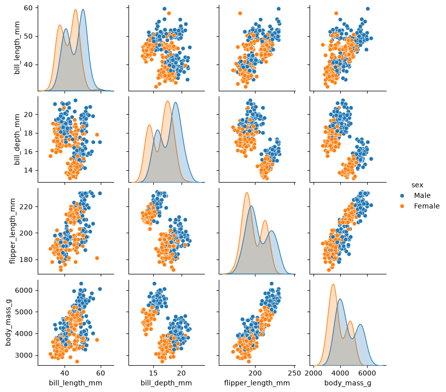
sns.pairplot(penguins, hue="island", height=2.0)
<seaborn.axisgrid.PairGrid at 0x148507690>
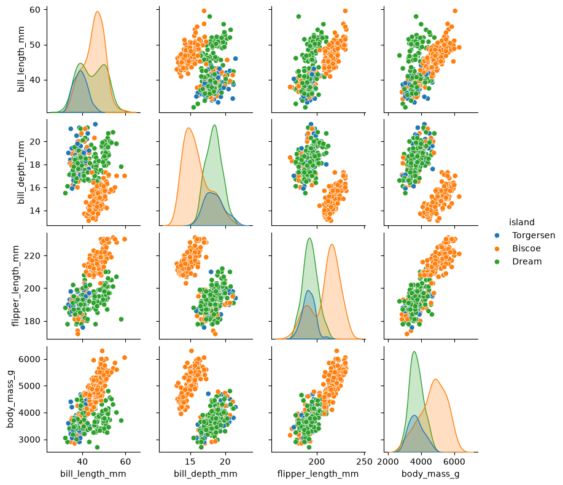
sns.pairplot(penguins, hue="species", height=2.0)
<seaborn.axisgrid.PairGrid at 0x1480a6690>
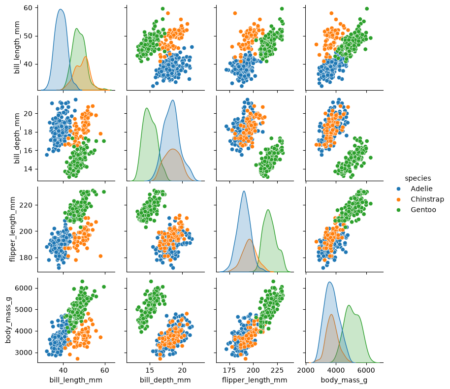
Discussion
Take a look at the pairplot we created. Consider the following questions:
Is there any class that is easily distinguishable from the others?
Which combination of attributes shows the best separation for all 3 class labels at once?
For pairplot with
hue="sex", which combination of features distinguishes the two sexes best?What about the one with
hue="island"?
2. Imputating Missing Values
After getting a statistical overview of our numerical variables, the next issue we need to investigate is missing data. In a real-world dataset, it is common for some measurements to be unavailable. In the Penguins dataset, for example, some penguins may have a missing body_mass_g, flipper_length_mm, or another measurement.
Missing values matter because many calculations and machine-learning algorithms cannot work directly with incomplete data. Before deciding what to do with missing values, however, we first need to find them and understand how much data is actually missing. The important point is that we should inspect the missing data before automatically deleting or replacing anything.
# check whether each column contains missing values
penguins.isna().sum()
species 0
island 0
bill_length_mm 2
bill_depth_mm 2
flipper_length_mm 2
body_mass_g 2
sex 11
dtype: int64
To focus specifically on numerical columns:
numericals = ["body_mass_g", "bill_length_mm", "bill_depth_mm", "flipper_length_mm"]
penguins_numericals = penguins[numericals].copy()
penguins_numericals
| body_mass_g | bill_length_mm | bill_depth_mm | flipper_length_mm | |
|---|---|---|---|---|
| 0 | 3750.0 | 39.1 | 18.7 | 181.0 |
| 1 | 3800.0 | 39.5 | 17.4 | 186.0 |
| 2 | 3250.0 | 40.3 | 18.0 | 195.0 |
| 3 | NaN | NaN | NaN | NaN |
| 4 | 3450.0 | 36.7 | 19.3 | 193.0 |
| ... | ... | ... | ... | ... |
| 339 | NaN | NaN | NaN | NaN |
| 340 | 4850.0 | 46.8 | 14.3 | 215.0 |
| 341 | 5750.0 | 50.4 | 15.7 | 222.0 |
| 342 | 5200.0 | 45.2 | 14.8 | 212.0 |
| 343 | 5400.0 | 49.9 | 16.1 | 213.0 |
344 rows × 4 columns
2.1 Dropping missing observations
Sometimes we only care about missing values in a particular numerical variable. For example, suppose we want to find the observations where the body mass value is missing. We can filter the dataset based on the missing values in the other columns. This is useful because it allows us to inspect the actual observations rather than treating missing values as abstract numbers.
At this point, we should ask an important question: Should we delete these rows, or should we fill in the missing values? One straightforward approach is to remove rows containing missing values. Pandas provides .dropna() for this.
print("Original shape:", penguins_numericals.shape)
penguins_numericals_dropna = penguins_numericals.dropna()
print("New shape:", penguins_numericals_dropna.shape)
Original shape: (344, 4)
New shape: (342, 4)
Warning
The dropna() is easy to use, but “easy” does not necessarily mean “appropriate”.
The decision to drop rows should therefore depend on the situation. If only a small number of observations are missing and those observations are not critical, dropping them may be perfectly reasonable. But if many observations are missing, deleting them could significantly reduce our dataset and potentially introduce bias.
2.2 Imputation of missing values
Another option is to impute the missing values with a suitable estimate. Common choices include the mean or median of that column, depending on the distribution.
Here we calculate mean and median values for numerical features. To illustrate this process, we take body_mass_g feature as an example.
body_mass_g_mean = penguins_numericals.body_mass_g.mean()
body_mass_g_median = penguins_numericals.body_mass_g.median()
print(f" mean value of body_mass_g is {body_mass_g_mean}")
print(f"median value of body_mass_g is {body_mass_g_median}")
mean value of body_mass_g is 4201.754385964912
median value of body_mass_g is 4050.0
Rather than directly replacing missing values, we concatenate new columns containing mean and median values for the body_mass_g feature to end of Penguins dataset, and than visualize distribution of this feature.
penguins_numericals['BMG_mean'] = penguins_numericals.body_mass_g.fillna(body_mass_g_mean)
penguins_numericals['BMG_median'] = penguins_numericals.body_mass_g.fillna(body_mass_g_median)
penguins_numericals.head().style.highlight_null(color = 'green')
| body_mass_g | bill_length_mm | bill_depth_mm | flipper_length_mm | BMG_mean | BMG_median | |
|---|---|---|---|---|---|---|
| 0 | 3750.000000 | 39.100000 | 18.700000 | 181.000000 | 3750.000000 | 3750.000000 |
| 1 | 3800.000000 | 39.500000 | 17.400000 | 186.000000 | 3800.000000 | 3800.000000 |
| 2 | 3250.000000 | 40.300000 | 18.000000 | 195.000000 | 3250.000000 | 3250.000000 |
| 3 | nan | nan | nan | nan | 4201.754386 | 4050.000000 |
| 4 | 3450.000000 | 36.700000 | 19.300000 | 193.000000 | 3450.000000 | 3450.000000 |
plt.figure(figsize=(9, 6))
penguins_numericals['body_mass_g'].plot(kind='kde', color='tab:green', label="body_mass_g")
penguins_numericals['BMG_mean'].plot(kind='kde', color='tab:orange', label="BMG_mean")
penguins_numericals['BMG_median'].plot(kind='kde', color='tab:blue', label="BMG_median")
plt.legend(loc='best')
plt.tight_layout()
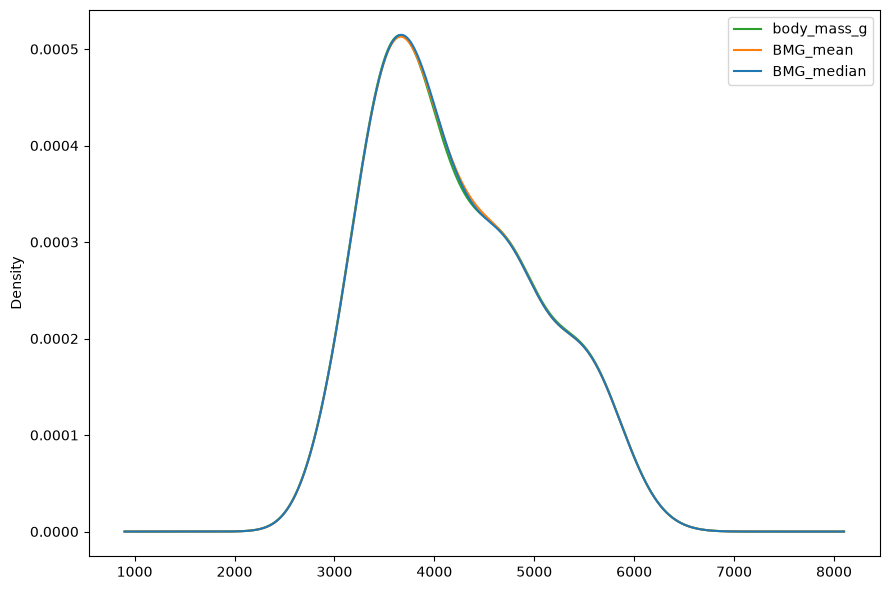
Mean or median imputation
Mean imputation is simple and can work well when the data is reasonably balanced and the missing values are not strongly associated with unusual observations.
But there is an important limitation: the mean can be affected by extreme values. If a numerical variable is strongly skewed or contains outliers, the mean may not represent a typical observation very well.
In such situation, the median becomes particularly useful. The median is less sensitive to extreme values than the mean, so it can often be a better choice when numerical data is skewed or contains outliers.
The key lesson is that missing-value handling is not simply a technical step. We need to make a decision based on how much data is missing, where it is missing, and what effect removing or replacing it might have on our analysis.
3. Handling Outliers
After getting statistical information from the Penguins dataset, the next step is to look more carefully at the unusual observations.
An outlier is a value that is unusually far from the other observations. For instance, if body mass of most of penguins in dataset varies between 3000-6000 g, an observation of 7500 g will be considered as an outlier since such an observation occurs rarely.
Outliers can occur because of measurement errors, data-entry mistakes, unusual but genuine cases, or because the population itself naturally contains extreme observations. Therefore, we should not automatically delete an outlier just because it looks unusual. Instead, we first identify it, investigate it, understand its impact, and then decide whether to retain, remove, or transform it.
penguins_numericals
| body_mass_g | bill_length_mm | bill_depth_mm | flipper_length_mm | BMG_mean | BMG_median | |
|---|---|---|---|---|---|---|
| 0 | 3750.0 | 39.1 | 18.7 | 181.0 | 3750.000000 | 3750.0 |
| 1 | 3800.0 | 39.5 | 17.4 | 186.0 | 3800.000000 | 3800.0 |
| 2 | 3250.0 | 40.3 | 18.0 | 195.0 | 3250.000000 | 3250.0 |
| 3 | NaN | NaN | NaN | NaN | 4201.754386 | 4050.0 |
| 4 | 3450.0 | 36.7 | 19.3 | 193.0 | 3450.000000 | 3450.0 |
| ... | ... | ... | ... | ... | ... | ... |
| 339 | NaN | NaN | NaN | NaN | 4201.754386 | 4050.0 |
| 340 | 4850.0 | 46.8 | 14.3 | 215.0 | 4850.000000 | 4850.0 |
| 341 | 5750.0 | 50.4 | 15.7 | 222.0 | 5750.000000 | 5750.0 |
| 342 | 5200.0 | 45.2 | 14.8 | 212.0 | 5200.000000 | 5200.0 |
| 343 | 5400.0 | 49.9 | 16.1 | 213.0 | 5400.000000 | 5400.0 |
344 rows × 6 columns
3.1 Imputating missing values with extreme data
In the code snippet below, we create a new column for body_mass_g and impute its missing values using the extreme end of the distribution (EoD). Here, the EoD is defined as the mean plus three standard deviations, calculated as mean + (3 * std).
eod_value = penguins['body_mass_g'].mean() + 3 * penguins['body_mass_g'].std() + 200
print(eod_value)
penguins_numericals['species'] = penguins['species']
penguins_numericals['BMG_EoD'] = penguins_numericals['body_mass_g'].fillna(eod_value)
penguins_numericals.head(5).style.highlight_null(color = 'green')
6807.617993059199
| body_mass_g | bill_length_mm | bill_depth_mm | flipper_length_mm | BMG_mean | BMG_median | species | BMG_EoD | |
|---|---|---|---|---|---|---|---|---|
| 0 | 3750.000000 | 39.100000 | 18.700000 | 181.000000 | 3750.000000 | 3750.000000 | Adelie | 3750.000000 |
| 1 | 3800.000000 | 39.500000 | 17.400000 | 186.000000 | 3800.000000 | 3800.000000 | Adelie | 3800.000000 |
| 2 | 3250.000000 | 40.300000 | 18.000000 | 195.000000 | 3250.000000 | 3250.000000 | Adelie | 3250.000000 |
| 3 | nan | nan | nan | nan | 4201.754386 | 4050.000000 | Adelie | 6807.617993 |
| 4 | 3450.000000 | 36.700000 | 19.300000 | 193.000000 | 3450.000000 | 3450.000000 | Adelie | 3450.000000 |
plt.figure(figsize=(8, 5))
sns.swarmplot(y=penguins_numericals["species"], x=penguins_numericals["BMG_EoD"],
color="lightgreen", marker="o", size=4)
sns.boxplot(y=penguins_numericals["species"], x=penguins_numericals["BMG_EoD"],
palette="coolwarm", notch=True, linewidth=2, width=0.5,
hue=penguins_numericals.species, legend=False)
plt.xlabel("Body mass (g)", fontsize=14)
plt.ylabel("Species", fontsize=14)
plt.tick_params(axis='x', labelsize=12)
plt.tick_params(axis='y', labelsize=12)
plt.tight_layout()
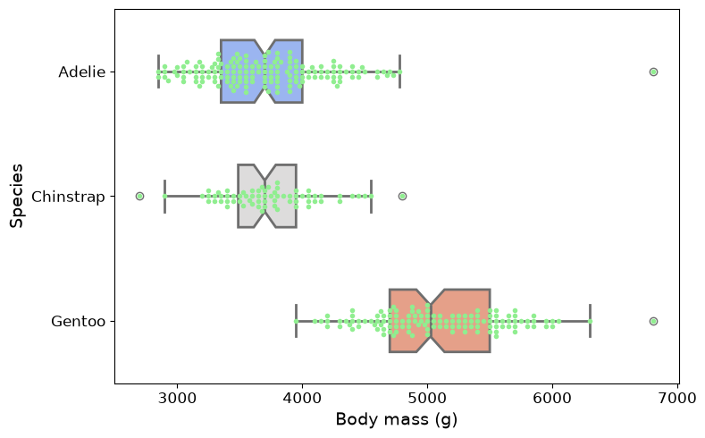
There are several approaches to identify outliers, and two of most commonly used methods are Interquartile Range (IQR) method and Mean-Standard Deviation method.
3.2 The Inter quartile range (IQR) method
penguins_numericals.body_mass_g.describe()
count 342.000000
mean 4201.754386
std 801.954536
min 2700.000000
25% 3550.000000
50% 4050.000000
75% 4750.000000
max 6300.000000
Name: body_mass_g, dtype: float64
IQR measures spread of middle 50% of data and is calculated by subtracting 1st quartile (25th percentile, Q1) from 3rd quartile (75th percentile, Q3).
Once IQR is obtained, we can determine boundaries for detecting outliers.
Lower limit is defined as Q1 minus 1.5 times IQR.
Upper limit is defined as Q3 plus 1.5 times IQR.
print(f"25% quantile = {penguins_numericals['body_mass_g'].quantile(0.25)}")
print(f"75% quantile = {penguins_numericals['body_mass_g'].quantile(0.75)}\n")
IQR = penguins_numericals["body_mass_g"].quantile(0.75) - penguins_numericals["body_mass_g"].quantile(0.25)
lower_bmg_limit = penguins_numericals["body_mass_g"].quantile(0.25) - (1.5 * IQR)
upper_bmg_limit = penguins_numericals["body_mass_g"].quantile(0.75) + (1.5 * IQR)
print(f"lower limt of IQR = {lower_bmg_limit} and upper limit of IQR = {upper_bmg_limit}")
25% quantile = 3550.0
75% quantile = 4750.0
lower limt of IQR = 1750.0 and upper limit of IQR = 6550.0
Any data points that fall below lower limit or above upper limit are considered outliers, and these points are subsequently removed from dataset.
# check data points larger than upper limit of IQR range
penguins_numericals[penguins_numericals["BMG_EoD"] > upper_bmg_limit]
| body_mass_g | bill_length_mm | bill_depth_mm | flipper_length_mm | BMG_mean | BMG_median | species | BMG_EoD | |
|---|---|---|---|---|---|---|---|---|
| 3 | NaN | NaN | NaN | NaN | 4201.754386 | 4050.0 | Adelie | 6807.617993 |
| 339 | NaN | NaN | NaN | NaN | 4201.754386 | 4050.0 | Gentoo | 6807.617993 |
# check data points smaller than lower limit of IQR range
penguins_numericals[penguins_numericals["body_mass_g"] < lower_bmg_limit]
| body_mass_g | bill_length_mm | bill_depth_mm | flipper_length_mm | BMG_mean | BMG_median | species | BMG_EoD |
|---|
What should we actually do with the outliers?
It is tempting to say, “We found outliers, so let’s delete them.” But that isn’t necessarily the right decision.
Imagine that an unusually heavy penguin is a genuine measurement.
Removing it would mean throwing away valid information.
On the other hand, if we discover that a measurement was entered incorrectly. For example, 35,000 grams instead of 3,500 grams, then removing or correcting that observation may be appropriate.
The decision can be thought of as three possibilities:
Retain: The value is unusual but valid.
Remove: The value is incorrect, impossible, or inappropriate for the analysis.
Transform or cap: The value is valid, but its extreme magnitude has too much influence on the analysis.
Capping or winsorizing
Instead of deleting extreme observations, another option is to cap them. This means we keep the observation but limit its value to a predefined boundary.
For the two abnormal values in
BMG_EoDcolumn, values below the lower boundary are replaced by the lower boundary, and values above the upper boundary are replaced by the upper boundary.This approach is sometimes called winsorizing when extreme values are replaced with specified percentile-based limits.
The advantage is that we don’t lose entire observations.
The disadvantage is that we are changing the numerical values, so we need to make sure that this transformation makes sense for our particular analysis.
4. Scaling & Normalizing Numerical Data
In many datasets, numerical features can be measured in very different units and ranges. For example, in the Penguins dataset, body mass is measured in grams and can range in the thousands, while flipper length is measured in millimeters and typically ranges in the hundreds. Both are numerical variables, but their numerical scales are very different. This difference can matter when we use the data for certain types of analysis and machine learning, making features with larger values dominate the learning process, leading to biased and inaccurate models.
Scaling transforms these features to a common, limited range, such as [0, 1] or a distribution with a mean of 0 and a standard deviation of 1, without distorting the differences in the ranges of values or losing information.
In this section, we will apply two common methods, standardization (Z-score normalization) and normalization (min-max scaling), to tranform the data.
4.1 Standardization (Z-score Normalization)
One of the most common approaches is standardization. Standardization transforms a variable so that it has a mean close to 0 and a standard deviation close to 1. It is calculated by subtracting the mean value ($\mu$) of the feature and then dividing by the standard deviation ($\sigma$), and its formula is $X_scaled = \frac{X - \mu}{\sigma}$.
penguins_BMG = penguins[["body_mass_g"]].copy()
penguins_BMG.dropna(inplace=True)
print(penguins_BMG)
body_mass_g
0 3750.0
1 3800.0
2 3250.0
4 3450.0
5 3650.0
.. ...
338 4925.0
340 4850.0
341 5750.0
342 5200.0
343 5400.0
[342 rows x 1 columns]
We use the StandardScaler from scikit-learn to standardize the body_mass_g variable. It transforms the data by subtracting the mean and dividing by the standard deviation, resulting in a mean of approximately 0 and a standard deviation of 1. This ensures that the variable is on a consistent scale for machine learning algorithms.
from sklearn.preprocessing import StandardScaler
scaler = StandardScaler()
penguins_BMG["BMG_Std"] = scaler.fit_transform(penguins_BMG[["body_mass_g"]])
penguins_BMG
| body_mass_g | BMG_Std | |
|---|---|---|
| 0 | 3750.0 | -0.564142 |
| 1 | 3800.0 | -0.501703 |
| 2 | 3250.0 | -1.188532 |
| 4 | 3450.0 | -0.938776 |
| 5 | 3650.0 | -0.689020 |
| ... | ... | ... |
| 338 | 4925.0 | 0.903175 |
| 340 | 4850.0 | 0.809516 |
| 341 | 5750.0 | 1.933419 |
| 342 | 5200.0 | 1.246590 |
| 343 | 5400.0 | 1.496346 |
342 rows × 2 columns
# verify mean and standard deviation of standardized BMG data
print("mean value:", penguins_BMG["BMG_Std"].mean())
print("standard deviation:", penguins_BMG["BMG_Std"].std())
mean value: 4.15522067695965e-17
standard deviation: 1.0014652022510058
4.2 Normalization (Min-Max Scaling)
Standardization is not the only option. Another common approach is min-max normalization, which transforms values into a specified range, typically [0, 1]. It is calculated by subtracting the minimum value of the feature and then dividing by the range (max - min), and its formula is $X_scaled = \frac{(X - X_min)}{(X_max - X_min)}$.
This method is useful when the distribution is not Gaussian or when the algorithm requires input values bounded within a specific range (e.g., neural networks often use activation functions that expect inputs in the [0,1] range).
from sklearn.preprocessing import MinMaxScaler
minmax_scaler = MinMaxScaler()
penguins_BMG["BMG_MinMax"] = minmax_scaler.fit_transform(penguins_BMG[["body_mass_g"]])
penguins_BMG
| body_mass_g | BMG_Std | BMG_MinMax | |
|---|---|---|---|
| 0 | 3750.0 | -0.564142 | 0.291667 |
| 1 | 3800.0 | -0.501703 | 0.305556 |
| 2 | 3250.0 | -1.188532 | 0.152778 |
| 4 | 3450.0 | -0.938776 | 0.208333 |
| 5 | 3650.0 | -0.689020 | 0.263889 |
| ... | ... | ... | ... |
| 338 | 4925.0 | 0.903175 | 0.618056 |
| 340 | 4850.0 | 0.809516 | 0.597222 |
| 341 | 5750.0 | 1.933419 | 0.847222 |
| 342 | 5200.0 | 1.246590 | 0.694444 |
| 343 | 5400.0 | 1.496346 | 0.750000 |
342 rows × 3 columns
# verify min and max values of normalized BMG data
print("min value:", penguins_BMG["BMG_MinMax"].min())
print("max value:", penguins_BMG["BMG_MinMax"].max())
min value: 0.0
max value: 1.0
Normalization vs. Standardization
Normalization, such as Min-Max scaling, is useful when features need to be mapped to a specific range, typically between 0 and 1, but it can be sensitive to outliers because extreme values affect the minimum and maximum.
Standardization transforms data to have a mean of 0 and a standard deviation of 1, making it generally more robust to differences in feature scales, and is less affected by outliers, although it does not restrict values to a fixed range.
Both methods can improve model performance and convergence, but the appropriate choice depends on the data distribution and the requirements of the machine learning algorithm.
Exercise
After completing the individual tasks for handling numerical data, it is now time to bring everything together in a hands-on exercise. In this activity, we will work with representative datasets from scikit-learn and apply the data-handling techniques we have learned throughout the episode.
Select a dataset: Choose one dataset from scikit-learn: Iris, Diabetes, Wine, Breast Cancer, or California Housing.
from sklearn import datasets iris = datasets.load_iris(as_frame=True) iris_df = iris.frame iris_df.head() diabetes = datasets.load_diabetes(as_frame=True) diabetes_df = diabetes.frame diabetes_df.head() wine = datasets.load_wine(as_frame=True) wine_df = wine.frame wine_df.head() cancer = datasets.load_breast_cancer(as_frame=True) cancer_df = cancer.frame cancer_df.head() housing = datasets.fetch_california_housing(as_frame=True) housing_df = housing.frame housing_df.head()
Inspect the dataset: Examine the shape, columns, data types, and first few observations.
Remove unnecessary rows and columns: Identify irrelevant or redundant data and remove it where appropriate.
Get statistical information: Calculate and interpret count, mean, median, minimum, maximum, quartiles, and standard deviation.
Check for missing values: Identify missing values and calculate their counts and percentages.
Decide how to handle missing values: Determine whether to remove observations or impute missing numerical values using an appropriate method.
Identify and handle outliers: Use summary statistics, the IQR method, and visualizations to identify potential outliers, then decide whether to retain, remove, or cap them.
Scale or normalize numerical features: Apply standardization or min-max normalization to selected features and compare the values before and after transformation.
Verify the cleaned dataset: Check the final shape, columns, data types, missing values, ranges, and other relevant properties to confirm that the dataset is ready for further analysis or machine learning.
Keypoints
Get familiar with the Palmer Penguins dataset.
Perform statistical analysis and data visualization using Pandas and Seaborn.
Identify and handle missing values in numerical features.
Identify and handle outliers in the dataset.
Apply standardization and normalization techniques to numerical features.
Processing Categorical Data
It is often useful to measure objects not in terms of their quantity but in terms of some quality. In data analysis, these qualities are often represented as categorical features, which describe characteristics using distinct groups or categories rather than numerical values. Categorical data can generally be divided into nominal categories, which have no inherent order (such as red, blue, green), and ordinal categories, where the categories follow a meaningful ranking or order (such as low, medium, high). Although categorical features are common in real-world datasets, typical applications require them to be represented in a numerical form.
In this episode, we will focus on several important techniques for processing categorical data. We will explore how to encode nominal and ordinal categorical features, work with dictionaries of features, and impute missing class. Understanding these techniques is essential for preparing categorical data effectively and ensuring that it can be used reliably in machine learning models.
Objectives
Understand the difference between nominal and ordinal categorical features.
Learn how to encode categorical features for machine learning.
Understand how to work with dictionaries of features.
Learn techniques for handling missing categorical values.
Instructor note
30 minutes teaching
15 minutes exercising/discussion
1. Getting Started with Categorical Data
Categorical data refers to data that represents the qualities, characteristics, or groups of an observation rather than a numerical quantity. Instead of measuring something with a number, categorical variables describe which category an observation belongs to. For example, a person’s gender, a product type, or a customer’s satisfaction level can all be represented as categorical data.
Categorical features are commonly divided into two main types: nominal and ordinal.
Nominal categories have no natural order, such as colors or product types.
Ordinal categories have a meaningful order, such as low, medium, and high.
from IPython.display import display, Image
display(Image(filename='../images/categorical-data/categorical-data.png', width=1024))

When working with categorical data in data analysis and machine learning, these features often need to be transformed into a format that algorithms can understand. Typically, categorical data should be represented using numerical values rather than raw strings, allowing relevant algorithms to process and analyze these features effectively. This may involve using different encoding techniques for nominal and ordinal features, representing categorical information using dictionaries of features, and dealing with practical issues such as missing class values.
2. Encoding Nominal Categorical Features
Below are some representative examples of nominal categorical features.
color: Red, Blue, Green
city: Stockholm, Uppsala, Lund, Linkoping
A key characteristic of nominal features is that they have no inherent order or ranking, and there is no meaningful numerical relationship between their categories. In other words, we cannot say that one category is better, more important, or higher than another; the categories simply represent different groups or labels.
2.1 One-hot encoding (OHE)
How can we represent this information numerically without introducing a false ordering between the categories? This naturally leads us to one-hot encoding (OHE).
OHE is a technique that converts each category into a separate binary feature, typically represented as 0 or 1.
OHE is well supported in scikit-learn, and below are some code snippets demonstrating how to encode nominal categorical features.
import pandas as pd
city_df = pd.DataFrame({"city": ["Stockholm", "Linkoping", "Lund", "Stockholm", "Uppsala", "Linkoping"]})
city_df
| city | |
|---|---|
| 0 | Stockholm |
| 1 | Linkoping |
| 2 | Lund |
| 3 | Stockholm |
| 4 | Uppsala |
| 5 | Linkoping |
OHE is implemented in scikit-learn using the OneHotEncoder class.
from sklearn.preprocessing import OneHotEncoder
ohe_encoder = OneHotEncoder(sparse_output=False)
ohe_encoder.fit(city_df[["city"]])
city_names = ohe_encoder.categories_[0]
print(city_names, '\n')
city_ohe = ohe_encoder.fit_transform(city_df[["city"]])
city_ohe = pd.DataFrame(city_ohe, columns=city_names).astype(int)
city_df_ohe = pd.concat([city_df, city_ohe], axis=1)
city_df_ohe
['Linkoping' 'Lund' 'Stockholm' 'Uppsala']
| city | Linkoping | Lund | Stockholm | Uppsala | |
|---|---|---|---|---|---|
| 0 | Stockholm | 0 | 0 | 1 | 0 |
| 1 | Linkoping | 1 | 0 | 0 | 0 |
| 2 | Lund | 0 | 1 | 0 | 0 |
| 3 | Stockholm | 0 | 0 | 1 | 0 |
| 4 | Uppsala | 0 | 0 | 0 | 1 |
| 5 | Linkoping | 1 | 0 | 0 | 0 |
In the preceding code snippets, fit_transform() is a two-step operation.
First,
fitmeans that the transformer learns necessary information from data. In this case, it means identifying the list of unique categories in the data.Then,
transformmeans that the transformer uses what it has learned to convert the data into the desired representation. Here, it converts each category into its corresponding OHE representation.Therefore,
fit_transform()performs both steps at once: it first learns from the data and then transforms that same data using the information it has learned.
Warning
After OHE encoding, we typically obtain a sparse matrix, where most of the entries are 0s. For a small dataset with a limited number of features, such a matrix is relatively easy to handle. However, for high-cardinality features, which are categorical features containing a large number of unique categories, using OHE can become problematic because each unique category creates a new column.
For example, if a dataset contains 100,000 unique product IDs, OHE could create 100,000 additional columns, resulting in a very large and mostly sparse matrix. To address this issue, sparse matrix representations store only the non-zero values and their corresponding positions rather than explicitly storing all the zeros. This can significantly reduce memory usage and improve computational efficiency when working with high-dimensional categorical data.
2.2 Label encoding
If we want to avoid creating a large sparse matrix, we can use label encoding to transform categorical data. Label encoding transforms a categorical feature into a single numerical column by assigning a unique integer to each category. This produces a much more compact representation and can be more memory-efficient, especially when feature contains a large number of unique categories.
from sklearn.preprocessing import LabelEncoder
lb_encoder = LabelEncoder()
city_lb = lb_encoder.fit_transform(city_df["city"])
city_lb = pd.DataFrame(city_lb, columns=["LB_encoded"])
city_df_ohe_lb = pd.concat([city_df_ohe, city_lb], axis=1)
city_df_ohe_lb
| city | Linkoping | Lund | Stockholm | Uppsala | LB_encoded | |
|---|---|---|---|---|---|---|
| 0 | Stockholm | 0 | 0 | 1 | 0 | 2 |
| 1 | Linkoping | 1 | 0 | 0 | 0 | 0 |
| 2 | Lund | 0 | 1 | 0 | 0 | 1 |
| 3 | Stockholm | 0 | 0 | 1 | 0 | 2 |
| 4 | Uppsala | 0 | 0 | 0 | 1 | 3 |
| 5 | Linkoping | 1 | 0 | 0 | 0 | 0 |
However, label encoding introduces an artificial ordinal relationship between categories. For example, assigning a larger value to Uppsala than Linköping may incorrectly imply that Uppsala is somehow greater or more important than Linköping. This relationship may not be meaningful and can negatively affect algorithms that assume numerical values have an inherent order. Therefore, we need to take this limitation into consideration when choosing and interpreting the encoding method.
3. Encoding Ordinal Categorical Features
However, if categorical features have a natural and meaningful ordering, such as student performance levels classified as Low, Medium, and High, ordinal encoding can be a good choice. It is important to assign numerical values based on prior knowledge of the ordinal categories and their relationships. For example, assigning Low = 1, Medium = 2, and High = 3 implicitly suggests that the intervals between the categories are equal.
import pandas as pd
from sklearn.preprocessing import OrdinalEncoder
score_df = pd.DataFrame({"Score": ["Low", "Low", "Medium", "Medium", "High"]})
encoder = OrdinalEncoder(categories=[["Low", "Medium", "High"]])
score_df["Score_Encoded"] = encoder.fit_transform(score_df[["Score"]]).astype(int) + 1
print(score_df)
Score Score_Encoded
0 Low 1
1 Low 1
2 Medium 2
3 Medium 2
4 High 3
While this assumption may be reasonable in many cases, it can be misleading when the distances between ordinal categories are not equal. For example, suppose we have a category called “Barely More Than Medium”, which is only slightly higher than Medium. In this case, we need to carefully consider the numerical values assigned to each category. The interval between Low and Medium may be substantially larger than the interval between Medium and Barely More Than Medium.
score_df = pd.DataFrame({
"Score": ["Low", "Low", "Medium", "Medium", "High", "Barely More Than Medium"]
})
encoder = OrdinalEncoder(
categories=[["Low", "Medium", "Barely More Than Medium", "High"]]
)
score_df["Score_Encoded"] = encoder.fit_transform(score_df[["Score"]]).astype(int) + 1
print(score_df)
Score Score_Encoded
0 Low 1
1 Low 1
2 Medium 2
3 Medium 2
4 High 4
5 Barely More Than Medium 3
In such cases, it may be more appropriate to use a custom dictionary mapping rather than OrdinalEncoder.
A dictionary allows us to explicitly assign numerical values that better reflect the actual relationships between the ordinal categories, based on domain knowledge.
score_mapping = {
"Low": 1,
"Medium": 2,
"Barely More Than Medium": 2.2,
"High": 3
}
score_df["Score_Encoded"] = score_df["Score"].map(score_mapping)
print(score_df)
Score Score_Encoded
0 Low 1.0
1 Low 1.0
2 Medium 2.0
3 Medium 2.0
4 High 3.0
5 Barely More Than Medium 2.2
4. Encoding Dictionaries of Features
A dictionary is a widely used data structure for storing data as key–value pairs. This representation is particularly common in natural language processing (NLP). For example, we might have a collection of documents, where each document is represented by a dictionary containing each word as a key and the number of times that word appears in the document as its value.
# create word count dictionaries for four documents
doc_1_word_count = {"Red": 2, "Green": 4}
doc_2_word_count = {"Green": 4, "Blue": 3}
doc_3_word_count = {"Yellow": 2, "Red": 1}
doc_4_word_count = {"Orange": 5, "Yellow": 3}
doc_word_counts = [doc_1_word_count, doc_2_word_count, doc_3_word_count, doc_4_word_count]
doc_word_counts
[{'Red': 2, 'Green': 4},
{'Green': 4, 'Blue': 3},
{'Yellow': 2, 'Red': 1},
{'Orange': 5, 'Yellow': 3}]
However, when performing data analysis or applying machine learning algorithms, we typically expect the data to be represented as a feature matrix.
Using DictVectorizer from scikit-learn, we can easily transform a collection of dictionaries into a feature matrix, where each unique word becomes a feature and each matrix entry represents the number of times that word appears in a particular document.
from sklearn.feature_extraction import DictVectorizer
# create dictionary vectorizer
dictvectorizer = DictVectorizer(sparse=False)
# convert list of word count dictionaries into feature matrix
features = dictvectorizer.fit_transform(doc_word_counts)
features
array([[0., 4., 0., 2., 0.],
[3., 4., 0., 0., 0.],
[0., 0., 0., 1., 2.],
[0., 0., 5., 0., 3.]])
# get feature names
feature_names = dictvectorizer.get_feature_names_out()
feature_names
array(['Blue', 'Green', 'Orange', 'Red', 'Yellow'], dtype=object)
doc_word_counts_dictvec = pd.DataFrame(features,
index=[
"doc_1_word_count",
"doc_2_word_count",
"doc_3_word_count",
"doc_4_word_count"
],
columns=feature_names).astype(int)
doc_word_counts_dictvec
| Blue | Green | Orange | Red | Yellow | |
|---|---|---|---|---|---|
| doc_1_word_count | 0 | 4 | 0 | 2 | 0 |
| doc_2_word_count | 3 | 4 | 0 | 0 | 0 |
| doc_3_word_count | 0 | 0 | 0 | 1 | 2 |
| doc_4_word_count | 0 | 0 | 5 | 0 | 3 |
In this toy example, there are only five unique words (Red, Yellow, Blue, Orange, and Green), so the feature matrix contains only five features. However, imagine that each document is an entire book from a university library. In that case, the number of unique words, and therefore the number of features, could become extremely large. The resulting matrix would also be very sparse, with most entries equal to zero.
To handle such a high-dimensional dataset efficiently, we can configure DictVectorizer to return a sparse matrix by setting sparse=True. This allows the vectorizer to store only the non-zero values, significantly reducing memory usage.
5. Imputing Missing Class Values
When handling a dataset with missing values in a categorical feature, one effective approach is to use a machine learning algorithm to predict the missing values. We can accomplish this by treating the categorical feature with missing values as the target vector, while using the other available features as the feature matrix.
Here, we have a smaller version of the Penguins dataset. It contains 30 penguins, with two numerical features, body mass and flipper length, and one categorical feature, species.
import pandas as pd
# 30 penguin samples
penguins = pd.DataFrame({
"Species": [
"Adelie", "Adelie", None, "Adelie", "Adelie",
"Adelie", "Adelie", "Adelie", "Adelie", "Adelie",
"Chinstrap", "Chinstrap", "Chinstrap", None, "Chinstrap",
"Chinstrap", "Chinstrap", "Chinstrap", "Chinstrap", "Chinstrap",
"Gentoo", "Gentoo", "Gentoo", "Gentoo", "Gentoo",
None, "Gentoo", "Gentoo", "Gentoo", "Gentoo"
],
"Body_Mass (g)": [
3700, 3700, 3800, 3900, 4000,
4100, 3500, 3750, 3750, 3950,
3500, 3650, 3800, 3850, 4150,
4050, 3950, 3700, 3900, 4000,
5000, 5100, 5200, 5300, 4950,
5150, 5250, 5400, 5050, 5350
],
"Flipper_Length (mm)": [
180, 182, 184, 186, 188,
190, 179, 185, 187, 189,
181, 183, 187, 187, 189,
191, 184, 186, 188, 190,
215, 220, 225, 230, 218,
222, 227, 232, 217, 229
]
})
print(penguins)
Species Body_Mass (g) Flipper_Length (mm)
0 Adelie 3700 180
1 Adelie 3700 182
2 NaN 3800 184
3 Adelie 3900 186
4 Adelie 4000 188
5 Adelie 4100 190
6 Adelie 3500 179
7 Adelie 3750 185
8 Adelie 3750 187
9 Adelie 3950 189
10 Chinstrap 3500 181
11 Chinstrap 3650 183
12 Chinstrap 3800 187
13 NaN 3850 187
14 Chinstrap 4150 189
15 Chinstrap 4050 191
16 Chinstrap 3950 184
17 Chinstrap 3700 186
18 Chinstrap 3900 188
19 Chinstrap 4000 190
20 Gentoo 5000 215
21 Gentoo 5100 220
22 Gentoo 5200 225
23 Gentoo 5300 230
24 Gentoo 4950 218
25 NaN 5150 222
26 Gentoo 5250 227
27 Gentoo 5400 232
28 Gentoo 5050 217
29 Gentoo 5350 229
import matplotlib.pyplot as plt
plt.figure(figsize=(9, 6))
for species in ["Adelie", "Chinstrap", "Gentoo"]:
data = penguins[penguins["Species"] == species]
plt.scatter(
data["Flipper_Length (mm)"],
data["Body_Mass (g)"],
label=species
)
# plot samples with missing labels
missing = penguins[penguins["Species"].isna()]
plt.scatter(
missing["Flipper_Length (mm)"],
missing["Body_Mass (g)"],
marker="x",
s=100,
label="Missing label"
)
plt.xlabel("Flipper Length (mm)")
plt.ylabel("Body Mass (g)")
plt.legend()
plt.tight_layout
plt.show()
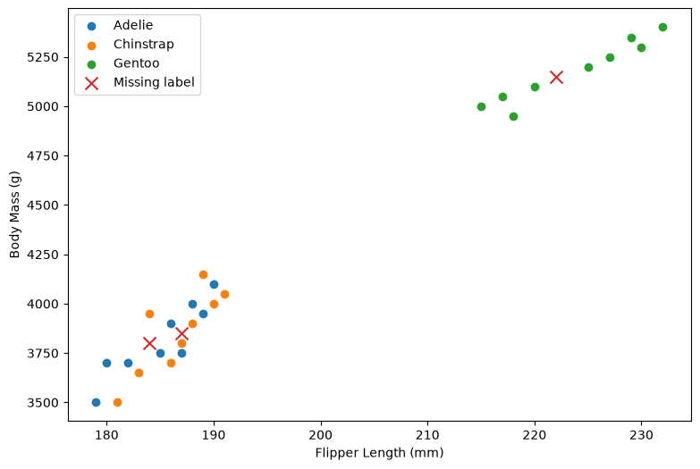
In this example, we use an algorithm called k-Nearest Neighbors (kNN) to predict the missing class labels. KNN identifies the k observations that are closest to the observation with the missing value and assigns it the most frequent class among those nearest neighbors. In this way, the missing categorical values can be inferred from the patterns in the other features.
from sklearn.neighbors import KNeighborsClassifier
from sklearn.preprocessing import StandardScaler
# features used for classification
features = ["Body_Mass (g)", "Flipper_Length (mm)"]
# separate known and missing observations
known = penguins["Species"].notna()
missing = penguins["Species"].isna()
# training data
X_train = penguins.loc[known, features]
y_train = penguins.loc[known, "Species"]
# data with missing species labels
X_missing = penguins.loc[missing, features]
# standardize features
scaler = StandardScaler()
X_train_scaled = scaler.fit_transform(X_train)
X_missing_scaled = scaler.transform(X_missing)
# create and train kNN model
knn = KNeighborsClassifier(n_neighbors=3) # try different odd numbers
knn.fit(X_train_scaled, y_train)
# predict missing species
predictions = knn.predict(X_missing_scaled)
# display predictions
print("Predicted species:")
for index, prediction in zip(penguins.index[missing], predictions):
print(f"Row {index}: {prediction}")
Predicted species:
Row 2: Adelie
Row 13: Chinstrap
Row 25: Gentoo
We have other options for handling missing categorical values. For example, we could discard the observations with missing values, or we could use more sophisticated algorithms to predict and imputate those missing values.
The first approach can be rather crude, especially when a large number of observations have missing values. There may be many reasons why values are missing, and simply discarding these observations could result in the loss of valuable information.
The second approach, using machine learning or other advanced imputation techniques, can preserve more of the available data and is often more scalable to larger datasets.
6. Encoding Strategies
Beyond these common methods, there are several other encoding strategies that can be especially useful when working with more complex datasets:
Binary Encoding: Converts categories into binary representations, providing a useful compromise between OHE and label encoding, particularly for high-cardinality categorical features.
Target Encoding (Mean Encoding): Replaces each category with the average value of the target variable for that category. This can be powerful, but it must be carefully implemented to avoid overfitting and data leakage.
Frequency Encoding: Replaces each category with its frequency or proportion of occurrence in the dataset. This can be useful for reducing the dimensionality of high-cardinality features.
Below, we provide a comprehensive summary of these methods, including their pros and cons and representative applications.
Method |
Pros |
Cons |
Representative Applications |
|---|---|---|---|
One-Hot Encoding (OHE) |
Simple; no artificial order; interpretable |
Many columns; memory-intensive for high cardinality |
Country, color, product type, gender |
Label Encoding |
Simple; compact; memory-efficient |
Artificial ordering for nominal data |
Tree-based models; binary categories |
Ordinal Encoding |
Preserves natural order; easy to implement |
Assumes numeric spacing is meaningful |
Education level, satisfaction, size |
Dictionary Mapping |
Flexible; custom numeric values |
Requires domain knowledge; manual |
Custom ordinal scales, expert-defined scores |
DictVectorizer |
Converts dictionaries to matrices; supports sparse output |
High dimensionality with many features |
NLP, word counts, dictionary-based data |
KNN / ML Imputation |
Uses other features; preserves observations |
Computationally expensive; prediction errors |
Missing class/category values |
Binary Encoding |
Fewer columns; good for high cardinality |
Less interpretable; more complex |
Product IDs, ZIP codes, large categorical datasets |
Target Encoding |
Compact; effective for high cardinality |
Overfitting/data leakage risk |
Product category, merchant ID, customer segment |
Frequency Encoding |
Simple; compact; handles high cardinality |
Loses category identity; frequency may not be predictive |
Product IDs, website IDs, transaction categories |
Overall, there is no single best encoding method for every dataset. The choice of encoding is an important modeling decision and should be guided by several factors, including whether the categorical variable is nominal or ordinal, the number of unique categories (cardinality), the amount of available data, and the type of algorithm being used. A well-chosen encoding method represents categorical information in a way that allows the model to learn meaningful patterns while minimizing the risk of introducing artificial relationships, bias, noise, or unnecessary computational complexity.
Exercise
After completing the individual tasks for handling categorical data, it is now time to bring everything together in a hands-on exercise. We will contine to work on representative datasets as listed below.
Select a dataset: Choose one dataset from scikit-learn: Titanic, Adult Income, Ames Housing.
from sklearn.datasets import fetch_openml titanic = fetch_openml("titanic", version=1, as_frame=True) titanic_df = titanic.frame titanic_df adult = fetch_openml("adult", version=2, as_frame=True) adult_df = adult.frame adult_df ames = fetch_openml(name="house_prices", as_frame=True) ames_df = ames.frame ames_df
Explore categorical features: Examine the unique categories and their frequencies to understand how the categorical variables are distributed.
Identify nominal and ordinal categorical features in dataset.
Encode categorical features: Convert categorical variables into numerical representations using appropriate techniques, such as ordinal encoding, one-hot encoding, or feature hashing.
Check for missing values: Identify missing values in categorical features and calculate their counts and percentages.
Decide how to handle missing categorical values: Determine whether to remove observations or impute the missing values using an appropriate method, such as the most frequent category or a machine learning approach.
Keypoints
Distinguish between nominal and ordinal categorical features and understand when each type of encoding is appropriate.
Encode categorical data using techniques such as one-hot, label, ordinal, and custom dictionary mapping.
Transform dictionary-based features into numerical feature matrices using
DictVectorizer.Handle missing categorical values using deletion, statistical approaches, or machine learning-based imputation.
Select appropriate encoding strategies based on feature type, cardinality, dataset characteristics, and machine learning algorithm.
Exploring Dates, Times, and Time-Series Data
Dates and times (datetimes), such as the time of a particular sale or the date of a public health statistic, are frequently encountered during preprocessing for data analysis and machine learning. Longitudinal data, or time-series data, is data that is collected repeatedly for the same variables over points in time. Dates and times data are temporal data that capture when an event occurs, while time-series data is widely used to understand patterns, trends, and changes over time. Because machine-learning algorithms generally require numerical and consistently formatted inputs, dates and times often need to be transformed into useful numerical features before they can be used effectively in a model.
In this episode, we will take a practical approach to handling numerical and temporal aspects of Dates, Times, and Time-Series Data. We will build a toolbox of strategies for converting date and time values into ready-to-use features, including working with time zones, selecting observations by date and time, extracting useful components such as year, month, and day, calculating differences between dates, creating lagged features, and using rolling time windows. Specifically, we will focus on time-series capabilities of the pandas library, which provides a centralized set of tools for working with temporal data and integrates naturally with Python’s general-purpose datetime functionality.
Objectives
Convert and manipulate date and time data using pandas datetime functionality.
Select and filter observations based on dates, times, and time periods.
Create useful time-based features, including elapsed time, lagged features, and rolling-window statistics.
Identify and appropriately handle missing values and missing timestamps in time-series data.
Instructor note
40 minutes teaching
20 minutes exercising/discussion
1. UCI Individual Household Electric Power Consumption Dataset
The UCI Individual Household Electric Power Consumption dataset contains 2,075,259 measurements of electricity consumption from a single household in Sceaux, France, recorded at one-minute intervals from December 2006 to November 2010. It includes date and time information together with numerical measurements such as active power, reactive power, voltage, current intensity, and electricity consumption from three household sub-meterings. This dataset is particularly useful for learning how to handle numerical and time-series data, and it also contains missing values that can be used for data-cleaning exercises.
import pandas as pd
url = "https://raw.githubusercontent.com/jbrownlee/Datasets/master/household_power_consumption.zip"
df = pd.read_csv(url, sep=";", na_values="?")
# quick preview and inspect a dataset's structure, column names, and data types
df.head() # df.tail() # df.sample(5)
| Date | Time | Global_active_power | Global_reactive_power | Voltage | Global_intensity | Sub_metering_1 | Sub_metering_2 | Sub_metering_3 | |
|---|---|---|---|---|---|---|---|---|---|
| 0 | 16/12/2006 | 17:24:00 | 4.216 | 0.418 | 234.84 | 18.4 | 0.0 | 1.0 | 17.0 |
| 1 | 16/12/2006 | 17:25:00 | 5.360 | 0.436 | 233.63 | 23.0 | 0.0 | 1.0 | 16.0 |
| 2 | 16/12/2006 | 17:26:00 | 5.374 | 0.498 | 233.29 | 23.0 | 0.0 | 2.0 | 17.0 |
| 3 | 16/12/2006 | 17:27:00 | 5.388 | 0.502 | 233.74 | 23.0 | 0.0 | 1.0 | 17.0 |
| 4 | 16/12/2006 | 17:28:00 | 3.666 | 0.528 | 235.68 | 15.8 | 0.0 | 1.0 | 17.0 |
# get number of rows and columns in a DataFrame
df.shape
(2075259, 9)
# print a concise summary of a DataFrame
df.info()
<class 'pandas.DataFrame'>
RangeIndex: 2075259 entries, 0 to 2075258
Data columns (total 9 columns):
# Column Dtype
--- ------ -----
0 Date str
1 Time str
2 Global_active_power float64
3 Global_reactive_power float64
4 Voltage float64
5 Global_intensity float64
6 Sub_metering_1 float64
7 Sub_metering_2 float64
8 Sub_metering_3 float64
dtypes: float64(7), str(2)
memory usage: 142.5 MB
# basic numerical analysis
print(df.describe()) # df.Global_active_power
Global_active_power Global_reactive_power Voltage \
count 2.049280e+06 2.049280e+06 2.049280e+06
mean 1.091615e+00 1.237145e-01 2.408399e+02
std 1.057294e+00 1.127220e-01 3.239987e+00
min 7.600000e-02 0.000000e+00 2.232000e+02
25% 3.080000e-01 4.800000e-02 2.389900e+02
50% 6.020000e-01 1.000000e-01 2.410100e+02
75% 1.528000e+00 1.940000e-01 2.428900e+02
max 1.112200e+01 1.390000e+00 2.541500e+02
Global_intensity Sub_metering_1 Sub_metering_2 Sub_metering_3
count 2.049280e+06 2.049280e+06 2.049280e+06 2.049280e+06
mean 4.627759e+00 1.121923e+00 1.298520e+00 6.458447e+00
std 4.444396e+00 6.153031e+00 5.822026e+00 8.437154e+00
min 2.000000e-01 0.000000e+00 0.000000e+00 0.000000e+00
25% 1.400000e+00 0.000000e+00 0.000000e+00 0.000000e+00
50% 2.600000e+00 0.000000e+00 0.000000e+00 1.000000e+00
75% 6.400000e+00 0.000000e+00 1.000000e+00 1.700000e+01
max 4.840000e+01 8.800000e+01 8.000000e+01 3.100000e+01
# average, minimum and maximum power consumption
print("Average of Global_active_power:", df["Global_active_power"].mean())
print("Minimum of Global_active_power:", df["Global_active_power"].min())
print("Maximum of Global_active_power:", df["Global_active_power"].max())
Average of Global_active_power: 1.0916150365006245
Minimum of Global_active_power: 0.076
Maximum of Global_active_power: 11.122
2. From Date Strings to Datetime
Once we have imported the dataset, one of the first preprocessing tasks is to make sure that information representing dates and times is stored in a format that Python and pandas can understand.
In this dataset, the Date (the first column) and Time (the second column) columns initially contain values as strings, even though they represent meaningful points in time. The output info tells us that pandas currently sees Date and Time as text rather than datetime information.
print(df[["Date", "Time"]].head(), '\n')
print(df[["Date", "Time"]].dtypes)
Date Time
0 16/12/2006 17:24:00
1 16/12/2006 17:25:00
2 16/12/2006 17:26:00
3 16/12/2006 17:27:00
4 16/12/2006 17:28:00
Date str
Time str
dtype: object
2.1 Convert strings to datetime type
Here, we will use pd.to_datetime() to convert these strings into pandas datetime values.
df["Date"] = pd.to_datetime(df["Date"], format="%d/%m/%Y")
print(df.dtypes) # now it is a datetime type
df.head()
Date datetime64[us]
Time str
Global_active_power float64
Global_reactive_power float64
Voltage float64
Global_intensity float64
Sub_metering_1 float64
Sub_metering_2 float64
Sub_metering_3 float64
dtype: object
| Date | Time | Global_active_power | Global_reactive_power | Voltage | Global_intensity | Sub_metering_1 | Sub_metering_2 | Sub_metering_3 | |
|---|---|---|---|---|---|---|---|---|---|
| 0 | 2006-12-16 | 17:24:00 | 4.216 | 0.418 | 234.84 | 18.4 | 0.0 | 1.0 | 17.0 |
| 1 | 2006-12-16 | 17:25:00 | 5.360 | 0.436 | 233.63 | 23.0 | 0.0 | 1.0 | 16.0 |
| 2 | 2006-12-16 | 17:26:00 | 5.374 | 0.498 | 233.29 | 23.0 | 0.0 | 2.0 | 17.0 |
| 3 | 2006-12-16 | 17:27:00 | 5.388 | 0.502 | 233.74 | 23.0 | 0.0 | 1.0 | 17.0 |
| 4 | 2006-12-16 | 17:28:00 | 3.666 | 0.528 | 235.68 | 15.8 | 0.0 | 1.0 | 17.0 |
Instead of ordinary strings, pandas now recognizes these values as dates, from which we can perform operations such as extracting the year, month, and day.
df["Year"] = df["Date"].dt.year
df["Month"] = df["Date"].dt.month
df["Day"] = df["Date"].dt.day
df.head()
| Date | Time | Global_active_power | Global_reactive_power | Voltage | Global_intensity | Sub_metering_1 | Sub_metering_2 | Sub_metering_3 | Year | Month | Day | |
|---|---|---|---|---|---|---|---|---|---|---|---|---|
| 0 | 2006-12-16 | 17:24:00 | 4.216 | 0.418 | 234.84 | 18.4 | 0.0 | 1.0 | 17.0 | 2006 | 12 | 16 |
| 1 | 2006-12-16 | 17:25:00 | 5.360 | 0.436 | 233.63 | 23.0 | 0.0 | 1.0 | 16.0 | 2006 | 12 | 16 |
| 2 | 2006-12-16 | 17:26:00 | 5.374 | 0.498 | 233.29 | 23.0 | 0.0 | 2.0 | 17.0 | 2006 | 12 | 16 |
| 3 | 2006-12-16 | 17:27:00 | 5.388 | 0.502 | 233.74 | 23.0 | 0.0 | 1.0 | 17.0 | 2006 | 12 | 16 |
| 4 | 2006-12-16 | 17:28:00 | 3.666 | 0.528 | 235.68 | 15.8 | 0.0 | 1.0 | 17.0 | 2006 | 12 | 16 |
2.2 Explicit formats to combine Date and Time
For time-series analysis, having separate Date and Time columns is often less convenient than having one timestamp, which contains information such as the year, month, day, hour, minute, and second.
df["Datetime"] = df["Date"] + pd.to_timedelta(df["Time"])
print(df[["Date", "Time", "Datetime"]].head())
Date Time Datetime
0 2006-12-16 17:24:00 2006-12-16 17:24:00
1 2006-12-16 17:25:00 2006-12-16 17:25:00
2 2006-12-16 17:26:00 2006-12-16 17:26:00
3 2006-12-16 17:27:00 2006-12-16 17:27:00
4 2006-12-16 17:28:00 2006-12-16 17:28:00
A timestamp (the Datetime column) is convenient for us to select periods, to calculate time differences, to create lagged features, and work with rolling windows as we will explore in following sections.
2.3 Handling invalid dates
Real-world datasets are rarely perfect. We may encounter values that do not represent valid dates. For example, in the toy dateset below, the value 31/02/2007 is invalid because February does not have 31 days.
dates = pd.Series([
"16/12/2006",
"17/12/2006",
"31/02/2007",
"18/12/2006"
])
If we attempt pd.to_datetime(dates, format="%d/%m/%Y"), pandas can raise a parsing error like ValueError: day is out of range for month, at position 2 because it cannot interpret the invalid value as a real date.
For safely handle values that cannot be converted, we can use errors="coerce", which can tell pandas to convert invalid dates into missing values.
dates = pd.Series([
"16/12/2006",
"17/12/2006",
"31/02/2007",
"18/12/2006"
])
# pd.to_datetime(dates, format="%d/%m/%Y") # leads to "ValueError: day is out of range for month"
pd.to_datetime(dates, format="%d/%m/%Y", errors="coerce")
0 2006-12-16
1 2006-12-17
2 NaT
3 2006-12-18
dtype: datetime64[us]
The invalid date becomes NaT, which means Not a Time and is the datetime equivalent of a missing value such as NaN.
Let’s apply the same idea to the UCI Individual Household Electric Power Consumption dataset, and check how many dates could not be converted. If the result is greater than zero, we know that some values could not be interpreted as valid dates.
df["Date"] = pd.to_datetime(df["Date"], format="%d/%m/%Y", errors="coerce")
print(df["Date"].isna().sum())
0
The output 0 means there is no invalid dates in the dataset.
3. Handling Time Zones
After converting the Date and Time columns into a proper Datetime column, the next challenge is understanding time zones. A timestamp such as 2006-12-16 17:24:00 tells us the local clock time, but by itself it does not tell us where that time occurred. This distinction becomes particularly important when combining time-series data collected from different locations.
Using the UCI Individual Household Electric Power Consumption dataset, we will see how to assign a timezone to our timestamps and then convert them to other time zones without changing the actual moment represented by the observation.
We contine with the combined timestamp Datetime we created in the previous section.
df[["Date", "Time", "Datetime"]].head()
| Date | Time | Datetime | |
|---|---|---|---|
| 0 | 2006-12-16 | 17:24:00 | 2006-12-16 17:24:00 |
| 1 | 2006-12-16 | 17:25:00 | 2006-12-16 17:25:00 |
| 2 | 2006-12-16 | 17:26:00 | 2006-12-16 17:26:00 |
| 3 | 2006-12-16 | 17:27:00 | 2006-12-16 17:27:00 |
| 4 | 2006-12-16 | 17:28:00 | 2006-12-16 17:28:00 |
At this point, our timestamp is naive datetime, which contains a date and time but has no timezone information attached to it. We can verify this using df["Datetime"].dt.tz and the output should be None.
print(df["Datetime"].dt.tz)
None
This indicates that pandas knows that “the observation occurred at 17:24”. But it does not know “the observation occurred at 17:24 in which timezone?”. This distinction may not matter when working exclusively with one local dataset, but it becomes important when we combine datasets from different geographic locations. For example, when data analysts in Sweden and Greece share observational data for analysis, or even schedule meetings, they should clearly specify which time zone is being used to avoid misunderstandings, scheduling conflicts, or errors in interpreting timestamps.
The timestamp 2006-12-16 17:24:00 could represent 17:24 in London, 17:24 in Stockholm, or 17:24 in New York. These are not the same moment in time.
A timezone-aware datetime contains both timestamp and information about its timezone, such as 2006-12-16 17:24:00+01:00, in which the +01:00 tells us that the timestamp is one hour ahead of UTC.
Note
UTC (Coordinated Universal Time) is the primary time standard used worldwide. It provides a common reference point for expressing and comparing times across different time zones, without being affected by daylight saving time.
3.1 Localization: Assigning a local time zone
When assigning a timezone to a naive datetime, it does not change the clock time.
from datetime import datetime
# get computer's local timezone
local_now = datetime.now().astimezone()
local_tz = local_now.tzinfo
print(local_now)
print(local_tz)
# if Datetime contains UTC timestamps
df["Datetime_Stockholm"] = (
df["Datetime"]
.dt.tz_localize("UTC")
.dt.tz_convert(local_tz)
)
df[["Date", "Time", "Datetime", "Datetime_Stockholm"]].head()
2026-09-15 12:42:03.708407+02:00
CEST
| Date | Time | Datetime | Datetime_Stockholm | |
|---|---|---|---|---|
| 0 | 2006-12-16 | 17:24:00 | 2006-12-16 17:24:00 | 2006-12-16 19:24:00+02:00 |
| 1 | 2006-12-16 | 17:25:00 | 2006-12-16 17:25:00 | 2006-12-16 19:25:00+02:00 |
| 2 | 2006-12-16 | 17:26:00 | 2006-12-16 17:26:00 | 2006-12-16 19:26:00+02:00 |
| 3 | 2006-12-16 | 17:27:00 | 2006-12-16 17:27:00 | 2006-12-16 19:27:00+02:00 |
| 4 | 2006-12-16 | 17:28:00 | 2006-12-16 17:28:00 | 2006-12-16 19:28:00+02:00 |
3.2 Conversion: Changing time zones
What if we want to convert the timestamps to another time zone? The goal is to represent the same point in time using a different local time, without changing the underlying observation or event. We can use tz_convert() to convert a timezone-aware timestamp from one time zone to another while preserving the same point in time.
# convert same moments to California time
df["Datetime_California"] = df["Datetime_Stockholm"].dt.tz_convert("America/Los_Angeles")
df[["Date", "Time", "Datetime", "Datetime_Stockholm", "Datetime_California"]].head()
| Date | Time | Datetime | Datetime_Stockholm | Datetime_California | |
|---|---|---|---|---|---|
| 0 | 2006-12-16 | 17:24:00 | 2006-12-16 17:24:00 | 2006-12-16 19:24:00+02:00 | 2006-12-16 09:24:00-08:00 |
| 1 | 2006-12-16 | 17:25:00 | 2006-12-16 17:25:00 | 2006-12-16 19:25:00+02:00 | 2006-12-16 09:25:00-08:00 |
| 2 | 2006-12-16 | 17:26:00 | 2006-12-16 17:26:00 | 2006-12-16 19:26:00+02:00 | 2006-12-16 09:26:00-08:00 |
| 3 | 2006-12-16 | 17:27:00 | 2006-12-16 17:27:00 | 2006-12-16 19:27:00+02:00 | 2006-12-16 09:27:00-08:00 |
| 4 | 2006-12-16 | 17:28:00 | 2006-12-16 17:28:00 | 2006-12-16 19:28:00+02:00 | 2006-12-16 09:28:00-08:00 |
After conversion, the clock time changed from 19:24 to 09:24, but the actual moment represented by the timestamp did not change.
This gives us a clean, timezone-aware timestamp that is ready for the next stages of time-series preprocessing, such as selecting dates and times, extracting temporal features, calculating time differences, and creating lagged features.
Localization vs. Conversion
Localization uses
tz_localize().When datetime is naive, the clock remains and the output of following code fragment is 17:24.
naive = pd.Timestamp("2006-12-16 17:24:00") aware = naive.tz_localize("Europe/Paris")
Conversion uses
tz_convert().When datetime is already timezone-aware, perform conversion to change the clock time in another timezone.
converted = aware.tz_convert("UTC")
A common mistake is trying to convert a naive datetime directly
df["Datetime"].dt.tz_convert("UTC").This will fail because pandas does not yet know what timezone the naive timestamp represents.
4. Selecting Time-Series Data
Once the UCI Individual Household Electric Power Consumption dataset has been converted into proper datetime values and, when needed, assigned a timezone, the next step is to select specific dates, times, and time periods efficiently.
This dataset contains measurements recorded approximately every minute, producing a large number of observations over several years. But in a time-series dataset, we are rarely interested in every observation at once. We may want to examine electricity consumption on a particular day, during a specific month, or across a selected range of dates.
In this section, we will use pandas date-based indexing and filtering to navigate this dataset. Before selecting dates, it is useful to make sure the data is sorted chronologically via sort_values("Datetime"). This is an important step when working with time-series data.
df = df.sort_values("Datetime")
df[["Date", "Time", "Datetime"]].head()
| Date | Time | Datetime | |
|---|---|---|---|
| 0 | 2006-12-16 | 17:24:00 | 2006-12-16 17:24:00 |
| 1 | 2006-12-16 | 17:25:00 | 2006-12-16 17:25:00 |
| 2 | 2006-12-16 | 17:26:00 | 2006-12-16 17:26:00 |
| 3 | 2006-12-16 | 17:27:00 | 2006-12-16 17:27:00 |
| 4 | 2006-12-16 | 17:28:00 | 2006-12-16 17:28:00 |
4.1 Select a specific date
When we want to select a specific date, one straightforward approach is to filter dataframe using a condition. Suppose we want to examine electricity consumption on December 17, 2006. We can do so by running the code snippet below.
df_17_dec = df[df["Datetime"].dt.date == pd.Timestamp("2006-12-17").date()]
df_17_dec.head()
| Date | Time | Global_active_power | Global_reactive_power | Voltage | Global_intensity | Sub_metering_1 | Sub_metering_2 | Sub_metering_3 | Year | Month | Day | Datetime | Datetime_Stockholm | Datetime_California | |
|---|---|---|---|---|---|---|---|---|---|---|---|---|---|---|---|
| 396 | 2006-12-17 | 00:00:00 | 1.044 | 0.152 | 242.73 | 4.4 | 0.0 | 2.0 | 0.0 | 2006 | 12 | 17 | 2006-12-17 00:00:00 | 2006-12-17 02:00:00+02:00 | 2006-12-16 16:00:00-08:00 |
| 397 | 2006-12-17 | 00:01:00 | 1.520 | 0.220 | 242.20 | 7.4 | 0.0 | 1.0 | 0.0 | 2006 | 12 | 17 | 2006-12-17 00:01:00 | 2006-12-17 02:01:00+02:00 | 2006-12-16 16:01:00-08:00 |
| 398 | 2006-12-17 | 00:02:00 | 3.038 | 0.194 | 240.14 | 12.6 | 0.0 | 2.0 | 0.0 | 2006 | 12 | 17 | 2006-12-17 00:02:00 | 2006-12-17 02:02:00+02:00 | 2006-12-16 16:02:00-08:00 |
| 399 | 2006-12-17 | 00:03:00 | 2.974 | 0.194 | 239.97 | 12.4 | 0.0 | 1.0 | 0.0 | 2006 | 12 | 17 | 2006-12-17 00:03:00 | 2006-12-17 02:03:00+02:00 | 2006-12-16 16:03:00-08:00 |
| 400 | 2006-12-17 | 00:04:00 | 2.846 | 0.198 | 240.39 | 11.8 | 0.0 | 2.0 | 0.0 | 2006 | 12 | 17 | 2006-12-17 00:04:00 | 2006-12-17 02:04:00+02:00 | 2006-12-16 16:04:00-08:00 |
We can check how many observations we retrieved via len(df_17_dec). As this dataset contains one measurement per minute, a complete day should contain close to 24 × 60 = 1,440 observations.
len(df_17_dec)
1440
Here we are filtering rows based on the value of a datetime column. It works, but pandas provides an even more convenient approach when we use DatetimeIndex, which tells pandas that the index of the dataframe consists of timestamps. Here we set our Datetime column as the index df_index = df.set_index("Datetime").
df_index = df.set_index("Datetime")
df_index.head()
| Date | Time | Global_active_power | Global_reactive_power | Voltage | Global_intensity | Sub_metering_1 | Sub_metering_2 | Sub_metering_3 | Year | Month | Day | Datetime_Stockholm | Datetime_California | |
|---|---|---|---|---|---|---|---|---|---|---|---|---|---|---|
| Datetime | ||||||||||||||
| 2006-12-16 17:24:00 | 2006-12-16 | 17:24:00 | 4.216 | 0.418 | 234.84 | 18.4 | 0.0 | 1.0 | 17.0 | 2006 | 12 | 16 | 2006-12-16 19:24:00+02:00 | 2006-12-16 09:24:00-08:00 |
| 2006-12-16 17:25:00 | 2006-12-16 | 17:25:00 | 5.360 | 0.436 | 233.63 | 23.0 | 0.0 | 1.0 | 16.0 | 2006 | 12 | 16 | 2006-12-16 19:25:00+02:00 | 2006-12-16 09:25:00-08:00 |
| 2006-12-16 17:26:00 | 2006-12-16 | 17:26:00 | 5.374 | 0.498 | 233.29 | 23.0 | 0.0 | 2.0 | 17.0 | 2006 | 12 | 16 | 2006-12-16 19:26:00+02:00 | 2006-12-16 09:26:00-08:00 |
| 2006-12-16 17:27:00 | 2006-12-16 | 17:27:00 | 5.388 | 0.502 | 233.74 | 23.0 | 0.0 | 1.0 | 17.0 | 2006 | 12 | 16 | 2006-12-16 19:27:00+02:00 | 2006-12-16 09:27:00-08:00 |
| 2006-12-16 17:28:00 | 2006-12-16 | 17:28:00 | 3.666 | 0.528 | 235.68 | 15.8 | 0.0 | 1.0 | 17.0 | 2006 | 12 | 16 | 2006-12-16 19:28:00+02:00 | 2006-12-16 09:28:00-08:00 |
Once Datetime is the index, selecting an entire day becomes much simpler. For example, df_index.loc["2006-12-17"] tells pandas to give “all observations belonging to December 17 2006”. This is considerably more convenient than manually constructing a filtering condition.
df_index.loc["2006-12-17"]
| Date | Time | Global_active_power | Global_reactive_power | Voltage | Global_intensity | Sub_metering_1 | Sub_metering_2 | Sub_metering_3 | Year | Month | Day | Datetime_Stockholm | Datetime_California | |
|---|---|---|---|---|---|---|---|---|---|---|---|---|---|---|
| Datetime | ||||||||||||||
| 2006-12-17 00:00:00 | 2006-12-17 | 00:00:00 | 1.044 | 0.152 | 242.73 | 4.4 | 0.0 | 2.0 | 0.0 | 2006 | 12 | 17 | 2006-12-17 02:00:00+02:00 | 2006-12-16 16:00:00-08:00 |
| 2006-12-17 00:01:00 | 2006-12-17 | 00:01:00 | 1.520 | 0.220 | 242.20 | 7.4 | 0.0 | 1.0 | 0.0 | 2006 | 12 | 17 | 2006-12-17 02:01:00+02:00 | 2006-12-16 16:01:00-08:00 |
| 2006-12-17 00:02:00 | 2006-12-17 | 00:02:00 | 3.038 | 0.194 | 240.14 | 12.6 | 0.0 | 2.0 | 0.0 | 2006 | 12 | 17 | 2006-12-17 02:02:00+02:00 | 2006-12-16 16:02:00-08:00 |
| 2006-12-17 00:03:00 | 2006-12-17 | 00:03:00 | 2.974 | 0.194 | 239.97 | 12.4 | 0.0 | 1.0 | 0.0 | 2006 | 12 | 17 | 2006-12-17 02:03:00+02:00 | 2006-12-16 16:03:00-08:00 |
| 2006-12-17 00:04:00 | 2006-12-17 | 00:04:00 | 2.846 | 0.198 | 240.39 | 11.8 | 0.0 | 2.0 | 0.0 | 2006 | 12 | 17 | 2006-12-17 02:04:00+02:00 | 2006-12-16 16:04:00-08:00 |
| ... | ... | ... | ... | ... | ... | ... | ... | ... | ... | ... | ... | ... | ... | ... |
| 2006-12-17 23:55:00 | 2006-12-17 | 23:55:00 | 0.276 | 0.122 | 245.63 | 1.2 | 0.0 | 1.0 | 0.0 | 2006 | 12 | 17 | 2006-12-18 01:55:00+02:00 | 2006-12-17 15:55:00-08:00 |
| 2006-12-17 23:56:00 | 2006-12-17 | 23:56:00 | 0.274 | 0.118 | 244.57 | 1.2 | 0.0 | 1.0 | 0.0 | 2006 | 12 | 17 | 2006-12-18 01:56:00+02:00 | 2006-12-17 15:56:00-08:00 |
| 2006-12-17 23:57:00 | 2006-12-17 | 23:57:00 | 0.274 | 0.116 | 244.19 | 1.2 | 0.0 | 1.0 | 0.0 | 2006 | 12 | 17 | 2006-12-18 01:57:00+02:00 | 2006-12-17 15:57:00-08:00 |
| 2006-12-17 23:58:00 | 2006-12-17 | 23:58:00 | 0.274 | 0.120 | 244.82 | 1.2 | 0.0 | 1.0 | 0.0 | 2006 | 12 | 17 | 2006-12-18 01:58:00+02:00 | 2006-12-17 15:58:00-08:00 |
| 2006-12-17 23:59:00 | 2006-12-17 | 23:59:00 | 0.276 | 0.120 | 244.89 | 1.2 | 0.0 | 1.0 | 0.0 | 2006 | 12 | 17 | 2006-12-18 01:59:00+02:00 | 2006-12-17 15:59:00-08:00 |
1440 rows × 14 columns
The DatetimeIndex also allows us to select an entire week/month/year using a partial date string.
# one entire month of data
print(len(df_index.loc["2007-01"]), '\t', 31*1440)
df_index.loc["2007-01"].head()
# one entire year of data
# print(len(df_index.loc["2007"]), '\t', 365*1440)
# df_index.loc["2007"].head()
44640 44640
| Date | Time | Global_active_power | Global_reactive_power | Voltage | Global_intensity | Sub_metering_1 | Sub_metering_2 | Sub_metering_3 | Year | Month | Day | Datetime_Stockholm | Datetime_California | |
|---|---|---|---|---|---|---|---|---|---|---|---|---|---|---|
| Datetime | ||||||||||||||
| 2007-01-01 00:00:00 | 2007-01-01 | 00:00:00 | 2.580 | 0.136 | 241.97 | 10.6 | 0.0 | 0.0 | 0.0 | 2007 | 1 | 1 | 2007-01-01 02:00:00+02:00 | 2006-12-31 16:00:00-08:00 |
| 2007-01-01 00:01:00 | 2007-01-01 | 00:01:00 | 2.552 | 0.100 | 241.75 | 10.4 | 0.0 | 0.0 | 0.0 | 2007 | 1 | 1 | 2007-01-01 02:01:00+02:00 | 2006-12-31 16:01:00-08:00 |
| 2007-01-01 00:02:00 | 2007-01-01 | 00:02:00 | 2.550 | 0.100 | 241.64 | 10.4 | 0.0 | 0.0 | 0.0 | 2007 | 1 | 1 | 2007-01-01 02:02:00+02:00 | 2006-12-31 16:02:00-08:00 |
| 2007-01-01 00:03:00 | 2007-01-01 | 00:03:00 | 2.550 | 0.100 | 241.71 | 10.4 | 0.0 | 0.0 | 0.0 | 2007 | 1 | 1 | 2007-01-01 02:03:00+02:00 | 2006-12-31 16:03:00-08:00 |
| 2007-01-01 00:04:00 | 2007-01-01 | 00:04:00 | 2.554 | 0.100 | 241.98 | 10.4 | 0.0 | 0.0 | 0.0 | 2007 | 1 | 1 | 2007-01-01 02:04:00+02:00 | 2006-12-31 16:04:00-08:00 |
4.2 Select a specific period
Furthermore, we can also select a period rather than a single date, month, or a single year. This is particularly useful for exploring a short section of a much larger time series.
df_period = df_index.loc["2006-12-17":"2006-12-18"]
print(len(df_period))
2880
Sometimes we need more precise control than selecting complete days. For example, suppose we want electricity consumption between December 16 2006, 17:30 and 18:00. This gives us observations within that specific time interval. We could then calculate the average power consumption during this period.
df_half_hour = df_index.loc["2006-12-16 17:30:00":"2006-12-16 18:00:00"]
print(len(df_half_hour))
df_index.loc[
"2006-12-16 17:30:00":"2006-12-16 18:00:00",
"Global_active_power"
].mean()
31
np.float64(4.106129032258064)
This demonstrates why timestamps are much more powerful than ordinary strings: pandas can understand the chronological relationship between them.
We can also use normal Boolean filtering. For example, suppose we want observations from December 2006 where global active power was greater than 7 kW. This combines two concepts: Time-based filtering and Value-based filtering. This type of filtering becomes very useful when preparing data for machine-learning analysis.
high_power = df_index[
(df_index.index >= "2006-12-01") &
(df_index.index < "2007-01-01") &
(df_index["Global_active_power"] > 7)
]
print(len(high_power))
high_power.head()
80
| Date | Time | Global_active_power | Global_reactive_power | Voltage | Global_intensity | Sub_metering_1 | Sub_metering_2 | Sub_metering_3 | Year | Month | Day | Datetime_Stockholm | Datetime_California | |
|---|---|---|---|---|---|---|---|---|---|---|---|---|---|---|
| Datetime | ||||||||||||||
| 2006-12-16 17:45:00 | 2006-12-16 | 17:45:00 | 7.706 | 0.000 | 230.98 | 33.2 | 0.0 | 0.0 | 17.0 | 2006 | 12 | 16 | 2006-12-16 19:45:00+02:00 | 2006-12-16 09:45:00-08:00 |
| 2006-12-16 17:46:00 | 2006-12-16 | 17:46:00 | 7.026 | 0.000 | 232.21 | 30.6 | 0.0 | 0.0 | 16.0 | 2006 | 12 | 16 | 2006-12-16 19:46:00+02:00 | 2006-12-16 09:46:00-08:00 |
| 2006-12-17 09:03:00 | 2006-12-17 | 09:03:00 | 7.064 | 0.124 | 235.57 | 30.0 | 0.0 | 37.0 | 0.0 | 2006 | 12 | 17 | 2006-12-17 11:03:00+02:00 | 2006-12-17 01:03:00-08:00 |
| 2006-12-19 08:47:00 | 2006-12-19 | 08:47:00 | 7.828 | 0.182 | 232.20 | 33.6 | 36.0 | 72.0 | 17.0 | 2006 | 12 | 19 | 2006-12-19 10:47:00+02:00 | 2006-12-19 00:47:00-08:00 |
| 2006-12-19 08:48:00 | 2006-12-19 | 08:48:00 | 7.840 | 0.188 | 232.55 | 33.6 | 36.0 | 71.0 | 16.0 | 2006 | 12 | 19 | 2006-12-19 10:48:00+02:00 | 2006-12-19 00:48:00-08:00 |
For the UCI Individual Household Electric Power Consumption dataset, selecting data for a specific date or period is more important than treating millions of observations as a single, undifferentiated table. We can ask much more meaningful questions such as “What happened on this day?”, “What happened during December?”, or “How much electricity was consumed during the evening?” This provides the foundation for the next step: breaking datetime information into multiple features such as year, month, day, hour, and weekday.
5. Calculating Differences and Elapsed Time in Time-Series Data
Once we have converted timestamps into proper datetime values and extracted useful calendar features, we can ask another important question: how much time has passed between observations or events? In time-series data, the difference between two timestamps can provide valuable information about the frequency of observations, the duration of an event, or the time since a previous measurement.
Let’s continue with the the UCI Individual Household Electric Power Consumption dataset from the previous sections. We first check that we already have a Datetime column and that the data is sorted chronologically.
df = df.sort_values("Datetime")
df[["Datetime", "Global_active_power"]].head()
| Datetime | Global_active_power | |
|---|---|---|
| 0 | 2006-12-16 17:24:00 | 4.216 |
| 1 | 2006-12-16 17:25:00 | 5.360 |
| 2 | 2006-12-16 17:26:00 | 5.374 |
| 3 | 2006-12-16 17:27:00 | 5.388 |
| 4 | 2006-12-16 17:28:00 | 3.666 |
One of the useful properties of pandas datetime objects is that we can simply subtract them.
For example, let’s select two timestamps, and the output is a pandas Timedelta, which represents a duration or difference between two points in time.
time1 = pd.Timestamp("2006-12-16 17:24:00")
time2 = pd.Timestamp("2006-12-16 17:30:00")
difference = time2 - time1
print(difference)
0 days 00:06:00
We can also extracting the number of days, and also the duration in other units, such as the numbers of seconds.
start = pd.Timestamp("2006-12-16")
end = pd.Timestamp("2006-12-20")
elapsed = end - start
print(elapsed)
print(elapsed.days)
print(elapsed.total_seconds())
4 days 00:00:00
4
345600.0
Why can time differences help data analysis and machine learning?
Time differences can be useful features when the spacing between observations is meaningful.
For example, imagine two electricity measurements: “Measurement A → 4.2 kW” and “Measurement B → 5.1 kW”.
The model may benefit from knowing not only the values but also how long passed between A and B?
In regularly sampled data such as this electricity dataset, the answer is usually about one minute.
But in event-based datasets – such as customer purchases, website visits, or medical events – the elapsed time can vary considerably.
6. Creating Lagged Features: Using the Past to Predict the Future
In time-series data analysis and machine learning tasks, the most useful information for predicting what happens next is often found in what happened previously. A lagged feature stores an earlier observation alongside the current observation, allowing a model to learn relationships between past and future values. For the UCI Individual Household Electric Power Consumption dataset, for example, the electricity consumption one minute ago may contain useful information for predicting consumption at the current minute or at a future time.
In this section, we will explore what a lag is, and then create electricity-consumption lagged features using pandas, see how lagged features support forecasting. We continue with the UCI Individual Household Electric Power Consumption dataset, and always start to chronologically sort observations, and thus these observations have a temporal order.
df = df.sort_values("Datetime")
df[["Datetime", "Global_active_power"]].head()
| Datetime | Global_active_power | |
|---|---|---|
| 0 | 2006-12-16 17:24:00 | 4.216 |
| 1 | 2006-12-16 17:25:00 | 5.360 |
| 2 | 2006-12-16 17:26:00 | 5.374 |
| 3 | 2006-12-16 17:27:00 | 5.388 |
| 4 | 2006-12-16 17:28:00 | 3.666 |
6.1 Creating a one-step lag
Suppose the electricity consumption is
Time Power
17:24 4.216
17:25 5.360
17:26 5.374
17:27 5.388
, and a one-step lag looks like this:
Current Time Current Power Previous Power
17:24 4.216 NaN
17:25 5.360 4.216
17:26 5.374 5.360
17:27 5.388 5.374
So when we are at 17:26, the lagged feature tells us what the power consumption was at 17:25.
We can use .shift() in pandas. In below code snippet, the .shift(1) means to move the values down by one row so that the previous observation becomes a feature for the current observation. We can see that the first row contains NaN because there is no previous observation available.
df["Power_Lag_1"] = (df["Global_active_power"].shift(1))
df[["Datetime", "Global_active_power", "Power_Lag_1"]].head()
| Datetime | Global_active_power | Power_Lag_1 | |
|---|---|---|---|
| 0 | 2006-12-16 17:24:00 | 4.216 | NaN |
| 1 | 2006-12-16 17:25:00 | 5.360 | 4.216 |
| 2 | 2006-12-16 17:26:00 | 5.374 | 5.360 |
| 3 | 2006-12-16 17:27:00 | 5.388 | 5.374 |
| 4 | 2006-12-16 17:28:00 | 3.666 | 5.388 |
If one previous observation is not enough, we can create several lagged features.
df["Power_Lag_2"] = (df["Global_active_power"].shift(2))
df["Power_Lag_3"] = (df["Global_active_power"].shift(3))
df[["Datetime", "Global_active_power",
"Power_Lag_1", "Power_Lag_2", "Power_Lag_3"
]].head()
| Datetime | Global_active_power | Power_Lag_1 | Power_Lag_2 | Power_Lag_3 | |
|---|---|---|---|---|---|
| 0 | 2006-12-16 17:24:00 | 4.216 | NaN | NaN | NaN |
| 1 | 2006-12-16 17:25:00 | 5.360 | 4.216 | NaN | NaN |
| 2 | 2006-12-16 17:26:00 | 5.374 | 5.360 | 4.216 | NaN |
| 3 | 2006-12-16 17:27:00 | 5.388 | 5.374 | 5.360 | 4.216 |
| 4 | 2006-12-16 17:28:00 | 3.666 | 5.388 | 5.374 | 5.360 |
Why are lagged features useful?
Electricity consumption often has temporal dependence. In other words, what happens now may be related to what happened recently. For example, if household electricity consumption is currently high, the consumption one minute ago may also have been high.
A model can potentially learn relationships such as:
Power at t-1 → Power at t Power at t-2 → Power at t Power at t-3 → Power at t
where:
t = current time t-1 = one observation ago t-2 = two observations ago t-3 = three observations ago
This is one of the fundamental ideas behind many time-series forecasting approaches.
6.2 Connect lagged features for forecasting
Now let’s connect lagged features for forecasting. Suppose our goal is to predict electricity consumption at the next minute, we can define the future value as our target. One simple approach is to shift target backward df["Target_Next_Minute"] = (df["Global_active_power"].shift(-1)).
df["Target"] = (df["Global_active_power"].shift(-1))
df[["Datetime", "Global_active_power",
"Target"
]].head()
| Datetime | Global_active_power | Target | |
|---|---|---|---|
| 0 | 2006-12-16 17:24:00 | 4.216 | 5.360 |
| 1 | 2006-12-16 17:25:00 | 5.360 | 5.374 |
| 2 | 2006-12-16 17:26:00 | 5.374 | 5.388 |
| 3 | 2006-12-16 17:27:00 | 5.388 | 3.666 |
| 4 | 2006-12-16 17:28:00 | 3.666 | 3.520 |
This means that we can use information available at time t to predict electricity consumption at time t+1. We could even use information at t-1, t-2, and t-3 as predictors. The basic forecasting structure becomes:
Past
↓
t-3 t-2 t-1 t t+1
| | | | |
└───────┴───────┴─────────┘ ↓
Features Prediction
6.3 Building a simple forecasting dataset
Let’s building a simple forecasting dataset by combining these lagged features and the target together.
model_df = df[["Datetime", "Global_active_power"]].copy()
model_df["Lag_3"] = (model_df["Global_active_power"].shift(3))
model_df["Lag_2"] = (model_df["Global_active_power"].shift(2))
model_df["Lag_1"] = (model_df["Global_active_power"].shift(1))
model_df["Target"] = (model_df["Global_active_power"].shift(-1))
model_df = model_df[
["Datetime", "Lag_3", "Lag_2", "Lag_1",
"Global_active_power", "Target",]
]
model_df.head()
| Datetime | Lag_3 | Lag_2 | Lag_1 | Global_active_power | Target | |
|---|---|---|---|---|---|---|
| 0 | 2006-12-16 17:24:00 | NaN | NaN | NaN | 4.216 | 5.360 |
| 1 | 2006-12-16 17:25:00 | NaN | NaN | 4.216 | 5.360 | 5.374 |
| 2 | 2006-12-16 17:26:00 | NaN | 4.216 | 5.360 | 5.374 | 5.388 |
| 3 | 2006-12-16 17:27:00 | 4.216 | 5.360 | 5.374 | 5.388 | 3.666 |
| 4 | 2006-12-16 17:28:00 | 5.360 | 5.374 | 5.388 | 3.666 | 3.520 |
# for a simple demonstration, we remove rows with missing lag values
model_df = model_df.dropna()
model_df.head()
| Datetime | Lag_3 | Lag_2 | Lag_1 | Global_active_power | Target | |
|---|---|---|---|---|---|---|
| 3 | 2006-12-16 17:27:00 | 4.216 | 5.360 | 5.374 | 5.388 | 3.666 |
| 4 | 2006-12-16 17:28:00 | 5.360 | 5.374 | 5.388 | 3.666 | 3.520 |
| 5 | 2006-12-16 17:29:00 | 5.374 | 5.388 | 3.666 | 3.520 | 3.702 |
| 6 | 2006-12-16 17:30:00 | 5.388 | 3.666 | 3.520 | 3.702 | 3.700 |
| 7 | 2006-12-16 17:31:00 | 3.666 | 3.520 | 3.702 | 3.700 | 3.668 |
Data leakage issues in time-series machine learning
Data leakage is one of the most important concepts in time-series machine learning. It occurs when information that would not actually be available at the time of prediction is inadvertently used to train or evaluate a model. Leakage can lead to overly optimistic performance estimates because the model has access to information that would not be available in a real-world forecasting scenario.
For example, suppose we want to predict household electricity consumption at 17:30. At that moment, we may have access to the observations recorded at 17:27, 17:28, and 17:29, which can be used as lagged features to predict the power consumption at 17:30. However, we cannot use the actual power consumption at 17:31 as a feature, because this observation belongs to the future and would not yet be available. Including such information would introduce data leakage and make the model’s performance appear better than it would be in practice.
There is another form of leakage that is especially important in time-series problems: temporal leakage caused by an inappropriate train-test split. Suppose we randomly split the observations into train and test sets: train, test = train_test_split(model_df, test_size=0.2,random_state=42). This approach can be problematic for time-series forecasting because observations from the future may end up in the training set, while earlier observations are placed in the test set. Consequently, the model may learn from information that would not have been available when making predictions for the test period. This can result in overly optimistic evaluation metrics.
For time-series forecasting, we normally preserve chronological order when splitting the data. A representative code example is shown below:
split_date = "2010-01-01"
train = model_df[model_df["Datetime"] < split_date]
test = model_df[model_df["Datetime"] >= split_date]
In this example, the model is trained on observations before January 1, 2010, and evaluated on observations from that date onward. This better reflects the real-world forecasting scenario, where future observations are not available when making predictions.
7. Using Rolling Time Windows
Lagged features allow us to look at individual previous observations, but sometimes a single past value is too noisy to provide a reliable picture of recent behavior. Rolling time windows solve this problem by summarizing a group of recent observations, for example, calculating the average electricity consumption over the previous 5, 30, or 60 minutes.
In this section, we will calculate rolling mean, sum, minimum, and maximum values, check these statistics with smooth short-term fluctuations, and reveal local trends in household electricity usage in the UCI Individual Household Electric Power Consumption dataset.
df = df.sort_values("Datetime")
df[["Datetime", "Global_active_power"]].head()
| Datetime | Global_active_power | |
|---|---|---|
| 0 | 2006-12-16 17:24:00 | 4.216 |
| 1 | 2006-12-16 17:25:00 | 5.360 |
| 2 | 2006-12-16 17:26:00 | 5.374 |
| 3 | 2006-12-16 17:27:00 | 5.388 |
| 4 | 2006-12-16 17:28:00 | 3.666 |
7.1 Creating a rolling window
A rolling window takes a group of consecutive observations and calculates a statistic over that group, that is, it summarizes recent history rather than looking at only one previous observation.
Suppose our electricity consumption is:
Time Power
17:24 4.216
17:25 5.360
17:26 5.374
17:27 5.388
17:28 5.400
A 3-observation rolling mean might look like:
Time Power Rolling Mean
17:24 4.216 NaN
17:25 5.360 NaN
17:26 5.374 4.983
17:27 5.388 5.374
17:28 5.400 5.387
At 17:26, the rolling window contains 17:24, 17:25, 17:26, and pandas calculates the average of those observations, (4.216+5.360+5.374)/3 = 4.983.
For the rolling window, the most common rolling statistic is the rolling mean. Let’s calculate a 5-observation rolling average.
df["Rolling_Mean_5"] = (
df["Global_active_power"]
.rolling(window=5)
.mean()
)
df[[
"Datetime",
"Global_active_power",
"Rolling_Mean_5"
]].head(7)
| Datetime | Global_active_power | Rolling_Mean_5 | |
|---|---|---|---|
| 0 | 2006-12-16 17:24:00 | 4.216 | NaN |
| 1 | 2006-12-16 17:25:00 | 5.360 | NaN |
| 2 | 2006-12-16 17:26:00 | 5.374 | NaN |
| 3 | 2006-12-16 17:27:00 | 5.388 | NaN |
| 4 | 2006-12-16 17:28:00 | 3.666 | 4.8008 |
| 5 | 2006-12-16 17:29:00 | 3.520 | 4.6616 |
| 6 | 2006-12-16 17:30:00 | 3.702 | 4.3300 |
The first four rows will contain NaN because five observations are required to calculate the first complete 5-observation window.
Because this dataset is approximately minute-level data, a 30-observation window represents approximately 30 minutes.
df["Rolling_Mean_30"] = (
df["Global_active_power"]
.rolling(window=30).mean()
)
df[[
"Datetime",
"Global_active_power",
"Rolling_Mean_30"
]].head(40)
| Datetime | Global_active_power | Rolling_Mean_30 | |
|---|---|---|---|
| 0 | 2006-12-16 17:24:00 | 4.216 | NaN |
| 1 | 2006-12-16 17:25:00 | 5.360 | NaN |
| 2 | 2006-12-16 17:26:00 | 5.374 | NaN |
| 3 | 2006-12-16 17:27:00 | 5.388 | NaN |
| 4 | 2006-12-16 17:28:00 | 3.666 | NaN |
| 5 | 2006-12-16 17:29:00 | 3.520 | NaN |
| 6 | 2006-12-16 17:30:00 | 3.702 | NaN |
| 7 | 2006-12-16 17:31:00 | 3.700 | NaN |
| 8 | 2006-12-16 17:32:00 | 3.668 | NaN |
| 9 | 2006-12-16 17:33:00 | 3.662 | NaN |
| 10 | 2006-12-16 17:34:00 | 4.448 | NaN |
| 11 | 2006-12-16 17:35:00 | 5.412 | NaN |
| 12 | 2006-12-16 17:36:00 | 5.224 | NaN |
| 13 | 2006-12-16 17:37:00 | 5.268 | NaN |
| 14 | 2006-12-16 17:38:00 | 4.054 | NaN |
| 15 | 2006-12-16 17:39:00 | 3.384 | NaN |
| 16 | 2006-12-16 17:40:00 | 3.270 | NaN |
| 17 | 2006-12-16 17:41:00 | 3.430 | NaN |
| 18 | 2006-12-16 17:42:00 | 3.266 | NaN |
| 19 | 2006-12-16 17:43:00 | 3.728 | NaN |
| 20 | 2006-12-16 17:44:00 | 5.894 | NaN |
| 21 | 2006-12-16 17:45:00 | 7.706 | NaN |
| 22 | 2006-12-16 17:46:00 | 7.026 | NaN |
| 23 | 2006-12-16 17:47:00 | 5.174 | NaN |
| 24 | 2006-12-16 17:48:00 | 4.474 | NaN |
| 25 | 2006-12-16 17:49:00 | 3.248 | NaN |
| 26 | 2006-12-16 17:50:00 | 3.236 | NaN |
| 27 | 2006-12-16 17:51:00 | 3.228 | NaN |
| 28 | 2006-12-16 17:52:00 | 3.258 | NaN |
| 29 | 2006-12-16 17:53:00 | 3.178 | 4.338733 |
| 30 | 2006-12-16 17:54:00 | 2.720 | 4.288867 |
| 31 | 2006-12-16 17:55:00 | 3.758 | 4.235467 |
| 32 | 2006-12-16 17:56:00 | 4.342 | 4.201067 |
| 33 | 2006-12-16 17:57:00 | 4.512 | 4.171867 |
| 34 | 2006-12-16 17:58:00 | 4.058 | 4.184933 |
| 35 | 2006-12-16 17:59:00 | 2.472 | 4.150000 |
| 36 | 2006-12-16 18:00:00 | 2.790 | 4.119600 |
| 37 | 2006-12-16 18:01:00 | 2.624 | 4.083733 |
| 38 | 2006-12-16 18:02:00 | 2.772 | 4.053867 |
| 39 | 2006-12-16 18:03:00 | 3.740 | 4.056467 |
Compared with the original measurement, we can see that instant measurement may fluctuate considerably from minute to minute, while the rolling mean will generally be smoother.
We can extend the rolling window to approximately one hour. Different window lengths provide different levels of temporal context. In general, a longer rolling window produces smoother output by reducing influence of short-term fluctuations, while a shorter window is more responsive to rapid changes in dataset.
The window size matter!
The size of the rolling window determines how much recent history we summarize.
A rolling window with 5 observations captures very short-term behavior.
A rolling window with 60 observations captures approximately one hour of history in this dataset.
Conceptually:
Small window -> More responsive -> More sensitive to noise
Large window -> More smoothing -> Less sensitive to short-term changes
This is an important modeling decision.
7.2 Rolling sum, minimum & maximum
A rolling window does not have to calculate an average. We can calculate the rolling sum.
df["Rolling_Sum_60"] = (
df["Global_active_power"]
.rolling(window=60).sum()
)
df[[
"Datetime",
"Global_active_power",
"Rolling_Sum_60"
]].head(70)
| Datetime | Global_active_power | Rolling_Sum_60 | |
|---|---|---|---|
| 0 | 2006-12-16 17:24:00 | 4.216 | NaN |
| 1 | 2006-12-16 17:25:00 | 5.360 | NaN |
| 2 | 2006-12-16 17:26:00 | 5.374 | NaN |
| 3 | 2006-12-16 17:27:00 | 5.388 | NaN |
| 4 | 2006-12-16 17:28:00 | 3.666 | NaN |
| ... | ... | ... | ... |
| 65 | 2006-12-16 18:29:00 | 2.920 | 242.844 |
| 66 | 2006-12-16 18:30:00 | 2.930 | 242.072 |
| 67 | 2006-12-16 18:31:00 | 2.912 | 241.284 |
| 68 | 2006-12-16 18:32:00 | 2.608 | 240.224 |
| 69 | 2006-12-16 18:33:00 | 2.714 | 239.276 |
70 rows × 3 columns
This calculates the sum of the previous 60 observations, including the current observation. If each observation represents approximately one minute, this summarizes approximately one hour of measurements.
We can also calculate the minimum/maximum value in a rolling window. This answers “What was the lowest/highest measured power consumption within the recent 60 observations”? Rolling minimum/maximum can be useful when we want to understand the lower/upper boundary of recent activity.
df["Rolling_Min_60"] = (
df["Global_active_power"]
.rolling(window=60)
.min() # .max()
)
df[[
"Datetime",
"Global_active_power",
"Rolling_Min_60"
]].head(65)
| Datetime | Global_active_power | Rolling_Min_60 | |
|---|---|---|---|
| 0 | 2006-12-16 17:24:00 | 4.216 | NaN |
| 1 | 2006-12-16 17:25:00 | 5.360 | NaN |
| 2 | 2006-12-16 17:26:00 | 5.374 | NaN |
| 3 | 2006-12-16 17:27:00 | 5.388 | NaN |
| 4 | 2006-12-16 17:28:00 | 3.666 | NaN |
| ... | ... | ... | ... |
| 60 | 2006-12-16 18:24:00 | 3.452 | 2.308 |
| 61 | 2006-12-16 18:25:00 | 4.870 | 2.308 |
| 62 | 2006-12-16 18:26:00 | 4.868 | 2.308 |
| 63 | 2006-12-16 18:27:00 | 4.866 | 2.308 |
| 64 | 2006-12-16 18:28:00 | 3.176 | 2.308 |
65 rows × 3 columns
Lagged featrues vs. rolling windows
Lagged features and rolling windows both use information from the past, but in different ways.
Lagged features keep specific previous values, such as previou step or the value from three steps ago, so the model can learn how individual past observations relate to current or future value.
A rolling window combines several recent observations and calculates a summary, such as the mean, minimum, or maximum, to capture the recent trend or overall behavior.
In simple terms, lagged features remember specific past values, while rolling windows summarize recent history.
8. Handling Missing Data in Time Series
Talking about missing data in time-series analysis, there are two different kinds of missingness we need to distinguish: a missing value and a missing timestamp. In the the UCI Individual Household Electric Power Consumption dataset, for example, a household’s electricity measurement may be unavailable for a particular minute, or an entire period of timestamps may be absent from the dataset. These situations require different solutions.
In this section, we will first identify missing values and missing timestamps, and then impute missing values using methods such as forward fill, backward fill, and interpolation. A key consideration when applying these methods is to avoid creating unrealistic patterns or introducing future information into a forecasting model.
import pandas as pd
url = "https://raw.githubusercontent.com/jbrownlee/Datasets/master/household_power_consumption.zip"
df = pd.read_csv(url, sep=";", na_values="?")
df["Date"] = pd.to_datetime(df["Date"], format="%d/%m/%Y")
df["Datetime"] = df["Date"] + pd.to_timedelta(df["Time"])
df[["Date", "Time", "Datetime"]].head()
| Date | Time | Datetime | |
|---|---|---|---|
| 0 | 2006-12-16 | 17:24:00 | 2006-12-16 17:24:00 |
| 1 | 2006-12-16 | 17:25:00 | 2006-12-16 17:25:00 |
| 2 | 2006-12-16 | 17:26:00 | 2006-12-16 17:26:00 |
| 3 | 2006-12-16 | 17:27:00 | 2006-12-16 17:27:00 |
| 4 | 2006-12-16 | 17:28:00 | 2006-12-16 17:28:00 |
8.1 Missing values vs. missing timestamps
What is a missing value and what is a missing timestamp? Suppose we have a toy dataset:
Time Power
10:30 2.4
10:31 NaN
10:33 2.8
Here, the timestamp 10:31 exists, but the measurement is missing. This is a missing value.
However, the timestamp 10:32 is completely absent. This is a missing timestamp.
# check how many missing values exist in electricity dataset
print("Dataset shape:", df.shape)
# check missing values across all columns
df.isna().sum()
Dataset shape: (2075259, 10)
Date 0
Time 0
Global_active_power 25979
Global_reactive_power 25979
Voltage 25979
Global_intensity 25979
Sub_metering_1 25979
Sub_metering_2 25979
Sub_metering_3 25979
Datetime 0
dtype: int64
# look at missing observations
missing_power = df[df["Global_active_power"].isna()]
missing_power[["Global_active_power"]].head()
| Global_active_power | |
|---|---|
| 6839 | NaN |
| 6840 | NaN |
| 19724 | NaN |
| 19725 | NaN |
| 41832 | NaN |
From these results, we can figure it out that there are missing values in dataset, but there is no missing timestamps. This dataset contains measurements at a one-minute sampling rate, and all calendar timestamps are present.
8.2 Filling missing values
For time-series data, one of the simplest ways to fill missing values is forward fill. Forward fill means using the most recent available observation (previous value) to fill the missing value.
Suppose the following observations are recorded:
10:30 → 2.4
10:31 → NaN
10:32 → 2.6
Forward fill produces:
10:30 → 2.4
10:31 → 2.4
10:32 → 2.6
df_ffill = df.copy()
# forward fill missing values
df_ffill["Global_active_power"] = (
df_ffill["Global_active_power"]
.ffill()
)
# check whether missing values remain
df_ffill["Global_active_power"].isna().sum()
np.int64(0)
Backward fill works in the opposite direction. It uses the next available observation to fill a missing value. For the same toy dataset shown above, backward fill gives:
10:30 → 2.4
10:31 → 2.6
10:32 → 2.6
df_bfill = df.copy()
# backward fill missing values
df_bfill["Global_active_power"] = (
df_bfill["Global_active_power"]
.bfill()
)
# check whether missing values remain
df_bfill["Global_active_power"].isna().sum()
np.int64(0)
Forward fill or Backward fill?
Forward fill uses the previous value, whereas backward fill uses the next value.
If only one observation is missing in dataset, either forward fill or backward fill is applicable, but neither approach is automatically better.
The choice depends on the meaning of the data and the objectives of the downstream analysis.
Instead of copying one value forward or backward, we can estimate a missing value based on surrounding observations. This is called interpolation. For the same set of observations, we can also estimate the missing value by interpolation. Linear interpolation estimates “10:01 → 2.5” because 2.5 lies halfway between 2.4 and 2.6.
10:30 → 2.4
10:31 → 2.5
10:32 → 2.6
df_interp = df.copy()
# linear interpolation
df_interp["Global_active_power"] = (
df_interp["Global_active_power"]
.interpolate(method="linear")
)
# check whether missing values remain
df_interp[["Global_active_power"]].isna().sum()
Global_active_power 0
dtype: int64
Interpolation is useful when we believe the missing values should lie somewhere between known observations. Besides “linear”, pandas supports several interpolation methods as listed below.
Method |
Description |
|---|---|
“time” |
Uses actual time intervals between observations; useful for time-series data |
“nearest” |
Uses the value from the nearest observation |
“zero” |
Uses the previous value |
“slinear” |
First-order spline interpolation |
“quadratic” |
Quadratic spline interpolation |
“cubic” |
Cubic spline interpolation |
“polynomial” |
Polynomial interpolation; requires order |
“spline” |
Spline interpolation; requires order |
Because we are handling time-series data, it is natural to choose time-aware interpolation. It uses the time information represented by the datetime index when estimating missing values. This is particularly useful when observations are not perfectly equally spaced.
Note
Noted that time-weighted interpolation only works on Series or DataFrames with a DatetimeIndex.
df_interp_time = df.copy()
df_interp_time["Datetime"] = pd.to_datetime(df_interp_time["Datetime"])
df_interp_time = (df_interp_time.set_index("Datetime").sort_index())
df_interp_time.head()
| Date | Time | Global_active_power | Global_reactive_power | Voltage | Global_intensity | Sub_metering_1 | Sub_metering_2 | Sub_metering_3 | |
|---|---|---|---|---|---|---|---|---|---|
| Datetime | |||||||||
| 2006-12-16 17:24:00 | 2006-12-16 | 17:24:00 | 4.216 | 0.418 | 234.84 | 18.4 | 0.0 | 1.0 | 17.0 |
| 2006-12-16 17:25:00 | 2006-12-16 | 17:25:00 | 5.360 | 0.436 | 233.63 | 23.0 | 0.0 | 1.0 | 16.0 |
| 2006-12-16 17:26:00 | 2006-12-16 | 17:26:00 | 5.374 | 0.498 | 233.29 | 23.0 | 0.0 | 2.0 | 17.0 |
| 2006-12-16 17:27:00 | 2006-12-16 | 17:27:00 | 5.388 | 0.502 | 233.74 | 23.0 | 0.0 | 1.0 | 17.0 |
| 2006-12-16 17:28:00 | 2006-12-16 | 17:28:00 | 3.666 | 0.528 | 235.68 | 15.8 | 0.0 | 1.0 | 17.0 |
# time-weighted interpolation
df_interp_time["Global_active_power"] = (
df_interp_time["Global_active_power"]
.interpolate(method="time")
)
# check whether missing values remain
df_interp_time[["Global_active_power"]].isna().sum()
Global_active_power 0
dtype: int64
How about a dataset with a long missing period?
For a dataset with a long missing period, avoid ordinary linear or time interpolation. They may create unrealistic values, especially when the signal changes over time. There are several recommended approach depending on the length of missing period.
Short gaps: Use linear or time interpolation.
Long gaps: Use a model-based method, such as: seasonal averages, interpolation using similar days or hours, time-series forecasting, machine-learning imputation.
Very long gaps: Consider leaving the values missing or removing that period if reliable reconstruction is not possible.
Callout
When working with time-series data, the first question should not simply be “How do I fill the missing values?” Instead, ask “What exactly is missing?”
Missing Data
│
┌─────────┴─────────┐
↓ ↓
Missing value Missing timestamp
│ │
Value is NaN Row is absent
│ │
┌─────┼─────┐ │
↓ ↓ ↓ ↓
ffill bfill interpolate reindex
The central lesson is that there is no universally correct imputation method for time-series data. Forward fill assumes the most recent value remains reasonable, backward fill uses the next available observation, and interpolation estimates values between observations. Most importantly, when preparing data for forecasting, the imputation process must respect the temporal direction of the problem so that future information does not leak into past.
Exercise
Select Bike Sharing Demand dataset or Jena Climate Weather dataset that contains date, time, or time-series information.
import pandas as pd url = "https://raw.githubusercontent.com/TeamLab/machine_learning_from_scratch_with_python/master/code/ch8/data/train.csv" bike = pd.read_csv(url, parse_dates=["datetime"]) bike.head() url = "https://huggingface.co/datasets/sayanroy058/Jena-Climate/resolve/main/jena_climate_2009_2016.csv" jena = pd.read_csv(url) jena["Date Time"] = pd.to_datetime( jena["Date Time"], format="%d.%m.%Y %H:%M:%S" ) jena.head()
Inspect dataset by examining its dimensions, columns, data types, and sample observations.
Calculate descriptive statistics to understand the distribution and characteristics of the numerical variables.
Inspect and convert date and time columns into appropriate pandas datetime representations.
Check for missing values and missing timestamps, and identify gaps or irregularities in the time sequence.
Extract date and time features, such as year, month, day, hour, quarter, day of year, and day of the week.
Create time-based features, including elapsed-time variables, lagged features, and rolling-window statistics where appropriate.
Handle missing observations using suitable techniques such as forward fill, backward fill, or interpolation, while considering the temporal meaning of the data.
Verify the cleaned dataset by checking data types, missing values, chronological ordering, feature values, and the final dataset structure before using it for machine learning.
Keypoints
Convert date and time strings into datetime objects and work with time zones using
tz_localize()andtz_convert().Select and filter time-series observations using dates, time ranges, and DatetimeIndex.
Extract useful temporal information and calculate time differences for analysis and feature engineering.
Create lagged and rolling-window features to capture past observations, trends, and local patterns while avoiding data leakage.
Detect and handle missing values and missing timestamps using techniques such as reindexing, forward fill, backward fill, and interpolation.
Wrangling Text Data
Text data are one of the most common and information-rich forms of unstructured data, and Natural Language Processing (NLP) provides techniques for helping computers understand, analyze, and extract useful information from human language. Unlike structured numerical data, text can contain punctuation, different word forms, irrelevant words, entities, sentiment, and contextual meaning, which makes it necessary to transform and prepare text before it can be effectively analyzed by machine-learning algorithms.
Text processing is widely used in applications such as search engines, chatbots, recommendation systems, document classification, sentiment analysis, information extraction, and customer-feedback analysis. In this episode, we take a step-by-step approach to handling text data, including cleaning and preparing text, removing punctuation and stop words, tokenizing and stemming words, tagging parts of speech, identifying named entities, converting text into numerical representations, weighting word importance, measuring text similarity for search, and finally using a sentiment-analysis classifier to extract meaning from text.
Objectives
Clean and preprocess text data using Python string operations, regular expressions, and Unicode-aware techniques.
Tokenize text and apply common linguistic preprocessing techniques, including stop-word removal and stemming.
Analyze text using part-of-speech tagging and named-entity recognition to extract useful linguistic and semantic information.
Convert text into numerical representations using Bag-of-Words, n-grams, and TF-IDF, and use text vectors for similarity-based search.
Apply pretrained NLP models to perform tasks such as sentiment analysis and incorporate text-derived information into machine-learning workflows.
Instructor note
40 minutes teaching
30 minutes exercising/discussion
1. Cleaning Text with Python String Operations
Text data often needs to be cleaned before we can use it to create features or feed it into a machine-learning algorithm. This preprocessing step can involve removing unwanted characters, correcting formatting, standardizing text, or transforming strings into a more consistent form. For many basic cleaning tasks, Python’s built-in string methods are sufficient.
In the following example, we work with the titles and authors of three books. The text contains leading and trailing whitespace, punctuation, and inconsistent capitalization. We will progressively use three of Python’s core string operations strip(), replace(), and split(), to manipulate text without requiring additional libraries.
# create text data
text_data = [
" Absolutely small. By Mike Fayer. ",
" Today Is The night. By Jarek Prakash ",
" Three body. By Cixin Liu ",
" Build a large language model. By Sebastian Raschka"
]
The first step is to remove unnecessary whitespace from the beginning and end of each string. We can do this with the strip() method.
# remove leading and trailing whitespace
strip_whitespace = [string.strip() for string in text_data]
# display cleaned text
strip_whitespace
['Absolutely small. By Mike Fayer.',
'Today Is The night. By Jarek Prakash',
'Three body. By Cixin Liu',
'Build a large language model. By Sebastian Raschka']
Note
Notice that strip() removes whitespace from the beginning and end of each string, but does not change the whitespace between words.
Then we remove the periods from each string using replace() method.
# remove periods
remove_periods = [string.replace(".", "") for string in strip_whitespace]
# display cleaned text
remove_periods
['Absolutely small By Mike Fayer',
'Today Is The night By Jarek Prakash',
'Three body By Cixin Liu',
'Build a large language model By Sebastian Raschka']
1.1 Creating a custom text-cleaning function
As text-cleaning requirements become more complex, repeatedly applying individual string operations can become difficult to manage. A better approach is to place our cleaning logic inside a custom function. We can then apply that function to every item in our dataset.
For example, suppose we want to standardize the capitalization of our text. We can create a function called capitalizer() that converts a string to uppercase.
# create a custom transformation function
def capitalizer(string: str) -> str:
return string.upper()
# apply function to each string
capitalized_text = [
capitalizer(string)
for string in remove_periods
]
capitalized_text
['ABSOLUTELY SMALL BY MIKE FAYER',
'TODAY IS THE NIGHT BY JAREK PRAKASH',
'THREE BODY BY CIXIN LIU',
'BUILD A LARGE LANGUAGE MODEL BY SEBASTIAN RASCHKA']
This example illustrates an important principle in text preprocessing: rather than manually cleaning individual records, we can define a transformation once and apply it consistently to an entire collection of text.
1.2 Using regular expressions for complex cleaning
Python’s standard string methods are useful for straightforward transformations, but some cleaning tasks require us to identify patterns rather than specific characters or words. For these situations, we can use regular expressions. Regular expressions allow us to search for and manipulate text based on patterns, such as finding email addresses, URLs, numbers, repeated whitespace, or groups of characters.
Python provides regular-expression functionality through the built-in re module. Here as a simple example, we can create a function that replaces every letter with the character X.
# import regular expression library
import re
# create a function that replaces letters with X
def replace_letters_with_X(string: str) -> str:
return re.sub(r"[a-zA-Z]", "X", string)
Here the regular expression [a-zA-Z] matches any uppercase or lowercase letter. The re.sub() function then replaces each matching character with X.
# apply function
masked_text = [
replace_letters_with_X(string)
for string in remove_periods
]
masked_text
['XXXXXXXXXX XXXXX XX XXXX XXXXX',
'XXXXX XX XXX XXXXX XX XXXXX XXXXXXX',
'XXXXX XXXX XX XXXXX XXX',
'XXXXX X XXXXX XXXXXXXX XXXXX XX XXXXXXXXX XXXXXXX']
Note
The appropriate cleaning steps depend on what we intend to do with the text. For example, a search system may benefit from lowercasing and removing certain punctuation, while a sentiment-analysis system may need to preserve punctuation, emojis, or words such as “not” because they can carry important information.
The goal is therefore not to remove as much text as possible, but to remove unnecessary noise while preserving information that is useful for tasks at hand.
2. Removing Punctuation
After cleaning the basic formatting of text, the next step we may want to consider is removing punctuation. Punctuation marks such as periods, commas, exclamation marks, question marks, quotation marks, and parentheses can introduce additional variations in our text. For example, a model might otherwise treat hello, hello!, and hello? as different tokens, even though they contain the same underlying word.
Removing punctuation can simplify the text and reduce the number of unique features we need to work with. However, punctuation is not always noise, and it can carry important information about meaning, tone, or type of text we are analyzing. For example, Right? is different from Right!, and a question mark can be a useful feature when identifying questions. Therefore, punctuation should only be removed when it makes sense for the downstream task.
In the following examples, we will use Python to identify punctuation characters and remove them from our text. We will begin with a unicode-aware approach that can handle a much broader range of punctuation than simply specifying a few characters such as ., ,, and !.
First, we create a small collection of text strings containing different types of punctuation.
# create text data
text_data = [
"Hi!!!! I. Love. This. Song....!!",
"10000%%% Agree!!!! ... !!! Love??IT??!!",
"Right?!?!%%%"
]
text_data
['Hi!!!! I. Love. This. Song....!!',
'10000%%% Agree!!!! ... !!! Love??IT??!!',
'Right?!?!%%%']
Notice that our text contains several different punctuation characters, including exclamation marks !, periods ., percent signs %, and question marks ?.
2.1 Using unicode to identify punctuation
Python’s unicodedata module provides information about individual Unicode characters, including their character categories. This allows us to identify punctuation more systematically.
# load libraries
import sys
import unicodedata
# check unicode category of several characters
characters = [".", "!", "?", "A", "1"]
for character in characters:
print(
character,
unicodedata.category(character)
)
. Po
! Po
? Po
A Lu
1 Nd
The exact category codes are useful because Unicode classifies characters into groups. In particular, categories beginning with Po represent punctuation, Lu represents letter, and Nd represents number and decimal digit.
2.2 Removing punctuation
To remove punctuation, we can search through the Unicode character set and identify characters whose category starts with “P”.
# create a dictionary of punctuation characters
punctuation = dict.fromkeys(
i
for i in range(sys.maxunicode)
if unicodedata.category(chr(i)).startswith("P")
)
# display a few punctuation characters
list(punctuation.keys())[:10]
[33, 34, 35, 37, 38, 39, 40, 41, 42, 44]
The resulting dictionary contains Unicode punctuation characters as keys and None as their values.
Why use
None?Python’s
str.translate()method interprets a mapping toNoneas an instruction to remove that character.
# remove punctuation from each string
cleaned_text = [
string.translate(punctuation)
for string in text_data
]
# display result
cleaned_text
['Hi I Love This Song', '10000 Agree LoveIT', 'Right']
Note
There are other, sometimes more readable, ways to remove punctuation. For example, we could use a regular expression:
import re
cleaned_text = [re.sub(r"[^\w\s]", "", string) for string in text_data]
cleaned_text
Or we could process individual characters:
cleaned_text = [
"".join(character for character in string if character not in string.punctuation)
for string in text_data
]
These approaches may be easier to understand when first learning text processing, while translate() is often a good choice when we need to process a large amount of text efficiently.
2.3 Preserving selected punctuation
It should be noted that punctuation may contains information. For example, “Right!” and “Right?” have the same word, but the ppunctuation changes the meaning, tone, or purpose of the sentence. Therefore before automatically removing punctuation, we should consider whether it contains information that our model needs.
Depending on the specific task, rather than removing all punctuation marks, we can choose to remove only the characters that are not needed. For example, suppose we want to remove periods and commas while keeping question marks and exclamation marks.
text_data = ["I love this!", "Is this working?", "This is great, really great."]
translation_table = str.maketrans("", "", ".,")
cleaned_text = [
text.translate(translation_table)
for text in text_data
]
cleaned_text
['I love this!', 'Is this working?', 'This is great really great']
Removing punctuation can make text easier to process and can reduce unnecessary variation in the features we create.
Python’s
translate()method provides an efficient way to perform this operation, whilereand character-level processing provide alternative approaches.However, punctuation is not automatically noise.
Before removing it, we should consider downstream task.
If punctuation contains information that can help the model, such as distinguishing questions, expressing emotion, or identifying document structure, we should preserve it or selectively remove only punctuation that is not useful.
3. Tokenizing Text
After cleaning our text, we often want to break it into smaller pieces that a computer can work with. Such a process is called tokenization, which splits text into smaller units called tokens. Depending on the task, tokens can be individual words, sentences, characters, or even smaller pieces of words.
Python provides several libraries for tokenizing text. One of the most widely used is the Natural Language Toolkit (NLTK), which provides a broad collection of tools for text processing and natural language analysis, including word tokenization and sentence tokenization.
# download punkt_tab resource if needed
import nltk
nltk.download("punkt")
nltk.download("punkt_tab")
[nltk_data] Downloading package punkt to /Users/yonglei/nltk_data...
[nltk_data] Package punkt is already up-to-date!
[nltk_data] Downloading package punkt_tab to
[nltk_data] /Users/yonglei/nltk_data...
[nltk_data] Package punkt_tab is already up-to-date!
True
3.1 Word tokenization
Word tokenization is a common step after cleaning text data, and it transforms a continuous string of text into a sequence of individual words. Once text has been tokenized, we can perform additional operations such as counting word frequencies, removing stop words, stemming or lemmatizing words, tagging parts of speech, or converting tokens into numerical features.
We begin with a simple text example and tokenize it into several words.
from nltk.tokenize import word_tokenize
# create text
text = """
Talk is cheap, show me the code; 💻
Code is cheap, show me the prompt! 🤖
"""
# tokenize text into words
tokens = word_tokenize(text)
print(len(tokens))
tokens
20
['Talk',
'is',
'cheap',
',',
'show',
'me',
'the',
'code',
';',
'💻',
'Code',
'is',
'cheap',
',',
'show',
'me',
'the',
'prompt',
'!',
'🤖']
Our original sentence was a single string. After tokenization, it becomes a list of individual tokens. We can work with each token separately, or we can work with multiple tokens together.
print(tokens[0], tokens[1], tokens[-1])
sentence_1 = " ".join(tokens[:8] + tokens[-1:])
sentence_2 = " ".join(tokens[10:-1] + tokens[9:10])
print(sentence_1)
print(sentence_2)
Talk is 🤖
Talk is cheap , show me the code 🤖
Code is cheap , show me the prompt ! 💻
Note
Tokenization and punctuation removal are separate preprocessing steps.
If we removed punctuation before tokenization,
!,;and,would no longer appear.If we tokenize first, punctuation can be preserved as its own token and handled later.
Which approach is preferable depends on our downstream task.
Acutally tokenization is more than simply splitting a string on spaces. From code snippet below, we can identify that split() method separates text at whitespace, whereas an NLP tokenizer applies rules designed to identify meaningful units of language, and can recognize punctuation and language-specific patterns.
text = "I don't think this is working."
tokens = word_tokenize(text)
print(tokens)
print(text.split())
['I', 'do', "n't", 'think', 'this', 'is', 'working', '.']
['I', "don't", 'think', 'this', 'is', 'working.']
Warning
It is important to recognize that there is no single “correct” way to tokenize text. Traditional NLP workflows often use word-level tokenization, while modern pretrained language models may use more sophisticated subword tokenization techniques. For example, models such as Google’s BERT use model-specific tokenization to break text into tokens that may represent complete words or parts of words. Subword tokenization helps modern language models handle unfamiliar words, different word forms, and large vocabularies. Nevertheless, word-level tokenization remains a useful and common technique when we want to work directly with individual words and construct traditional text features.
3.2 Sentence tokenization
We can also tokenize text into sentences rather than individual words. This is known as sentence tokenization or sentence segmentation. For example, we split the original text into two sentences as shown below.
# import sentence tokenizer
from nltk.tokenize import sent_tokenize
# create text containing two sentences
text = (
"Talk is cheap, show me the code 💻. "
"Code is cheap, show me the prompt 🤖!"
)
# tokenize text into sentences
sentences = sent_tokenize(text)
print(sentences)
print(len(sentences))
['Talk is cheap, show me the code 💻.', 'Code is cheap, show me the prompt 🤖!']
2
So, instead of producing individual words, sent_tokenize() identifies the boundaries between sentences and returns a list containing two sentence, which can be verified via len(sentences).
3.3 Combining sentence and word tokenizations
In some applications, we may want to first identify individual sentences and then tokenize each sentence into words. This structure can be useful when we need to preserve the relationship between words and the sentences in which they occur.
text = (
"Talk is cheap, show me the code 💻. "
"Code is cheap, show me the prompt 🤖!"
)
# split text into sentences
sentences = sent_tokenize(text)
# tokenize each sentence into words
tokenized_sentences = [
word_tokenize(sentence)
for sentence in sentences
]
tokenized_sentences
[['Talk', 'is', 'cheap', ',', 'show', 'me', 'the', 'code', '💻', '.'],
['Code', 'is', 'cheap', ',', 'show', 'me', 'the', 'prompt', '🤖', '!']]
A small tokenization exercise
Let’s try tokenizing a slightly more realistic piece of text:
text = """
Natural language processing is fascinating!
It allows computers to work with human language.
But text data can be messy.
"""
sentences = sent_tokenize(text)
for sentence in sentences:
print(word_tokenize(sentence))
Run the code and try to explore:
How many sentences were identified?
How many words are in each sentence?
Which punctuation marks became tokens?
What would happen if we removed punctuation before tokenizing?
How might contractions such as “don’t” be represented?
Why tokenization matters?
Tokenization is often the bridge between raw text and subsequent NLP processing. Tokenization converts text into manageable units that can be analyzed by an NLP system. Word tokenization is particularly useful when our features are based on individual words, while sentence tokenization allows us to analyze text one sentence at a time.
Although modern language models often use subword tokenization rather than traditional word-level tokenization, understanding word and sentence tokenization remains fundamental. It provides an intuitive introduction to how unstructured language can be transformed into structured data and prepares us for the next stages of our NLP workflow, including removing stop words, stemming words, tagging parts of speech, and creating numerical text features.
4. Handling Stop Words
After tokenizing our text, we may want to consider is removing stop words. Stop words are common words but provide little useful information for a particular task. This term mostly refers to very frequent words in natural language, such as “a,” “an,” “the,” “is,” “of,” “to,” “on,” and “and”. Removing them can reduce the number of tokens we need to process and allow a model to focus on words that are more useful for distinguishing documents or identifying topics. For example, in sentence “I am going to the store and the park.”, words such as “I”, “am”, “to”, “the”, and “and” may contain less information for some applications than words such as “store” and “park”.
However, stop-word removal is not always appropriate. Whether we should remove stop words depends on specific downstream task. For example, in sentiment analysis, words such as “not” can be extremely important. Consider these two sentences: “I like this product” and “I do not like this product.” If “not” is removed as a stop word, the two sentences could become much more similar, even though their meanings are completely opposite.
Therefore, stop-word removal should be treated as a preprocessing decision rather than a mandatory step in every NLP pipeline.
4.1 Using NLTK’s stop-word list
NLTK’s stopwords corpus contains lists of commonly used stop words for several languages. We can load the English stop-word list as follows. This gives us a predefined collection of common English words that we can use when filtering tokenized text.
# download stop-word corpus if needed
import nltk
nltk.download("stopwords")
from nltk.corpus import stopwords
# load English stop-word list
stop_words = stopwords.words("english")
stop_words[:10]
[nltk_data] Downloading package stopwords to
[nltk_data] /Users/yonglei/nltk_data...
[nltk_data] Package stopwords is already up-to-date!
['a', 'about', 'above', 'after', 'again', 'against', 'ain', 'all', 'am', 'an']
4.2 Removing stop words from tokenized text
We start with a list of already tokenized words tokenized_words and remove any token that appears in NLTK’s English stop-word list.
tokenized_words = [
"i", "am", "going", "to", "go",
"to", "the", "store", "and", "park"
]
# remove stop words
filtered_words = [
word
for word in tokenized_words
if word not in stop_words
]
filtered_words
['going', 'go', 'store', 'park']
It turns out that common words such as “i”, “am”, “to”, “the”, and “and” have been removed, while the more content-rich words “going”, “go”, “store”, and “park” remain.
Our stop-word list contains lowercase words. If our tokens contain uppercase letters, we may need to normalize them before checking for stop words. For example we have tokenized_words, using str.lower() ensures that “The” and “the” are treated as the same word. This is one reason that lowercasing is often performed during text preprocessing.
tokenized_words = ["The", "cat", "is", "on", "the", "mat"]
filtered_words = [
word
for word in tokenized_words
if word.lower() not in stop_words
]
filtered_words
['cat', 'mat']
Callout
Stop-word removal is a common preprocessing technique used to reduce number of tokens and focus our analysis on words that provide more information.
NLTK provides a convenient starting point with its predefined English stop-word list, but that list should not automatically be treated as the correct list for every problem.
Noted that stop-word removal is task-dependent, and we should understand what information we are removing before applying transformation.
In particular, words that appear unimportant in isolation can sometimes be essential when combined with other words or when interpreting meaning of an entire sentence.
5. Stemming and Lemmatization
After tokenizing text, and optionally removing stop words, we can normalize words using either stemming or lemmatization. These are alternative approaches: stemming reduces words to a common stem, while lemmatization aims to find their proper dictionary form.
NLTK provides several algorithms for both stemming and lemmatization. One of the most widely used stemming algorithms is the Porter stemming algorithm, implemented by NLTK’s PorterStemmer. It is a relatively simple and widely used approach that applies a series of rules to remove or replace common suffixes and produce a stem.
For lemmatization, NLTK provides the WordNetLemmatizer, which uses the WordNet lexical database to reduce words to their base or dictionary forms. Unlike stemming, lemmatization aims to produce a valid word and can take the word’s part of speech into account.
5.1 Stemming with Porter Stemmer
Stemming is such a process reduces a word to a shorter form, called its stem, by removing or modifying common prefixes and suffixes. For example, the words “tradition” and “traditional” are different words, but they share the same general concept. A stemming algorithm may reduce both to the stem “tradit”. Similarly, words such as “connect”, “connected”, “connecting”, and “connection” may be reduced to forms that are much closer to one another. This can be useful when we want to compare documents, count related words, or reduce the size of our vocabulary.
Let’s use NLTK’s PorterStemmer to stem a list of tokenized words.
from nltk.stem.porter import PorterStemmer
# create word tokens
tokenized_words = [
"i", "am", "humbled", "by",
"this", "traditional", "meeting"
]
# create stemmer
porter = PorterStemmer()
# apply stemmer to each word
stemmed_words = [
porter.stem(word)
for word in tokenized_words
]
stemmed_words
['i', 'am', 'humbl', 'by', 'thi', 'tradit', 'meet']
Notice that several words have been shortened: “humbled → humbl”, “this → thi”, “traditional → tradit”, and “meeting → meet”. The results may initially look strange because “humbl” and “tradit” are not standard English words. This is expected as the purpose of stemming is not to produce grammatically correct words, but to reduce related word forms to a common representation.
5.2 Stemming a complete sentence
In practice, we usually do not stem just one word. We apply the stemmer to all tokens from a piece of text.
text = """
Natural language processing is fascinating
and it allows computers to work with human language.
"""
# tokenize text
tokens = word_tokenize(text.lower())
# stem each token
stemmed_tokens = [
porter.stem(word)
for word in tokens
]
stemmed_tokens
['natur',
'languag',
'process',
'is',
'fascin',
'and',
'it',
'allow',
'comput',
'to',
'work',
'with',
'human',
'languag',
'.']
The result contains the stemmed representation of each token, along with punctuation tokens unless punctuation has already been removed.
After stemming a complete sentence, we compare the original tokens with their stems.
for original, stemmed in zip(tokens, stemmed_tokens):
print(f"{original:11} → {stemmed}")
natural → natur
language → languag
processing → process
is → is
fascinating → fascin
and → and
it → it
allows → allow
computers → comput
to → to
work → work
with → with
human → human
language → languag
. → .
This gives us a direct view of what the stemming algorithm is doing. We see transformations such as “natural → natur”, “language → languag”, “processing → process”, “fascinating → fascin”, and “computers → comput”.
Why is stemming useful?
Suppose we have two documents: “We are studying machine learning.”, and “The researchers studied machine learning.”.
Without normalization, “studying” and “studied” are different tokens.
After stemming, they may be reduced to a common or similar stem: “studying → studi” and “studied → studi”.
This makes it easier for traditional text-processing techniques to recognize that the two documents contain related terms.
Stemming can therefore be useful when:
Reducing vocabulary size
Comparing documents
Counting related word forms
Building traditional information-retrieval systems
5.3 Stemming vs. lemmatization
Stemming is not perfect. As stemming relies on rules rather than a complete understanding of language, it can sometimes produce undesirable results. For example, the resulting stems from the following code snippet may not be complete or meaningful English words.
Another important point is that stemming focuses on reducing related words to a common form, such as “university → univers” and “universe → univers”, rather than producing a grammatically correct word. As a result, the output can sometimes look incomplete or even unnatural, such as “univers”, “studi”, or “organ”.
# stemming
words = [
"universities",
"universe",
"studies",
"study",
"organization",
"organize"
]
for word in words:
print(f"{word:12} → {porter.stem(word)}")
universities → univers
universe → univers
studies → studi
study → studi
organization → organ
organize → organ
Lemmatization, on the other hand, aims to reduce words to their proper dictionary or base forms. For example, “studies → study” and “universities → university.” So, while stemming mainly cuts words down based on predefined rules, lemmatization uses linguistic information to identify the correct base form.
# download wordnet resource if needed
import nltk
nltk.download('wordnet')
# lemmatization
from nltk.stem import WordNetLemmatizer
lemmatizer = WordNetLemmatizer()
words = [
"universities",
"universe",
"studies",
"study",
"organization",
"organize"
]
for word in words:
print(f"{word:12} → {lemmatizer.lemmatize(word)}")
universities → university
universe → universe
studies → study
study → study
organization → organization
organize → organize
Stemming vs. lemmatization
Stemming and lemmatization are generally alternative approaches.
Stemming uses a set of predefined rules to shorten words.
traditional → tradit, studies → studi
It is faster and simpler, but may produce unnatural forms.
Lemmatization attempts to determine appropriate dictionary or base form.
studies → study, better → good (depending on context and lemmatizer)
Lemmatization is more linguistically meaningful, and produces dictionary/base forms, but usually requires more computational resources and linguistic information.
6. Tagging Parts of Speech (PoS)
After cleaning, tokenizing, and normalizing our text, we can take the next step and identify the grammatical role of each word. This process is called part-of-speech (PoS) tagging. A PoS tagger assigns a grammatical category to each token based on how the word is used in its surrounding context. Common categories include nouns, verbs, adjectives, adverbs, pronouns, and prepositions.
For example, in the sentence “Chris loved outdoor running.”, we might identify “Chris” as a proper noun, “loved” as a verb, “outdoor” as an adjective, and “running” as a verb or gerund. POS information can be useful when we want to understand grammatical structure of text or create features based on particular types of words.
6.1 Using NLTK’s pretrained PoS tagger
If our text is English and comes from a general domain, the simplest approach is often to use NLTK’s pretrained POS tagger. The pretrained model has already learned patterns from a large collection of tagged text, so we do not need to create and label our own training data.
Warning
A general-purpose tagger may not perform as well on specialized domains such as medicine, law, finance, or highly technical text.
NLTK allows us to train our own tagger, but doing so requires a sufficiently large tagged corpus.
Creating such a corpus is time-consuming and expensive, so training a custom tagger is generally considered only when a pretrained model is not accurate enough for the application.
We begin with a simple example. We first tokenize our text and then pass tokens to NLTK’s pretrained POS tagger.
# download averaged_perceptron_tagger resource if needed
nltk.download("averaged_perceptron_tagger")
nltk.download("averaged_perceptron_tagger_eng")
[nltk_data] Downloading package averaged_perceptron_tagger to
[nltk_data] /Users/yonglei/nltk_data...
[nltk_data] Package averaged_perceptron_tagger is already up-to-
[nltk_data] date!
[nltk_data] Downloading package averaged_perceptron_tagger_eng to
[nltk_data] /Users/yonglei/nltk_data...
[nltk_data] Package averaged_perceptron_tagger_eng is already up-to-
[nltk_data] date!
True
from nltk import pos_tag, word_tokenize
# create text
text_data = "Chris loved outdoor running"
# tokenize and tag text
text_tagged = pos_tag(word_tokenize(text_data))
text_tagged
[('Chris', 'NNP'), ('loved', 'VBD'), ('outdoor', 'RP'), ('running', 'VBG')]
We get a list of tuples, “Chris → NNP”, “loved → VBD”, “outdoor → RP”, and “running → VBG”. Each tuple contains (word, PoS tag). The PoS tagger is making a prediction about the grammatical role of each word based on the word itself and its context.
NLTK’s PoS tagger uses the Penn Treebank tag set, a widely used collection of PoS labels for English. Here are some commonly encountered tags.
Tag |
Meaning |
Example |
|---|---|---|
NN |
Noun, singular |
book |
NNS |
Noun, plural |
books |
NNP |
Proper noun, singular |
Chris |
VB |
Verb, base form |
run |
VBD |
Verb, past tense |
loved |
VBG |
Verb, gerund/present participle |
running |
JJ |
Adjective |
amazing |
RB |
Adverb |
quickly |
PRP |
Personal pronoun |
I |
DT |
Determiner |
the |
IN |
Preposition/subordinating conjunction |
in |
Once our text has been tagged, we can use the tags to extract particular types of words. For example, suppose we want to find all nouns. We can filter the tagged tokens using the noun tags.
# define noun tags
noun_tags = {"NN", "NNS", "NNP", "NNPS"}
# extract nouns
nouns = [
word
for word, tag in text_tagged
if tag in noun_tags
]
nouns
['Chris']
We can use the same approach to extract adjectives with adjective_tags = {"JJ", "JJR", "JJS"} or verbs with verb_tags = {"VB", "VBD", "VBG", "VBN", "VBP", "VBZ"}.
# define adjective tags
adjective_tags = {"JJ", "JJR", "JJS"}
# extract adjectives
adjectives = [
word
for word, tag in text_tagged
if tag in adjective_tags
]
adjectives
[]
7. Performing Named-Entity Recognition (NER)
After PoS tagging in text, we can take another step toward understanding the information contained in text by identifying specific entities. This process is called Named-Entity Recognition (NER). NER is the process of identifying and classifying real-world entities mentioned in freeform text, such as people, organizations, locations, dates, products, and monetary values. For example, consider the sentence “Elon Musk offered to buy Meta using $21B of his own money”. A human reader can quickly recognize that “Elon Musk” is a person, “Meta” is an organization, and “$21B” represents a monetary value.
NER allows a computer to make these same distinctions automatically. Tools such as spaCy provide pretrained NLP pipelines and machine learning models that can identify many common types of entities without requiring us to build a model from scratch.
In real-world applications, however, organizations may train or fine-tune NER models when the pretrained model does not recognize the specialized entities required by their application. This can be particularly important for domains such as medicine, law, finance, or scientific research, where domain-specific terminology may not be adequately represented by a general-purpose model. Training a custom NER model is outside the scope of this example.
7.1 Using spaCy for NER
We can use spaCy’s pretrained English pipeline to identify entities in our text. We first import spaCy, loading the pretrained English language model, and then pass our text to spaCy pipeline.
import spacy
# load pretrained English NLP pipeline
nlp = spacy.load("en_core_web_sm")
# create and parse text
text = (
"Elon Musk offered to buy Meta "
"using $21B of his own money."
)
doc = nlp(text)
The nlp() call processes the text and creates a spaCy Doc object, which contains information about individual tokens as well as any entities that the model identifies. We can access all recognized entities through the doc.ents attribute:
# display recognized entities
print(doc.ents)
(Elon Musk, Meta, 21B)
We can then loop through the entities and display both the entity text and its predicted label.
# display each entity and its label
for entity in doc.ents:
print(entity.text, entity.label_, sep=", ")
Elon Musk, PERSON
Meta, ORG
21B, MONEY
Here, spaCy has identified three entities:
Entity |
Label |
Meaning |
|---|---|---|
Elon Musk |
PERSON |
Person |
Meta |
ORG |
Organization |
21B |
MONEY |
Monetary value |
The label tells us what type of entity spaCy believes it has found. Some commonly used spaCy entity labels include:
Label |
Description |
Example |
|---|---|---|
GPE |
Geopolitical entity |
France |
LOC |
Location |
Pacific Ocean |
DATE |
Date |
August 2026 |
TIME |
Time |
5 PM |
PRODUCT |
Product |
iPhone |
EVENT |
Event |
Olympics |
CARDINAL |
Number |
21 |
7.2 Extracting entities into a structured format
Instead of simply printing these entities, we can store them in a Python data structure. This gives us structured records as shown below.
entities = [
{
"text": entity.text,
"label": entity.label_
}
for entity in doc.ents
]
entities
[{'text': 'Elon Musk', 'label': 'PERSON'},
{'text': 'Meta', 'label': 'ORG'},
{'text': '21B', 'label': 'MONEY'}]
Once entities have been identified, we can filter them by their labels, for example to extract people, organizations, and monetary values. This allows us to turn a general NER process into a targeted information-extraction task.
people = [
entity.text
for entity in doc.ents
if entity.label_ == "PERSON"
]
people
['Elon Musk']
organizations = [
entity.text
for entity in doc.ents
if entity.label_ == "ORG"
]
organizations
['Meta']
7.3 Applying NER to multiple documents
In a realistic NLP application, we will usually have many documents rather than a single sentence. The code snippet below demonstrates how the same pretrained model can be applied repeatedly to a collection of documents.
texts = [
"Elon Musk founded SpaceX.",
"Microsoft is headquartered in Redmond.",
"Apple reported strong sales in 2025."
]
for text in texts:
doc = nlp(text)
print(f"\nText: {text}")
for entity in doc.ents:
print(
f" {entity.text} → {entity.label_}"
)
Text: Elon Musk founded SpaceX.
Elon Musk → PERSON
Text: Microsoft is headquartered in Redmond.
Microsoft → ORG
Redmond → GPE
Text: Apple reported strong sales in 2025.
Apple → ORG
2025 → DATE
Warning
Important limitation: NER is a prediction
Although pretrained NER models are convenient, they are not perfect. A model may fail to recognize an entity, assign the wrong label, or behave differently when it encounters unfamiliar terminology.
For example, a general-purpose model trained primarily on news and general English may struggle with highly specialized medical or scientific entities.
We can inspect the model’s predictions, but we should not automatically assume that every prediction is correct.
This is especially important when NER is being used to create data for a high-stakes application.
NER as a data-extraction pipeline
POS tagging tells us what grammatical role a word plays, while NER tells us whether a sequence of words refers to a particular type of real-world entity.
NER transforms important pieces of unstructured text into structured information.
With a pretrained spaCy model, we can identify entities such as people, organizations, locations, dates, and monetary values with relatively little code.
Next stage will move from linguistic information to numerical representations of text, allowing machine-learning algorithms to work directly with the information contained in documents.
8. Encoding Text as a Bag of Words
After cleaning, tokenizing, and extracting linguistic information from text, we need to take another important step: turning text into numerical features that an algorithm can use. One of the simplest and most widely used approaches is the Bag-of-Words (BoW) model. A BoW model creates a feature for every unique word in the text collection. Each feature records how many times that word occurs in a particular observation. The approach is called a “bag” of words because it focuses on which words occur and how frequently they occur, while generally ignoring their order.
For example in the sentence “I love France. France!”, the word “France” appears twice, so the “france” feature has a value of 2. The word “love” appears once, so the “love” feature has a value of 1.
8.1 Creating and viewing a BoW feature matrix
Scikit-learn provides CountVectorizer, a convenient tool for converting a collection of text documents into a BoW feature matrix. We begin with a small dataset text_data, creating a CountVectorizer object and then use it to transform the text.
import numpy as np
from sklearn.feature_extraction.text import CountVectorizer
# create text data
text_data = np.array([
"I love France. France!",
"Argentina is best",
"Spain beats both"
])
# create a BoW vectorizer
count = CountVectorizer()
# create BoW feature matrix
bag_of_words = count.fit_transform(text_data)
bag_of_words
<Compressed Sparse Row sparse matrix of dtype 'int64'
with 8 stored elements and shape (3, 8)>
The output tells us that this dataset contains:
3 observations — the three sentences
8 features — the eight unique words identified by
CountVectorizer8 nonzero values — only eight word occurrences need to be stored
CountVectorizer returns a sparse matrix by default. As our dataset is very small, we can convert the matrix into a regular NumPy array so that we can see the values.
# convert sparse matrix to a regular array
bag_of_words.toarray()
array([[0, 0, 0, 0, 2, 0, 1, 0],
[1, 0, 1, 0, 0, 1, 0, 0],
[0, 1, 0, 1, 0, 0, 0, 1]])
Each row represents one observation, while each column represents one word feature.
However, the numerical matrix is difficult to interpret without knowing which word corresponds to each column.
We can retrieve the feature names using get_feature_names_out().
# show feature names
feature_names = count.get_feature_names_out()
feature_names
array(['argentina', 'beats', 'best', 'both', 'france', 'is', 'love',
'spain'], dtype=object)
With the list of feature names, we can therefore map the columns of our matrix to the corresponding words.
Text |
argentina |
beats |
best |
both |
france |
is |
love |
spain |
|---|---|---|---|---|---|---|---|---|
I love France. France! |
0 |
0 |
0 |
0 |
2 |
0 |
1 |
0 |
Argentina is best |
1 |
0 |
1 |
0 |
0 |
1 |
0 |
0 |
Spain beats both |
0 |
1 |
0 |
1 |
0 |
0 |
0 |
1 |
Note
A note about single-character words
You may have noticed that “I” does not appear in the vocabulary.
By default,
CountVectorizeruses a token pattern that requires a token to contain at least two alphanumeric characters. As a result, the single-character word “I” is ignored.We can inspect the default token pattern:
# display CountVectorizer's default token pattern count.token_pattern
If we want single-character words to be included, we can change token pattern. Check a complete version of code example.
# include single-character words count_single = CountVectorizer( token_pattern=r"(?u)\b\w+\b" ) bag_of_words_single = count_single.fit_transform(text_data) # show feature names count_single.get_feature_names_out()
This indicates that the preprocessing rules used by a vectorizer affect the features that are ultimately created.
8.2 Creating n-gram features
By default, CountVectorizer creates one feature for each individual word. These are called unigrams. However, sometimes the combination of words is more informative than individual words. For example, the phrase “machine learning” consists of two words, but together they represent a specific concept. If we treat them as separate features, “machine” and “learning”, we may lose the meaning conveyed by the phrase as a whole.
As such, we can use n-grams to create features representing combinations of words.
A 1-gram (unigram) contains one word: “machine” and “learning”.
A 2-gram (bigram) contains two consecutive words: “machine learning”.
A 3-gram (trigram) contains three consecutive words: “natural language processing”.
We can control the size of the n-grams using the ngram_range parameter.
# create a vectorizer using unigrams and bigrams
count_ngrams = CountVectorizer(
ngram_range=(1, 2)
)
bag_of_words_ngrams = count_ngrams.fit_transform(text_data)
count_ngrams.get_feature_names_out()
array(['argentina', 'argentina is', 'beats', 'beats both', 'best', 'both',
'france', 'france france', 'is', 'is best', 'love', 'love france',
'spain', 'spain beats'], dtype=object)
With ngram_range=(1, 2), we obtain both “1-word features” and “2-word features”. For example “Spain beats both” can generate features such as “spain”, “beats”, “both”, “spain beats”, “beats both”. If we just want to get bigrams, we can set ngram_range=(2, 2).
count_bigrams = CountVectorizer(
ngram_range=(2, 2)
)
count_bigrams.fit_transform(text_data)
count_bigrams.get_feature_names_out()
array(['argentina is', 'beats both', 'france france', 'is best',
'love france', 'spain beats'], dtype=object)
For our collection of documents, we can include up to trigrams. However, the trade-off is that increasing the n-gram range can dramatically increase number of features.
count_ngrams = CountVectorizer(
ngram_range=(1, 3)
)
count_ngrams.fit_transform(text_data)
count_ngrams.get_feature_names_out()
array(['argentina', 'argentina is', 'argentina is best', 'beats',
'beats both', 'best', 'both', 'france', 'france france', 'is',
'is best', 'love', 'love france', 'love france france', 'spain',
'spain beats', 'spain beats both'], dtype=object)
8.3 Restricting vocabulary
Sometimes we do not want to create features for every word in the dataset. Instead, we may have a specific vocabulary of terms that we care about. Suppose we are interested only in country names countries = ["france", "argentina", "spain"]. We can provide this vocabulary directly to CountVectorizer.
countries = ["france", "argentina", "spain"]
country_vectorizer = CountVectorizer(
vocabulary=countries
)
country_features = country_vectorizer.fit_transform(
text_data
)
country_features.toarray()
array([[2, 0, 0],
[0, 1, 0],
[0, 0, 1]])
The resulting features represent only the country names we specified. We can inspect their names via code snippet below. This can be useful when we have prior knowledge about which terms are relevant to our problem.
country_vectorizer.get_feature_names_out()
array(['france', 'argentina', 'spain'], dtype=object)
In general, CountVectorizer provides several parameters that allow us to control how text is converted into features. For code snippet shown below
lowercase=Trueconverts text to lowercase,stop_words="english"removes common English stop words,ngram_range=(1, 2)creates unigrams and bigrams,min_df=1keeps terms appearing in at least one document.
These parameters allow us to customize the feature-generation process rather than relying entirely on default settings.
vectorizer = CountVectorizer(
lowercase=True,
stop_words="english",
ngram_range=(1, 2),
min_df=1
)
X = vectorizer.fit_transform(text_data)
9. Weighting Word Importance with TF-IDF
The BoW is powerful because it gives us a simple numerical representation of text, but it has an important limitation: it treats words primarily as independent features and does not capture how important a word is across entire collection of documents. However, not every word is equally useful. A word that appears many times in one document may be particularly relevant to that document, while a word that appears in almost every document may provide very little information for distinguishing one document from another.
To address this, we can assign a weight to each word based on its importance within a document and its rarity across the entire collection of documents. A common approach is called term frequency–inverse document frequency (TF-IDF). TF-IDF combines two ideas.
First, term frequency (TF) measures how often a word occurs in a particular document. The more frequently a word appears in a document, the more likely it is to be relevant to that document.
For example, if the word “economy” appears many times in a document, that provides some evidence that the document may be related to economics.
Second, document frequency (DF) measures how many documents contain a particular word.
If a word appears in almost every document, it is less useful for distinguishing one document from another.
By combining these two ideas, TF-IDF gives us a score that reflects how important a word is to a particular document $\text{tf-idf}(t,d) = \text{tf}(t,d) \times \text{idf}(t)$, where ($t$) represents a term (word) and ($d$) represents a document. The intuition is straightforward:
High TF + Low DF → High importance
High TF + High DF → Lower importance
Low TF + Low DF → Usually lower importance
In scikit-learn, TF is based on the number of times a term appears in a document, while the default inverse document frequency is calculated as $\text{idf}(t) = \log\left(\frac{1+n_d}{1+\text{df}(t)}\right)+1$, where ($n_d$) is the total number of documents and ($\text{df}(t)$) is the number of documents containing term ($t$). The addition of 1 prevents division by zero and provides a form of smoothing. The final values therefore reflect the relative importance of words within each document rather than simply their raw counts.
In practice, we can use scikit-learn’s TfidfVectorizer to transform a collection of documents into a TF-IDF feature matrix. This gives us a representation similar to BoW, but instead of simply counting words, we weight each word according to how informative it is.
9.1 Creating and viewing a TF-IDF feature matrix
We adopt the same small collection of documents from our BoW example, and then create a TfidfVectorizer to transform the documents.
import numpy as np
from sklearn.feature_extraction.text import TfidfVectorizer
# text data
text_data = np.array([
"I love France. France!",
"Argentina is best",
"Spain beats both"
])
# create TF-IDF vectorizer
tfidf = TfidfVectorizer()
# create TF-IDF feature matrix
feature_matrix = tfidf.fit_transform(text_data)
feature_matrix
<Compressed Sparse Row sparse matrix of dtype 'float64'
with 8 stored elements and shape (3, 8)>
The output indicates that there are three rows for three documents, and eight columns for eight unique terms in text data.
Note
Noted that the values are now floating-point numbers rather than integer word counts. This is because TF-IDF assigns a weight to each term rather than simply recording its frequency.
As with BoW, the matrix is sparse. For this small example, we can convert it to a dense NumPy array, which combines with feature names to form a pandas DataFrame, which is similar in structure to the BoW feature matrix.
# convert sparse matrix to a dense array
dense_matrix = feature_matrix.toarray()
# get feature names
feature_names = tfidf.get_feature_names_out()
# combine them into a DataFrame
df_tfidf = pd.DataFrame(
dense_matrix,
columns=feature_names
)
df_tfidf
| argentina | beats | best | both | france | is | love | spain | |
|---|---|---|---|---|---|---|---|---|
| 0 | 0.00000 | 0.00000 | 0.00000 | 0.00000 | 0.894427 | 0.00000 | 0.447214 | 0.00000 |
| 1 | 0.57735 | 0.00000 | 0.57735 | 0.00000 | 0.000000 | 0.57735 | 0.000000 | 0.00000 |
| 2 | 0.00000 | 0.57735 | 0.00000 | 0.57735 | 0.000000 | 0.00000 | 0.000000 | 0.57735 |
The values in preceeding DataFrame should not be interpreted as simple word counts anymore. Instead, they represent the relative TF-IDF importance of each term within each document. For example, in the first document “I love France. France!”, “france” occurs twice, while “love” occurs once. “France” therefore receives a larger TF-IDF value than “love” in this small example: “france → 0.8944”, “love → 0.4472”. In addition, these values have been normalized, which is why they do not simply correspond to the raw counts 2 and 1.
Why TF-IDF can be better than raw counts?
Here we consider two words “the” and “quantum”. Suppose “the” occurs 500 times across a collection of documents, while “quantum” occurs only 20 times.
Raw word counts might suggest that “the” is more important simply because it appears more often.
But if “the” occurs in almost every document, it can’t tell us what any particular document is about.
If “quantum” appears frequently in only a small number of documents, it can be much more useful for distinguishing those documents.
TF-IDF captures this distinction via rules.
“Frequent in one document + Rare across documents → High TF-IDF”.
“Frequent across many documents → Lower IDF → Lower TF-IDF”.
This makes TF-IDF particularly useful for applications such as document search, information retrieval, document classification, and text similarity.
9.2 Looking at TF and IDF separately
To understand TF-IDF more clearly, it is useful to separate two components conceptually.
Term frequency (TF) asks “How often does this word occur in this document?”
For example “I love France. France!” has: “france → 2”, and “love → 1”.
Document frequency (DF) asks “In how many documents does this word occur?”
In our example, “france → 1 document”, “love → 1 document”, “spain → 1 document”, and “is → 1 document”.
A word appearing in only one document is more useful for distinguishing that document than a word appearing in every document.
We can inspect the IDF values learned by vectorizer. The code example below returns a mapping from each word to its column index.
# display vocabulary
tfidf.vocabulary_
{'love': 6,
'france': 4,
'argentina': 0,
'is': 5,
'best': 2,
'spain': 7,
'beats': 1,
'both': 3}
We can also inspect actual IDF weights via code snippet below.
# display IDF value for each feature
dict(zip(
tfidf.get_feature_names_out(),
tfidf.idf_
))
{'argentina': np.float64(1.6931471805599454),
'beats': np.float64(1.6931471805599454),
'best': np.float64(1.6931471805599454),
'both': np.float64(1.6931471805599454),
'france': np.float64(1.6931471805599454),
'is': np.float64(1.6931471805599454),
'love': np.float64(1.6931471805599454),
'spain': np.float64(1.6931471805599454)}
Why are all IDF values the same?
TfidfVectorizer uses smoothed IDF: $IDF(t) = \log(\frac{1+n_d}{1+df(t)}) + 1$. In this example, we have 3 documents ($n_d = 3$), and after tokenization each word appears in exactly one document ($df(t) = 1$).
Our toy dataset is very small and most words occur only in one document, many of the IDF values will be the same. In a realistic dataset containing hundreds or thousands of documents, the differences become much more meaningful.
Once we have a TF-IDF matrix, we can identify which words have the highest weights for a particular document.
# select first document
document_index = 0 # pick other documents
# get TF-IDF scores
scores = feature_matrix[document_index].toarray().flatten()
# pair words with their scores
word_scores = list(zip(feature_names, scores))
# sort from highest to lowest score
word_scores = sorted(
word_scores,
key=lambda x: x[1],
reverse=True
)
word_scores
[('france', np.float64(0.8944271909999159)),
('love', np.float64(0.4472135954999579)),
('argentina', np.float64(0.0)),
('beats', np.float64(0.0)),
('best', np.float64(0.0)),
('both', np.float64(0.0)),
('is', np.float64(0.0)),
('spain', np.float64(0.0))]
We can then display the most important terms. In this example, “france” will receive a higher weight than “love” because it occurs twice in the document.
# display top three terms
word_scores[:3]
[('france', np.float64(0.8944271909999159)),
('love', np.float64(0.4472135954999579)),
('argentina', np.float64(0.0))]
9.3 TF-IDF with stop words and n-grams
Just as with CountVectorizer, we can remove common stop words while creating TF-IDF features.
tfidf_no_stop_words = TfidfVectorizer(
stop_words="english"
)
feature_matrix = tfidf_no_stop_words.fit_transform(
text_data
)
tfidf_no_stop_words.get_feature_names_out()
array(['argentina', 'beats', 'best', 'france', 'love', 'spain'],
dtype=object)
This can reduce the number of features and prevent very common words from contributing to the representation. As always, whether stop-word removal is appropriate depends on downsteam task.
We can also combine TF-IDF with n-grams. Here, ngram_range=(1, 2) creates both unigrams as individual words, and bigrams as pairs of consecutive words. This can help capture short phrases that may carry more meaning than individual words, like “machine learning” instead of “machine” and “learning”.
tfidf_ngrams = TfidfVectorizer(
ngram_range=(1, 2)
)
feature_matrix = tfidf_ngrams.fit_transform(
text_data
)
tfidf_ngrams.get_feature_names_out()
array(['argentina', 'argentina is', 'beats', 'beats both', 'best', 'both',
'france', 'france france', 'is', 'is best', 'love', 'love france',
'spain', 'spain beats'], dtype=object)
Callout
The BoW tells us how often a word occurs, and TF-IDF goes one step further and asks how important that word is for distinguishing one document from the others.
TF rewards words that occur frequently within a document.
IDF reduces importance of words that occur across many documents.
This distinction is particularly useful when we want to compare documents or search for documents that are relevant to a particular query. We can use these numerical text vectors to calculate similarity, allowing us to determine which documents are most similar to a search query.
10. Calculating Text Similarity with Text Vectors
After converting our documents into TF-IDF vectors, we can use those numerical representations to build a simple text-search system. This is one of the most practical applications of text vectors: instead of searching only for exact keyword matches, we can compare a search query with a collection of documents and rank the documents according to how similar they are to the query.
Text vectors are useful in many NLP applications, including search engines, document retrieval, recommendation systems, and information filtering. The basic idea is straightforward. First, we calculate the TF-IDF vectors for a collection of documents. We then use the same fitted TfidfVectorizer to transform a new search query into a vector using the vocabulary and weighting scheme learned from the original documents. Finally, we compare the query vector with the document vectors using cosine similarity and rank the documents from most similar to least similar.
Cosine similarity measures the angle between two vectors rather than simply comparing their raw magnitudes. For normalized TF-IDF vectors, the similarity ranges from 0 to 1, where a value closer to 1 indicates greater similarity and a value closer to 0 indicates little or no similarity. In this way, cosine similarity gives us a convenient score that we can use to rank search results.
10.1 Calculating cosine similarity
Scikit-learn provides convenient tools for calculating similarity between vectors. We start from the TF-IDF feature matrix we have built in preceeding sections.
import numpy as np
from sklearn.feature_extraction.text import TfidfVectorizer
# create searchable text data
text_data = np.array([
"I love France. France!",
"Argentina is best",
"Spain beats both"
])
# create TF-IDF vectorizer
tfidf = TfidfVectorizer()
# learn vocabulary and create document vectors
feature_matrix = tfidf.fit_transform(text_data)
feature_matrix
<Compressed Sparse Row sparse matrix of dtype 'float64'
with 8 stored elements and shape (3, 8)>
Now suppose a user enters the following search query “France is the best” and want to compare it with the vectors of all three documents. We must transform this query using the same fitted vectorizer that was used for our documents.
# create a search query
query = "France is the best"
# transform search query into a TF-IDF vector
query_vector = tfidf.transform([query])
query_vector
<Compressed Sparse Row sparse matrix of dtype 'float64'
with 3 stored elements and shape (1, 8)>
Note
Note the difference: we use transform() instead of fit_transform().
When we first process our documents, we used
tfidf.fit_transform(text_data). The vectorizer learns the vocabulary and calculates the IDF weights from the document collection.When we process a new search query, we do not need to fit the vectorizer again. We simply use
tfidf.transform([query]). This represents the query using the same vocabulary and weighting scheme as the documents, so we can compare their vectors correctly.
Now we can compare the query vector with every document vector. Here we use linear_kernel from scikit-learn.
from sklearn.metrics.pairwise import linear_kernel
# calculate cosine similarity between query and every document
cosine_similarities = linear_kernel(
query_vector,
feature_matrix
).flatten()
# display similarity scores
cosine_similarities
array([0.51639778, 0.66666667, 0. ])
We get scores [0.5164, 0.6667, 0.0000]. These values correspond to the documents in their original order.
“I love France. France!” → 0.5164
“Argentina is best” → 0.6667
“Spain beats both” → 0.0000
A score of 0 indicates that the query and document have no overlapping terms in TF-IDF representation.
10.2 Ranking the search results
For a small number of documents, this ordering may be sufficient because we can simply select the document with the highest similarity score. However, when the collection contains hundreds of documents, reviewing the entire output to find the best match can be time-consuming. Therefore, we should sort the documents by their similarity scores and display the most relevant documents first.
In a real search application, we normally do not want to return every document. Instead, we might return only the top k results. NumPy’s argsort() returns the indices that would sort an array. In code snippet below, the [::-1] reverses the order so that the highest similarity score comes first. We can then retrieve the documents in ranked order.
# get indices of top three results
top_k = 3
# sort document indices by similarity
top_indices = cosine_similarities.argsort()[-top_k:][::-1]
# display top results
for index in top_indices:
print(
f"{cosine_similarities[index]:.3f} "
f"→ {text_data[index]}"
)
0.667 → Argentina is best
0.516 → I love France. France!
0.000 → Spain beats both
We have now created a very simple text-search and ranking system.
Why does “France is best” rank first?
At first glance, this result may seem surprising. The query contains the word “France”, so we might expect “I love France. France!” to be the most relevant result.
However, cosine similarity is based on the vector representation, not human interpretation of the sentence.
The query is “France is the best”, and the document “Argentina is best”. They shares two important terms with the query: “is” and “best”.
The France document shares just one term with the query.
Because of the TF-IDF weights in this small corpus, the combination of “is” and “best” produces a higher cosine similarity than the single shared term “france”.
A text-similarity algorithm does not necessarily understand the meaning of a sentence. It compares the numerical representations we provide to it.
TF-IDF gives us a numerical representation of documents, and cosine similarity allows to compare those representations.
By transforming a user’s search query with the same fitted TF-IDF vectorizer, we can compare query against a collection of documents and rank them according to similarity.
However, because TF-IDF primarily relies on shared words, it does not truly understand semantic meaning.
A query about “automobiles” may not match a document containing only “cars”, even though a human knows they are closely related.
That limitation motivates the next generation of NLP techniques: dense text vectors and semantic representations, which can capture relationships between words and documents beyond exact word matching.
Simple exercises for the text-search and ranking system
First try creating a larger collection of documents and fit a new TF-IDF vectorizer, and then creating several search queries.
import numpy as np
from sklearn.feature_extraction.text import TfidfVectorizer
from sklearn.metrics.pairwise import cosine_similarity
documents = np.array([
"I would love to visit Spain someday",
"Argentina is famous for its passionate football culture",
"France is known for its rich history and cuisine",
"Sweden has many beautiful lakes and forests",
"Germany has a strong engineering and manufacturing tradition",
"Norway is well known for its fjords and natural landscapes"
])
# create TF-IDF matrix
vectorizer = TfidfVectorizer()
document_matrix = vectorizer.fit_transform(documents)
# Search function
def search_documents(query, vectorizer, document_matrix, documents, top_k=3):
query_vector = vectorizer.transform([query])
# calculate cosine similarity
similarities = cosine_similarity(
query_vector,
document_matrix
).flatten()
# get indices of top matching documents
top_indices = similarities.argsort()[::-1][:top_k]
# return documents and scores
results = [
(documents[i], similarities[i])
for i in top_indices
]
return results
# create search queries
queries = [
"Spain",
"Argentina",
"France",
"Sweden",
"Germany",
"Norway"
]
# search for each query
for query in queries:
print(f"\nQuery: {query}")
results = search_documents(
query,
vectorizer,
document_matrix,
documents,
top_k=3
)
for document, score in results:
print(f"{score:.3f} → {document}")
Try to investigate:
Which document ranks first for each query?
How does the ranking change when the query contains more words?
What happens when a query contains a word that does not appear in the documents?
Which common words receive lower influence?
Why might a search engine need more sophisticated methods than TF-IDF?
11. Performing Sentiment Analysis with a Pretrained Classifier
After preprocessing and transforming text data, we can extract higher-level information from text. Sentiment analysis provides a practical example of how we can move beyond basic text preprocessing and use a pretrained NLP model to extract meaningful information from unstructured text.
Suppose we have a collection of customer reviews, tweets, survey responses, or other text and want to determine whether each observation expresses a positive or negative sentiment. The resulting sentiment label or score can then be used directly for analysis or incorporated as a feature in a downstream machine learning or deep learning model.
Rather than building and training a sentiment classifier from scratch, we can take advantage of pretrained NLP models. The Hugging Face transformers library is one of the most widely used libraries for modern NLP and provides convenient APIs for both using pretrained models and training or fine-tuning our own models.
In this example, we use its high-level pipeline() API to create a sentiment-analysis classifier. The pretrained model takes raw text as input and returns a predicted sentiment label together with a confidence score. This provides a simple demonstration of how pretrained NLP models can be integrated into a machine learning workflow to classify text, generate features, and extract useful information from otherwise unstructured data. We will explore the transformers library and modern NLP techniques in greater depth later, but for now, the important idea is that we can use a pretrained model to perform a sophisticated NLP task with only a few lines of Python.
11.1 Build a sentiment analysis classifier
The Hugging Face transformers library provides a convenient pipeline() function that allows us to use pretrained models without having to implement the underlying neural network architecture ourselves.
import torch
from transformers import pipeline
# create an NLP pipeline for sentiment analysis
classifier = pipeline("sentiment-analysis",
model="distilbert/distilbert-base-uncased-finetuned-sst-2-english"
)
Then we provide a sentence to the sentiment-analysis classifier, which will return a result containing a sentiment label and a confidence score.
# classify a negative statement
sentiment_1 = classifier(
"I hate machine learning! It's the absolute worst."
)
print(sentiment_1)
[{'label': 'NEGATIVE', 'score': 0.9998020529747009}]
# classify a positive statement
sentiment_2 = classifier(
"Machine learning is the absolute "
"bees knees. I love it so much!"
)
print(sentiment_2)
[{'label': 'POSITIVE', 'score': 0.999546229839325}]
11.2 Classifying multiple texts
The pipeline can also process multiple observations at once. This allows us to process an entire collection of text observations rather than calling the classifier separately for every sentence.
# create a collection of text observations
texts = [
"I love this product!",
"This is the worst experience ever.",
"The product is okay.",
"Absolutely fantastic service!"
]
# classify all observations
results = classifier(texts)
# display results
for text, result in zip(texts, results):
print(text)
print(result)
print()
I love this product!
{'label': 'POSITIVE', 'score': 0.9998855590820312}
This is the worst experience ever.
{'label': 'NEGATIVE', 'score': 0.9997727274894714}
The product is okay.
{'label': 'POSITIVE', 'score': 0.9998345375061035}
Absolutely fantastic service!
{'label': 'POSITIVE', 'score': 0.9998830556869507}
As shown in preceeding results, in addition to the labels “POSITIVE” and “NEGATIVE”, the classifier also provides a confidence score. We can combine the labels and scores into a more useful structure.
# display sentiment and confidence for each observation
for text, result in zip(texts, results):
print(
f"Text: {text}\n"
f"Sentiment: {result['label']}\n"
f"Confidence: {result['score']:.3f}\n"
)
Text: I love this product!
Sentiment: POSITIVE
Confidence: 1.000
Text: This is the worst experience ever.
Sentiment: NEGATIVE
Confidence: 1.000
Text: The product is okay.
Sentiment: POSITIVE
Confidence: 1.000
Text: Absolutely fantastic service!
Sentiment: POSITIVE
Confidence: 1.000
11.3 Using sentiment as a feature
One of the most useful ideas here is that the model’s output does not have to be the final result of our analysis. Instead, sentiment can become a feature in a larger data-processing or machine-learning pipeline. For example, suppose we have customer reviews, from which we can create a simple sentiment feature.
reviews = [
"The service was excellent.",
"I waited for hours and hated the experience.",
"The product works well.",
"The quality was terrible."
]
# predict sentiment
sentiment_results = classifier(reviews)
# convert sentiment labels into a binary feature
sentiment_feature = [
1 if result["label"] == "POSITIVE" else 0
for result in sentiment_results
]
print(sentiment_feature)
[1, 0, 1, 0]
We could then combine this text-based feature with other structured data, such as customer age, purchase amount, number of previous purchases, product category, and sentiment score.
By combining these different types of information, we can create a richer feature set for downstream machine learning or deep learning tasks. For example, the resulting features could be used to predict customer behavior, classify customers, recommend products, or estimate the likelihood of a future purchase.
Exercise
Try the sentiment classifier with your own examples
examples = [
"The movie was absolutely fantastic!",
"I would never recommend this product.",
"The food was okay, nothing special.",
"This is one of the best experiences I've ever had."
]
# Classify the examples
results = classifier(examples)
# Display predictions
for text, result in zip(examples, results):
print(
f"{result['label']:>8} "
f"({result['score']:.3f}) → {text}"
)
Now experiment with sentences containing strongly positive language, strongly negative language, neutral language, mixed or contradictory opinions, and even sarcasm or humor.
test_text = [
"I absolutely love this!",
"I absolutely hate this!",
"It was fine.",
"Great job... if your goal was to make everything worse."
]
results = classifier(test_text)
for text, result in zip(test_text, results):
print(
f"{result['label']} "
f"({result['score']:.3f}) → {text}"
)
Try to run the hands-on exercises and answer:
Which examples does the model classify confidently?
Which examples produce lower confidence?
How does the model handle neutral language?
How does it handle sarcasm?
Does the model always agree with your interpretation of the sentence?
Important considerations
A pretrained sentiment classifier is convenient, but it is not universally accurate. Its performance depends on the model, training data, language, domain, and type of text it encounters.
For example, a model trained primarily on movie reviews may behave differently when analyzing medical notes, financial reports, product reviews, or social-media posts. Specialized domains may require a model that has been fine-tuned on relevant data.
We should also remember that the confidence score is the model’s confidence in its prediction, not necessarily a guarantee that the prediction is correct.
Therefore, pretrained classifiers are best viewed as useful tools for extracting signals from text rather than infallible sources of truth.
12. Summary of Text Wrangling Procedures
With raw text data in hand, we should follow three main steps to wrangle and prepare the data for analysis.
Remove punctuation → Tokenization → Remove Stop Words → Stemming/Lemmatization
These are text preprocessing/normalization steps, to get cleaned text data.
POS Tagging → NER
These are linguistic analysis tasks, to get structured linguistic information.
BoW → TF-IDF
These are are feature/vectorization methods, to get numerical representations (vectors).
Text similarity is not a text data wrangling method; rather, it is an NLP application for quantifying the semantic or lexical similarity between textual data.
Step |
Category |
Purpose |
|---|---|---|
Remove punctuation |
Text preprocessing / cleaning |
Remove unnecessary characters |
Tokenization |
Text preprocessing |
Split text into words/tokens |
Remove stop words |
Text preprocessing |
Remove common, low-information words |
Stemming / Lemmatization |
Text normalization |
Reduce words to a common/base form |
POS tagging |
Linguistic analysis |
Identify grammatical roles |
NER |
Linguistic analysis |
Identify entities such as people, organizations, locations |
BoW |
Feature extraction / vectorization |
Convert text into numerical vectors |
TF-IDF |
Feature extraction / vectorization |
Create weighted numerical vectors |
Text similarity |
NLP task / analysis |
Measure how similar two texts are |
The big picture of wrangling text data can be described by:
NLP TEXT PROCESSING
│
┌──────────────────┼──────────────────┐
↓ ↓ ↓
Text Preprocessing Linguistic Analysis Feature Extraction
│ │ │
├─ Punctuation ├─ POS ├─ BoW
├─ Tokenization └─ NER └─ TF-IDF
├─ Stop words
└─ Stemming/
Lemmatization
↓
↓
NLP Applications
│
Text Similarity
Keypoints
Text preprocessing transforms unstructured text into cleaner and more consistent data for analysis and machine learning.
Tokenization, stop-word removal, stemming, PoS tagging, and named-entity recognition provide different ways to analyze and structure textual information.
Bag-of-Words and n-gram representations convert text into numerical features, while TF-IDF assigns greater importance to informative terms.
TF-IDF vectors and cosine similarity can be used to build simple text-search and document-retrieval systems that rank documents by relevance.
Pretrained NLP models can extract higher-level information, such as sentiment, and their outputs can be used as features in downstream data-analysis and machine-learning tasks.
Transforming Image Data
We come across image data every day, often without even realizing how much information it contains. From photographs and medical scans to satellite images, social media posts, security cameras, and images captured by our smartphones, visual data has become an important part of our digital world. Image data is essential information represented as pixels, where each pixel contains values that describe properties such as color and intensity. Understanding how images are represented and how we can work with these pixel values is an important first step in computer vision and image-based applications.
In this episode, we will focus on the practical transformation of image data and explore the common steps involved in preparing images for analysis and applications. We will start by learning how to load and inspect image data, and then move on to important transformations such as resizing, cropping, and geometric transformations like rotation and flipping. We will also explore image augmentation, which helps create useful variations of training images, and finally look at how to prepare and format image data for deep learning models. By the end of the episode, we will have a clear understanding of how raw images can be transformed into useful, model-ready data.
Objectives
Understand how images are represented using pixels, color channels, dimensions, and intensity values.
Apply common image preprocessing techniques, including resizing, cropping, normalization, and pixel-intensity transformations.
Perform geometric transformations and image augmentation techniques such as rotation, flipping, translation, and shearing.
Prepare and format image data for deep learning models, including appropriate channel ordering, tensor shapes, and batch dimensions.
Instructor note
30 minutes teaching
10 minutes exercising/discussion
1. Exploring Image Data
We first load the image data and display a sample image to get a basic understanding of the dataset.
from PIL import Image
import matplotlib.pyplot as plt
# load and display image
arrhenius = Image.open("../images/image-data/arrhenius.jpg")
plt.imshow(arrhenius)
plt.axis("off")
plt.show()
1.1 Image properties
Before proceeding with further analysis or processing, it is useful to inspect the image dimensions and size. This allows us to understand how the image is represented and determine the number of pixels and channels it contains.
# check image dimensions and size
print("Image size:", arrhenius.size)
print("Image width:", arrhenius.width)
print("Image height:", arrhenius.height)
print("Image mode:", arrhenius.mode)
Image size: (540, 480)
Image width: 540
Image height: 480
Image mode: RGB
For a typical RGB image, image.size returns the width and height in pixels (image dimensions), while image.mode tells us how the image data is represented.
RGB: Each pixel stores three values representing its red, green, and blue components.
RGBA: Adds a fourth alpha channel, which controls the transparency of each pixel. Typically, 0 means fully transparent and 255 means fully opaque.
# load and display image
penguins = Image.open("../images/numerical-data/penguins.png")
plt.imshow(penguins)
plt.axis("off")
plt.show()
# check image dimensions and size
print("Image size:", penguins.size)
print("Image width:", penguins.width)
print("Image height:", penguins.height)
print("Image mode:", penguins.mode)

Image size: (1800, 1074)
Image width: 1800
Image height: 1074
Image mode: RGBA
1.2 Pixel representation
Once we know the image size and format, we can go a step further and ask: What makes up an image? The answer is: pixels!
A pixel, short for “picture element”, is the smallest unit of a digital image. Each pixel contains information about the image, such as its color and brightness.
For example, the image shown above has an image size of 1800 × 1074 pixels. This means that the image contains 1800 pixels along the horizontal axis and 1074 pixels along the vertical axis. In other words, the image is made up of a grid containing 1800 columns and 1074 rows of pixels.
Below is the code used to decompose a color image into its three individual color channels (red, green, and blue).
import numpy as np
arrhenius = Image.open("../images/image-data/arrhenius.jpg").convert ('RGB')
# convert image to numpy array and split into three channels
arrhenius_array = np.array(arrhenius)
arrhenius_r, arrhenius_g, arrhenius_b = arrhenius_array[:,:,0], arrhenius_array[:,:,1], arrhenius_array[:,:,2]
# plot three channels
fig, axes = plt.subplots (1, 3, figsize=(15, 4))
axes[0].imshow(arrhenius_r, cmap='Reds')
axes[0].set_title('Red Channel')
axes[0].axis ('off')
axes[1].imshow(arrhenius_g, cmap='Greens')
axes[1].set_title('Green Channel')
axes[1].axis('off')
axes[2].imshow(arrhenius_b, cmap='Blues')
axes[2].set_title('Blue Channel')
axes[2].axis ('off')
plt.tight_layout ()
plt.show()
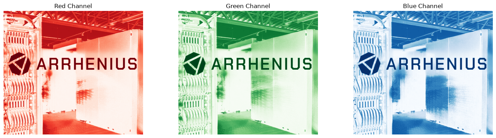
We can also display the pixel values of the 8 × 8 block on the top-left corner of the green channel image. Each value corresponds to the green intensity of an individual pixel in the 8 × 8 block. For an 8-bit RGB image, the pixel intensity values typically range from 0 to 255. A value of 0 represents no intensity in the selected color channel, while 255 represents the maximum intensity.
print(arrhenius_g[:8, :8]) # try red and blue channels
[[167 167 168 170 173 175 173 173]
[176 174 171 170 172 172 172 171]
[172 171 171 173 176 177 177 176]
[181 181 179 179 177 173 169 165]
[163 163 165 169 175 181 183 185]
[164 160 155 152 152 155 156 157]
[225 220 211 201 189 177 166 159]
[147 159 178 198 215 223 222 221]]
2. Image Resizing & Cropping
Once we obtain the pixel values of an image, we can resize and crop the image to different sizes and shapes according to our requirements. Usually, maintaining the original aspect ratio when resizing an image helps prevent distortion, such as stretching or squashing the objects within the image.
2.1 Interpolation methods for image resizing
When resizing an image, interpolation is used to estimate the pixel values that are needed to create the new image dimensions. Common interpolation methods include nearest-neighbor, bilinear, and bicubic interpolation. The choice of interpolation method can affect the quality and appearance of the resized image.
from PIL import Image
import matplotlib.pyplot as plt
arrhenius = Image.open("../images/image-data/arrhenius.jpg").convert ('RGB')
# resize while maintaining aspect ratio
target_width = 224 # change this value to see different effects
scale = target_width / arrhenius.width
target_height = int(arrhenius.height * scale)
# compare different interpolation methods
nearest = arrhenius.resize((target_width, target_width), Image.Resampling.NEAREST)
bilinear = arrhenius.resize((target_width, target_width),Image.Resampling.BILINEAR)
bicubic = arrhenius.resize((target_width, target_width), Image.Resampling.BICUBIC)
lanczos = arrhenius.resize((target_width, target_width), Image.Resampling.LANCZOS)
box = arrhenius.resize((target_width, target_width),Image.Resampling.BOX)
# display results
fig, axes = plt.subplots(2, 3, figsize=(12, 8))
axes[0, 0].imshow(arrhenius); axes[0, 0].set_title("Original")
axes[0, 1].imshow(nearest); axes[0, 1].set_title("Nearest")
axes[0, 2].imshow(bilinear); axes[0, 2].set_title("Bilinear")
axes[1, 0].imshow(bicubic); axes[1, 0].set_title("Bicubic")
axes[1, 1].imshow(lanczos); axes[1, 1].set_title("Lanczos")
axes[1, 2].imshow(box); axes[1, 2].set_title("Box")
for ax in axes.ravel():
ax.axis("off")
plt.tight_layout()
plt.show()
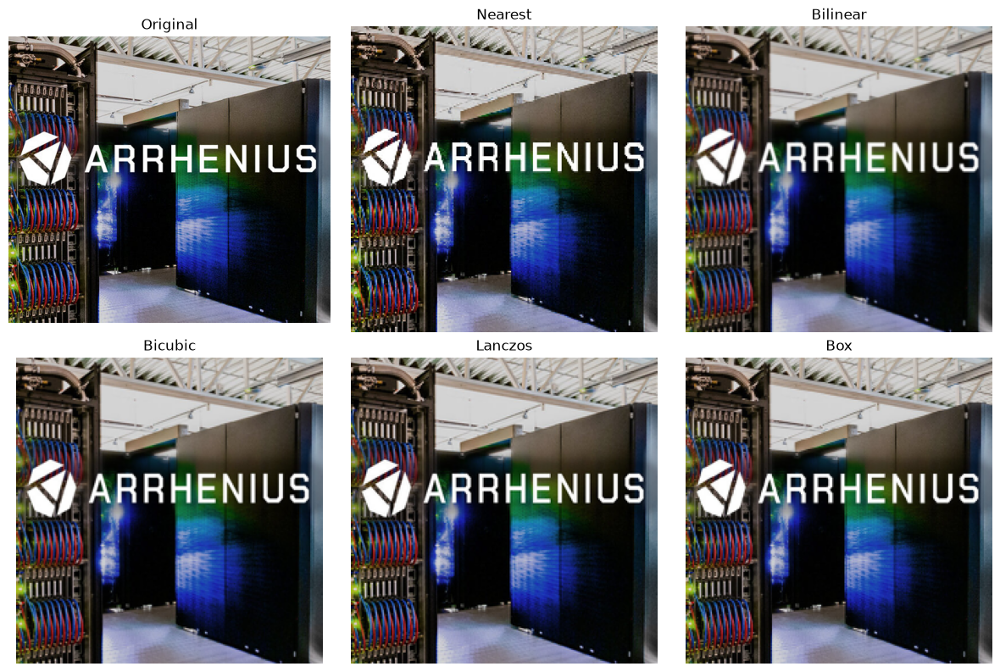
2.2 Cropping images at different locations
Cropping is another important image-processing operation. It removes portions of an image while retaining the region of interest. A center crop extracts a region from the center of the image, whereas a random crop selects a region at a randomly chosen location. These techniques are commonly used in image preprocessing and data augmentation.
import random
arrhenius = Image.open("../images/image-data/arrhenius.jpg").convert ('RGB')
crop_size = 224
# top-left
top_left = arrhenius.crop((0, 0, crop_size, crop_size))
# bottom-right
bottom_right = arrhenius.crop((
arrhenius.width - crop_size, arrhenius.height - crop_size,
arrhenius.width, arrhenius.height
))
# center
center_crop = arrhenius.crop((
(arrhenius.width - crop_size) // 2, (arrhenius.height - crop_size) // 2,
(arrhenius.width + crop_size) // 2, (arrhenius.height + crop_size) // 2
))
# multi-scale crop 50%
crop_scale = 0.5
crop_width = int(arrhenius.width * crop_scale)
crop_height = int(arrhenius.height * crop_scale)
left = (arrhenius.width - crop_width) // 2
top = (arrhenius.height - crop_height) // 2
right = left + crop_width
bottom = top + crop_height
multiscale_crop50 = arrhenius.crop((
left, top,
right, bottom
))
# random crop
max_left = arrhenius.width - crop_size
max_top = arrhenius.height - crop_size
random_left = random.randint(0, max_left)
random_top = random.randint(0, max_top)
random_crop = arrhenius.crop((
random_left, random_top,
random_left + crop_size, random_top + crop_size
))
# display results
fig, axes = plt.subplots(2, 3, figsize=(12, 8))
axes[0, 0].imshow(arrhenius); axes[0, 0].set_title("Original")
axes[0, 1].imshow(top_left); axes[0, 1].set_title("Top Left")
axes[0, 2].imshow(bottom_right); axes[0, 2].set_title("Bottom Right")
axes[1, 0].imshow(center_crop); axes[1, 0].set_title("Center Crop")
axes[1, 1].imshow(multiscale_crop50); axes[1, 1].set_title("Multiscale - 50%")
axes[1, 2].imshow(random_crop); axes[1, 2].set_title("Random Crop")
for ax in axes.ravel():
ax.axis("off")
plt.tight_layout()
plt.show()
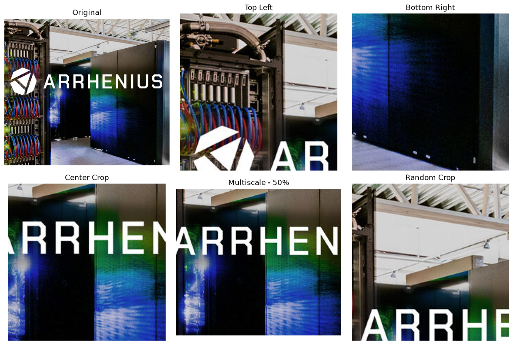
Why did we resize the image to 224 × 224 pixels?
The 224 × 224 pixel dimension is widely used in machine learning and deep learning applications, particularly in image classification models. Using a fixed image size is commonly referred to as standardizing image dimensions.
However, there is no single standard dimension for all images. The appropriate size depends on the model, application, and computational resources.
Application/model |
Common input size |
|---|---|
Image classification |
224 × 224 |
Some CNN models |
224 × 224 or 299 × 299 |
Object detection |
320 × 320, 640 × 640, etc. |
Image generation |
Often 512 × 512 or higher |
Why standardizing image dimensions matter?
Larger images preserve more spatial detail but require more memory and computation. Smaller images are faster to process but may lose important details.
Standardizing image dimensions ensures that all input images have a consistent shape and size.
Therefore, selecting an appropriate standard dimension is a trade-off between image quality, computational cost, and model requirements.
3. Pixel Intensity Preprocessing
Once the image has been resized and cropped to the required dimensions, the next step is often to prepare and transform the pixel values. This process is known as image normalization. The goal is to make the pixel values more suitable for machine learning and deep learning algorithms while, when needed, improving the visual characteristics of the image.
3.1 Normalization of pixel values
As we have seen from previous code examples, for a typical 8-bit RGB image, each pixel channel has an intensity value ranging from 0 to 255. However, using these relatively large values directly is not always ideal for machine learning or deep learning models. Therefore, the pixel values should be scaled or normalized to a smaller range. A common approach is to convert the values from the range [0, 255] to [0, 1] by dividing each pixel value by 255. This can improve numerical stability and help machine learning models train more efficiently.
arrhenius = Image.open("../images/image-data/arrhenius.jpg").convert ('RGB')
# convert image to a NumPy array
pixels = np.array(arrhenius)
print("Original pixel range:", pixels.min(), "to", pixels.max())
# scale pixel values from [0, 255] to [0, 1]
scaled_pixels = pixels / 255.0
print("Scaled pixel range:", scaled_pixels.min(), "to", scaled_pixels.max())
Original pixel range: 0 to 255
Scaled pixel range: 0.0 to 1.0
Another common normalization approach is standardization, as we discussed when handling numerical data.
# standardize pixel values
mean = scaled_pixels.mean()
std = scaled_pixels.std()
standardized_pixels = (scaled_pixels - mean) / std
print("Mean after standardization:", standardized_pixels.mean())
print("Standard deviation after standardization:", standardized_pixels.std())
Mean after standardization: 1.1228329651517633e-16
Standard deviation after standardization: 0.9999999999999999
fig, axes = plt.subplots(1, 3, figsize=(12, 4))
# original image
axes[0].imshow(arrhenius)
axes[0].set_title("Original")
# normalized image
axes[1].imshow(scaled_pixels)
axes[1].set_title("Normalized: [0, 1]")
# standardized image
standardized_display = axes[2].imshow(
standardized_pixels, cmap="gray"
)
axes[2].set_title("Standardized")
for ax in axes.ravel():
ax.axis("off")
plt.tight_layout()
plt.show()
Clipping input data to the valid range for imshow with RGB data ([0..1] for floats or [0..255] for integers). Got range [-1.066563483804543..2.1885510847366803].
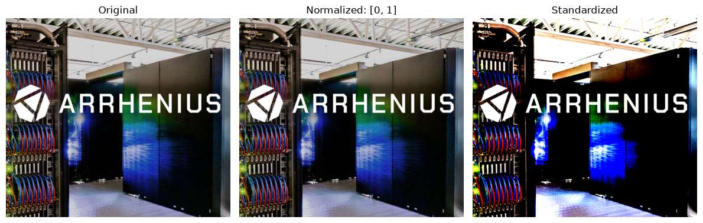
3.2 Adjustment of brightness and contrast
In addition to scaling pixel values, image preprocessing can include adjustments to brightness and contrast.
Brightness controls the overall intensity of an image. Increasing the brightness makes the image appear lighter, while decreasing it makes the image darker.
Contrast controls the difference between light and dark regions. Increasing contrast makes these differences more pronounced, whereas reducing contrast produces a flatter appearance.
These operations can be useful both for improving image quality and for data augmentation, where variations of the same image are generated to make a model more robust.
# brightness adjustment
#
# brightness factor:
# - =1.0 = original brightness
# - >1.0 = brighter
# - <1.0 = darker
from PIL import ImageEnhance
bright_image = ImageEnhance.Brightness(arrhenius).enhance(2.0)
dark_image = ImageEnhance.Brightness(arrhenius).enhance(0.5)
fig, axes = plt.subplots(1, 3, figsize=(12, 4))
axes[0].imshow(arrhenius)
axes[0].set_title("Original")
axes[1].imshow(bright_image)
axes[1].set_title("Increased Brightness")
axes[2].imshow(dark_image)
axes[2].set_title("Decreased Brightness")
for ax in axes.ravel():
ax.axis("off")
plt.tight_layout()
plt.show()
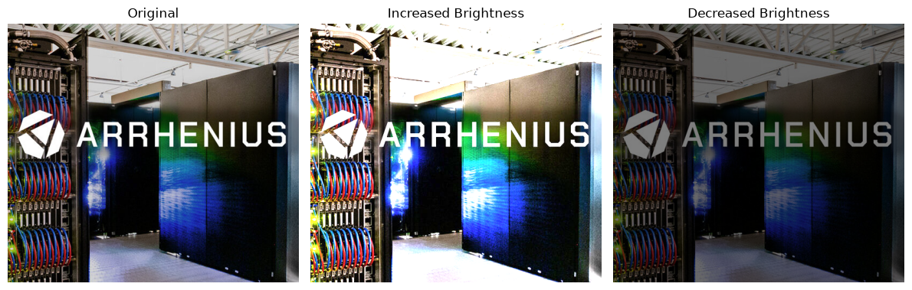
# contrast adjustment
#
# contrast factor:
# - =1.0 = original contrast
# - >1.0 = higher contrast
# - <1.0 = lower contrast
high_contrast = ImageEnhance.Contrast(arrhenius).enhance(2.0)
low_contrast = ImageEnhance.Contrast(arrhenius).enhance(0.5)
fig, axes = plt.subplots(1, 3, figsize=(12, 4))
axes[0].imshow(arrhenius)
axes[0].set_title("Original")
axes[1].imshow(high_contrast)
axes[1].set_title("High Contrast")
axes[2].imshow(low_contrast)
axes[2].set_title("Low Contrast")
for ax in axes.ravel():
ax.axis("off")
plt.tight_layout()
plt.show()
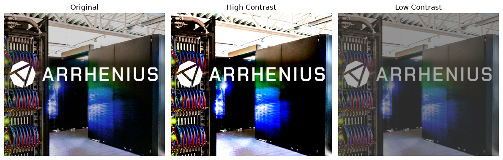
Another frequently used operation is grayscale conversion. A color RGB image contains three channels – red, green, and blue – whereas a grayscale image contains a single intensity channel. Converting an image to grayscale reduces the amount of data that needs to be processed while preserving information about brightness and structure. Grayscale images are particularly useful when color is not important for the task, such as certain applications involving shape, texture, edges, or object structure.
# convert RGB image to grayscale
grayscale_image = arrhenius.convert("L")
print("Grayscale dimensions:", grayscale_image.size)
print("Grayscale mode:", grayscale_image.mode)
fig, axes = plt.subplots(1, 3, figsize=(12, 4))
axes[0].imshow(arrhenius)
axes[0].set_title("Original [0, 255]")
axes[1].imshow(grayscale_image, cmap="gray")
axes[1].set_title("Grayscale")
axes[2].imshow(scaled_pixels)
axes[2].set_title("Normalized [0, 1]")
for ax in axes.ravel():
ax.axis("off")
plt.tight_layout()
plt.show()
Grayscale dimensions: (540, 480)
Grayscale mode: L

Warning
These pixel preprocessing operations – normalization, standardization, brightness adjustment, contrast enhancement, and grayscale conversion – are important steps in preparing images for machine learning and computer vision applications. The specific operations used depend on the requirements of the dataset and the model being trained.
4. Geometric Transformations
After resizing, cropping, and adjusting the pixel values, we can further transform an image by changing its geometric properties. These operations modify the position, orientation, or shape of objects within an image while preserving much of the original visual information.
Geometric transformations are widely used in image preprocessing and data augmentation, where modified versions of existing images are generated to increase the diversity of the training data and improve the robustness of machine learning models.
4.1 Flipping and rotating images
Flipping creates a mirror image by reversing the image along the horizontal or vertical axis.
A horizontal flip is commonly used to simulate changes in left-right orientation.
A vertical flip reverses the image from top to bottom.
However, flipping should only be used when the meaning of the image is not affected by the transformation.
# horizontal flipping
horizontal_flip = arrhenius.transpose(Image.Transpose.FLIP_LEFT_RIGHT)
# vertical flipping
vertical_flip = arrhenius.transpose(Image.Transpose.FLIP_TOP_BOTTOM)
fig, axes = plt.subplots(1, 3, figsize=(12, 4))
axes[0].imshow(arrhenius)
axes[0].set_title("Original")
axes[1].imshow(horizontal_flip)
axes[1].set_title("Horizontal Flip")
axes[2].imshow(vertical_flip)
axes[2].set_title("Vertical Flip")
for ax in axes.ravel():
ax.axis("off")
plt.tight_layout()
plt.show()
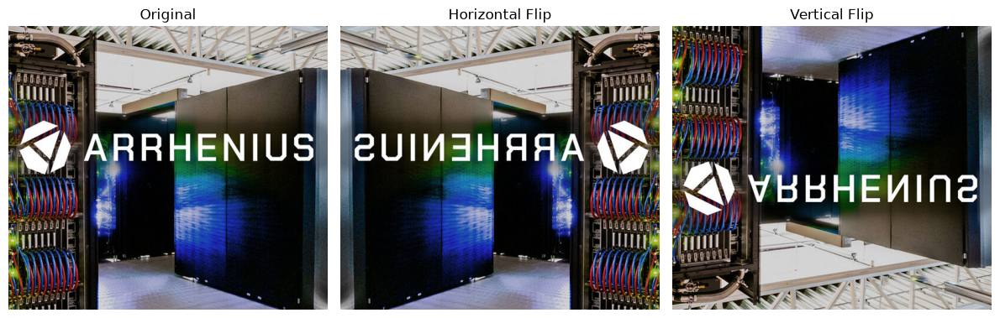
Image rotation means turning an image around its center by a certain angle. For example, we can rotate an image 45 degrees to the left or to the right. Rotation is commonly used in image preprocessing and data augmentation, especially when the orientation of an object may vary. By creating rotated versions of an image, we can increase the variety of training data and help a machine-learning model become less sensitive to the orientation of objects.
# rotate 45 degrees to left
rotate_left = arrhenius.rotate(45, expand=True)
# rotate 45 degrees to right
rotate_right = arrhenius.rotate(-45, expand=True)
fig, axes = plt.subplots(1, 3, figsize=(12, 4))
axes[0].imshow(arrhenius)
axes[0].set_title("Original")
axes[1].imshow(rotate_left)
axes[1].set_title("Rotate Left 45°")
axes[2].imshow(rotate_right)
axes[2].set_title("Rotate Right 45°")
for ax in axes.ravel():
ax.axis("off")
plt.tight_layout()
plt.show()

4.2 Translation and shearing images
Translation moves the contents of an image horizontally or vertically without changing their size or orientation. For example, an object can be shifted 40 pixels to the right and 80 pixels downward. Translation helps models become less sensitive to the exact position of an object within an image.
Shearing shifts different parts of an image by different amounts, producing a slanted or skewed appearance. Unlike rotation, which preserves the angles between lines, shearing changes the geometric relationships between them. Shearing can simulate changes in viewpoint or perspective and can therefore be useful as a data-augmentation technique.
# translation
# move image 40 pixels to right and 80 pixels downward
translated_image = Image.new("RGB", arrhenius.size)
translated_image.paste(arrhenius, (40, 80))
# shearing
# PIL uses an affine transformation for shearing.
# Transformation matrix is:
# - x' = x + shear_x * y
# - y' = y
# Here, shear_x = 0.5
width, height = arrhenius.size
sheared_image = arrhenius.transform(
(width, height),
Image.Transform.AFFINE,
(1, 0.5, 0,
0, 1, 0),
resample=Image.Resampling.BICUBIC
)
fig, axes = plt.subplots(1, 3, figsize=(12, 4))
axes[0].imshow(arrhenius)
axes[0].set_title("Original")
axes[1].imshow(translated_image)
axes[1].set_title("Translation")
axes[2].imshow(sheared_image)
axes[2].set_title("Shearing")
for ax in axes.ravel():
ax.axis("off")
plt.tight_layout()
plt.show()

4.3 Affine transformation
An affine transformation is a more general geometric transformation that combines operations such as translation, rotation, scaling, and shearing. It can be represented mathematically using a transformation matrix. An affine transformation preserves straight lines and parallel lines, although angles, distances, and shapes may change. This makes affine transformations particularly useful for creating realistic variations of training images.
# an affine transformation can combine scaling, shearing, rotation, and translation.
# example matrix:
# x' = a*x + b*y + c
# y' = d*x + e*y + f
affine_image = arrhenius.transform(
(width, height),
Image.Transform.AFFINE,
(1.0, 0.2, -20,
0.1, 1.0, -10),
resample=Image.Resampling.BICUBIC
)
fig, axes = plt.subplots(1, 2, figsize=(8, 4))
axes[0].imshow(arrhenius)
axes[0].set_title("Original")
axes[1].imshow(affine_image)
axes[1].set_title("Affine Transformation")
for ax in axes.ravel():
ax.axis("off")
plt.tight_layout()
plt.show()

These geometric transformations are important because real-world images rarely have identical orientations, positions, or shapes. By applying controlled transformations such as rotation, flipping, translation, and shearing, we can generate more diverse training examples without collecting additional images. Such a process is commonly referred to as data augmentation.
Callout
Data augmentation is a technique used to artificially increase the diversity of a training dataset by applying controlled transformations to existing images.
Instead of collecting new images, we create modified versions of the original images while preserving their important visual characteristics.
Common image augmentation techniques include horizontal flipping, rotation, cropping, translation, scaling, brightness/contrast adjustment, and adding small amounts of noise.
These transformations help a machine-learning model become more robust to variations in image orientation, position, scale, and lighting, which can help reduce overfitting and improve generalization to unseen images.
Warning
One important consideration is that not every augmentation is appropriate for every dataset. For example, a vertical flip may be inappropriate for photographs of people or buildings because an upside-down image may not represent a realistic situation. Similarly, excessive rotation, cropping, or color changes can alter the meaning of an image rather than simply creating a useful variation.
Augmentation strategy
A regular strategy to perform image augmentations follows the ordr listed below. Original Image → Pixel Representation → Resize/Crop → Intensity/Color Adjustment → Normalization/Standardization → Data Augmentation (Rotation / Flipping / Translation / Shearing) → Model.
The important point is that you don’t necessarily apply every transformation to every image. Instead, transformations are usually selected randomly with specified probabilities and ranges.
5. Image Formatting & Preprocessing
When working with color images, it is important to understand how the color channels are stored and represented. A standard RGB image contains three channels: red, green, and blue. However, different image-processing libraries and machine-learning frameworks may use different channel orderings. For example, PIL and Matplotlib typically use RGB ordering, whereas OpenCV uses BGR ordering by default. Therefore, an image loaded using OpenCV may appear to have incorrect colors if it is displayed directly using a library that expects RGB ordering.
In addition to channel ordering, the position of the channel dimension can also vary. A typical image-processing representation may use height × width × channels (H × W × C), such as in TensorFlow/Keras framework, while many deep-learning frameworks, particularly PyTorch, use channels × height × width (C × H × W). Understanding these conventions is important because an incorrect channel order or tensor shape can lead to incorrect model inputs and unexpected results.
When processing a batch of images, an additional batch dimension is added, resulting in N × C × H × W, where N represents the number of images in the batch.
# a simple TensorFlow/Keras example
# showing Height × Width × Channels (H × W × C) convention
import tensorflow as tf
import numpy as np
# create one RGB image: Height × Width × Channels
image = np.zeros((224, 224, 3), dtype=np.float32) # HWC
print("Image shape:", image.shape)
model = tf.keras.Sequential([
tf.keras.layers.Input(shape=(224, 224, 3)), # HWC
tf.keras.layers.Conv2D(32, 3, activation="relu"),
])
model.summary()
Image shape: (224, 224, 3)
Model: "sequential_3"
┏━━━━━━━━━━━━━━━━━━━━━━━━━━━━━━━━━┳━━━━━━━━━━━━━━━━━━━━━━━━┳━━━━━━━━━━━━━━━┓ ┃ Layer (type) ┃ Output Shape ┃ Param # ┃ ┡━━━━━━━━━━━━━━━━━━━━━━━━━━━━━━━━━╇━━━━━━━━━━━━━━━━━━━━━━━━╇━━━━━━━━━━━━━━━┩ │ conv2d_3 (Conv2D) │ (None, 222, 222, 32) │ 896 │ └─────────────────────────────────┴────────────────────────┴───────────────┘
Total params: 896 (3.50 KB)
Trainable params: 896 (3.50 KB)
Non-trainable params: 0 (0.00 B)
# a simple PyTorch example
# showing Channels × Height × Width (C × H × W) convention
import torch
import torch.nn as nn
# create one RGB image: Channels × Height × Width
image = torch.zeros((3, 224, 224), dtype=torch.float32) # CHW
print("Image shape:", image.shape)
model = nn.Sequential(
nn.Conv2d(in_channels=3, out_channels=32, kernel_size=3)
)
print(model)
Image shape: torch.Size([3, 224, 224])
Sequential(
(0): Conv2d(3, 32, kernel_size=(3, 3), stride=(1, 1))
)
Keypoints
Load and explore image data, including image dimensions, color modes, channels, and pixel values.
Resize and crop images using different interpolation methods and cropping strategies to obtain the required image dimensions and regions of interest.
Transform and normalize pixel values through normalization, standardization, brightness and contrast adjustment, and grayscale conversion.
Apply geometric transformations and data augmentation, including rotation, flipping, translation, shearing, and affine transformations.
Format and preprocess images for deep learning, including channel ordering, tensor dimensions, and batch representations such as H × W × C and N × C × H × W.
License
CC BY-SA for media and pedagogical material
Copyright © 2026 ENCCS. This material is released by ENCCS under the Creative Commons Attribution-ShareAlike 4.0 International (CC BY-SA 4.0).
You are free to
Share — copy and redistribute the material in any medium or format for any purpose, even commercially.
Adapt — remix, transform, and build upon the material for any purpose, even commercially.
The licensor cannot revoke these freedoms as long as you follow the license terms.
Under the following terms
Attribution — You must give appropriate credit , provide a link to the license, and indicate if changes were made . You may do so in any reasonable manner, but not in any way that suggests the licensor endorses you or your use.
ShareAlike — If you remix, transform, or build upon the material, you must distribute your contributions under the same license as the original.
No additional restrictions — You may not apply legal terms or technological measures that legally restrict others from doing anything the license permits.
Notices
You do not have to comply with the license for elements of the material in the public domain or where your use is permitted by an applicable exception or limitation .
No warranties are given. The license may not give you all of the permissions necessary for your intended use. For example, other rights such as publicity, privacy, or moral rights may limit how you use the material.
This deed highlights only some of the key features and terms of the actual license. It is not a license and has no legal value. You should carefully review all of the terms and conditions of the actual license before using the licensed material.
MIT for source code and code snippets
MIT License
Copyright (c) 2026, ENCCS project, {{author}}
Permission is hereby granted, free of charge, to any person obtaining a copy of this software and associated documentation files (the “Software”), to deal in the Software without restriction, including without limitation the rights to use, copy, modify, merge, publish, distribute, sublicense, and/or sell copies of the Software, and to permit persons to whom the Software is furnished to do so, subject to the following conditions:
The above copyright notice and this permission notice shall be included in all copies or substantial portions of the Software.
THE SOFTWARE IS PROVIDED “AS IS”, WITHOUT WARRANTY OF ANY KIND, EXPRESS OR IMPLIED, INCLUDING BUT NOT LIMITED TO THE WARRANTIES OF MERCHANTABILITY, FITNESS FOR A PARTICULAR PURPOSE AND NONINFRINGEMENT. IN NO EVENT SHALL THE AUTHORS OR COPYRIGHT HOLDERS BE LIABLE FOR ANY CLAIM, DAMAGES OR OTHER LIABILITY, WHETHER IN AN ACTION OF CONTRACT, TORT OR OTHERWISE, ARISING FROM, OUT OF OR IN CONNECTION WITH THE SOFTWARE OR THE USE OR OTHER DEALINGS IN THE SOFTWARE.